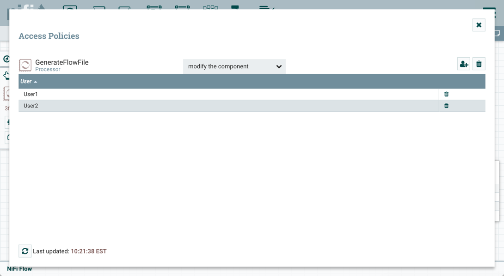
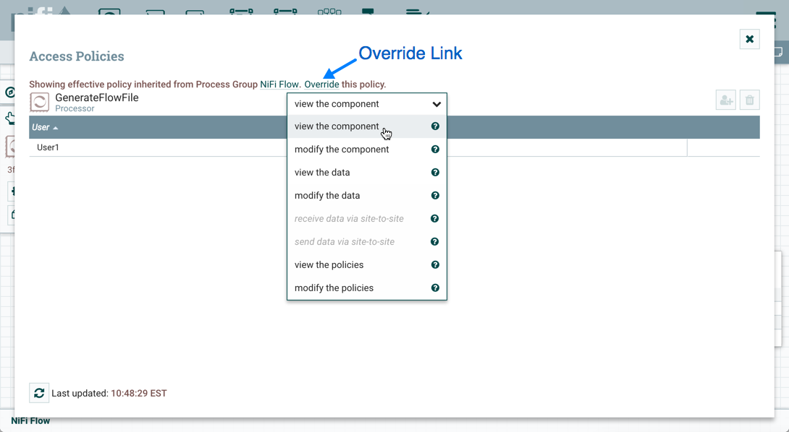
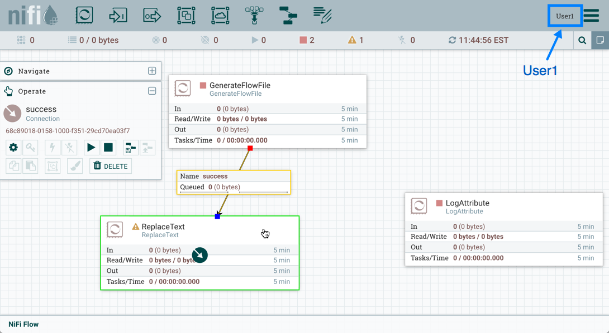
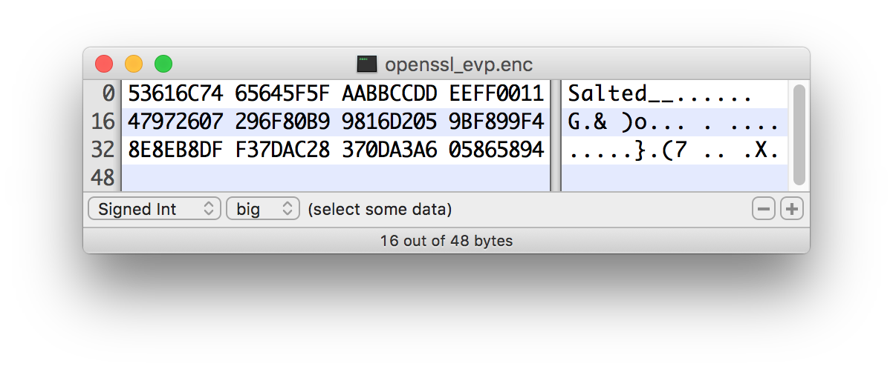

System Requirements
Apache NiFi can run on something as simple as a laptop, but it can also be clustered across many enterprise-class servers. Therefore, the amount of hardware and memory needed will depend on the size and nature of the dataflow involved. The data is stored on disk while NiFi is processing it. So NiFi needs to have sufficient disk space allocated for its various repositories, particularly the content repository, flowfile repository, and provenance repository (see the System Properties section for more information about these repositories). NiFi has the following minimum system requirements:
-
Requires Java 8 or Java 11
-
Supported Operating Systems:
-
Linux
-
Unix
-
Windows
-
macOS
-
-
Supported Web Browsers:
-
Microsoft Edge: Current & (Current - 1)
-
Mozilla FireFox: Current & (Current - 1)
-
Google Chrome: Current & (Current - 1)
-
Safari: Current & (Current - 1)
-
| Under sustained and extremely high throughput the CodeCache settings may need to be tuned to avoid sudden performance loss. See the Bootstrap Properties section for more information. |
How to install and start NiFi
-
Linux/Unix/macOS
-
Decompress and untar into desired installation directory
-
Make any desired edits in files found under
<installdir>/conf-
At a minimum, we recommend editing the nifi.properties file and entering a password for the
nifi.sensitive.props.key(see System Properties below)
-
-
From the
<installdir>/bindirectory, execute the following commands by typing./nifi.sh <command>:-
start: starts NiFi in the background -
stop: stops NiFi that is running in the background -
status: provides the current status of NiFi -
run: runs NiFi in the foreground and waits for a Ctrl-C to initiate shutdown of NiFi -
install: installs NiFi as a service that can then be controlled via-
service nifi start -
service nifi stop -
service nifi status
-
-
-
-
Windows
-
Decompress into the desired installation directory
-
Make any desired edits in the files found under
<installdir>/conf-
At a minimum, we recommend editing the nifi.properties file and entering a password for the
nifi.sensitive.props.key(see System Properties below)
-
-
Navigate to the
<installdir>/bindirectory -
Double-click
run-nifi.bat. This runs NiFi in the foreground and waits for a Ctrl-C to initiate shutdown of NiFi -
To see the current status of NiFi, double-click
status-nifi.bat
-
When NiFi first starts up, the following files and directories are created:
-
content_repository -
database_repository -
flowfile_repository -
provenance_repository -
workdirectory -
logsdirectory -
Within the
confdirectory, the flow.json.gz file is created
| For security purposes, when no security configuration is provided NiFi will now bind to 127.0.0.1 by default and the UI will only be accessible through this loopback interface. HTTPS properties should be configured to access NiFi from other interfaces. See the Security Configuration for guidance on how to do this. |
See the System Properties section of this guide for more information about configuring NiFi repositories and configuration files.
Build a Custom Distribution
The binary build of Apache NiFi that is provided by the Apache mirrors does not contain every NAR file that is part of the official release. This is due to size constraints imposed by the mirrors to reduce the expenses associated with hosting such a large project. The Developer Guide has a list of optional Maven profiles that can be activated to build a binary distribution of NiFi with these extra capabilities.
To execute build, download either Java 8 or Java 11 from Adoptium or whichever distribution of the JDK your team uses (Adoptium is the rebranding of AdoptOpenJDK which is one of the most popular). Java 8 and 11 are the only officially supported JVM releases. Then install Apache Maven.
The next step is to download a copy of the Apache NiFi source code from the NiFi Downloads page. The reason you need the source build is that it includes a module called nifi-assembly which is the Maven module that builds a binary distribution. Expand the archive and run a Maven clean build. The following example shows how to build a distribution that activates the graph and media bundle profiles to add in support for graph databases and Apache Tika content and metadata extraction.
cd <nifi_source_folder>/nifi-assembly
mvn clean install -Pinclude-grpc,include-graph,include-media
There is also a specific profile allowing you to build NiFi with all of the additional bundles that are not included by default:
mvn clean install -Pinclude-all
This will include bundles such as gRPC, Atlas, Hive, Hive 1_1, Hive 3, Media, Rules, SQL Reporting, Accumulo, Ranger, ASN1, Snowflake, Iceberg, etc.
Port Configuration
NiFi
The following table lists the default ports used by NiFi and the corresponding property in the nifi.properties file.
| Function | Property | Default Value |
|---|---|---|
HTTPS Port |
|
|
Remote Input Socket Port* |
|
|
Cluster Node Protocol Port* |
|
|
Cluster Node Load Balancing Port |
|
|
Web HTTP Forwarding Port |
|
none |
Listener Bootstrap Port |
|
random ephemeral |
The ports marked with an asterisk (*) have property values that are blank by default in nifi.properties. The values shown in the table are the default values for these ports when TLS Toolkit is used to generate nifi.properties for a secured NiFi instance. The default Certificate Authority Port used by TLS Toolkit is 9443.
|
Embedded ZooKeeper
The following table lists the default ports used by an Embedded ZooKeeper Server and the corresponding property in the zookeeper.properties file.
| Function | Property | Default Value |
|---|---|---|
ZooKeeper Client Port (Deprecated: client port is no longer specified on a separate line as of NiFi 1.10.x) |
|
|
ZooKeeper Server Quorum and Leader Election Ports |
|
none |
Commented examples for the ZooKeeper server ports are included in the zookeeper.properties file in the form server.N=nifi-nodeN-hostname:2888:3888;2181.
|
Configuration Best Practices
If you are running on Linux, consider these best practices. Typical Linux defaults are not necessarily well-tuned for the needs of an IO intensive application like NiFi. For all of these areas, your distribution’s requirements may vary. Use these sections as advice, but consult your distribution-specific documentation for how best to achieve these recommendations.
- Maximum File Handles
-
NiFi will at any one time potentially have a very large number of file handles open. Increase the limits by editing /etc/security/limits.conf to add something like
* hard nofile 50000 * soft nofile 50000
- Maximum Forked Processes
-
NiFi may be configured to generate a significant number of threads. To increase the allowable number, edit /etc/security/limits.conf
* hard nproc 10000 * soft nproc 10000
And your distribution may require an edit to /etc/security/limits.d/90-nproc.conf by adding
* soft nproc 10000
- Increase the number of TCP socket ports available
-
This is particularly important if your flow will be setting up and tearing down a large number of sockets in a small period of time.
sudo sysctl -w net.ipv4.ip_local_port_range="10000 65000"
- Set how long sockets stay in a TIMED_WAIT state when closed
-
You don’t want your sockets to sit and linger too long given that you want to be able to quickly setup and teardown new sockets. It is a good idea to read more about it and adjust to something like
for kernel 2.6
sudo sysctl -w net.ipv4.netfilter.ip_conntrack_tcp_timeout_time_wait="1"
for kernel 3.0
sudo sysctl -w net.netfilter.nf_conntrack_tcp_timeout_time_wait="1"
- Tell Linux you never want NiFi to swap
-
Swapping is fantastic for some applications. It isn’t good for something like NiFi that always wants to be running. To tell Linux you’d like swapping off, you can edit /etc/sysctl.conf to add the following line
vm.swappiness = 0
For the partitions handling the various NiFi repos, turn off things like atime.
Doing so can cause a surprising bump in throughput. Edit the /etc/fstab file
and for the partition(s) of interest, add the noatime option.
Recommended Antivirus Exclusions
Antivirus software can take a long time to scan large directories and the numerous files within them. Additionally, if the antivirus software locks files or directories during a scan, those resources are unavailable to NiFi processes, causing latency or unavailability of these resources in a NiFi instance/cluster. To prevent these performance and reliability issues from occurring, it is highly recommended to configure your antivirus software to skip scans on the following NiFi directories:
-
content_repository -
flowfile_repository -
logs -
provenance_repository -
state
Logging Configuration
NiFi uses logback as the runtime logging implementation. The conf directory contains a
standard logback.xml configuration with default appender and level settings. The
logback manual provides a complete reference of available options.
Standard Log Files
The standard logback configuration includes the following appender definitions and associated log files:
| File | Description |
|---|---|
|
Application log containing framework and component messages |
|
Bootstrap log containing startup and shutdown messages |
|
Deprecation log containing warnings for deprecated components and features |
|
HTTP request log containing user interface and REST API access messages |
|
User log containing authentication and authorization messages |
Deprecation Logging
The nifi-deprecation.log contains warning messages describing components and features that will be removed in
subsequent versions. Deprecation warnings should be evaluated and addressed to avoid breaking changes when upgrading to
a new major version. Resolving deprecation warnings involves upgrading to new components, changing component property
settings, or refactoring custom component classes.
Deprecation logging provides a method for checking compatibility before upgrading from one major release version to another. Upgrading to the latest minor release version will provide the most accurate set of deprecation warnings.
It is important to note that deprecation logging applies to both components and features. Logging for deprecated features requires a runtime reference to the property or method impacted. Disabled components with deprecated properties or methods will not generate deprecation logs. For this reason, it is important to exercise all configured components long enough to exercise standard flow behavior.
Deprecation logging can generate repeated messages depending on component configuration and usage patterns. Disabling
deprecation logging for a specific component class can be configured by adding a logger element to logback.xml.
The name attribute must start with deprecation, followed by the component class. Setting the level attribute to
OFF disables deprecation logging for the component specified.
<logger name="deprecation.org.apache.nifi.processors.ListenLegacyProtocol" level="OFF" />Security Configuration
NiFi provides several different configuration options for security purposes. The most important properties are those under the "security properties" heading in the nifi.properties file. In order to run securely, the following properties must be set:
| Property Name | Description |
|---|---|
|
Filename of the Keystore that contains the server’s private key. |
|
The type of Keystore. Must be |
|
The password for the Keystore. |
|
The password for the certificate in the Keystore. If not set, the value of |
|
Filename of the Truststore that will be used to authorize those connecting to NiFi. A secured instance with no Truststore will refuse all incoming connections. |
|
The type of the Truststore. Must be |
|
The password for the Truststore. |
Once the above properties have been configured, we can enable the User Interface to be accessed over HTTPS instead of HTTP. This is accomplished
by setting the nifi.web.https.host and nifi.web.https.port properties. The nifi.web.https.host property indicates which hostname the server
should run on. If it is desired that the HTTPS interface be accessible from all network interfaces, a value of 0.0.0.0 should be used. To allow
admins to configure the application to run only on specific network interfaces, nifi.web.http.network.interface* or nifi.web.https.network.interface*
properties can be specified.
It is important when enabling HTTPS that the nifi.web.http.port property be unset. NiFi only supports running on HTTP or HTTPS, not both simultaneously.
|
NiFi’s web server will REQUIRE certificate based client authentication for users accessing the User Interface when not configured with an alternative authentication mechanism which would require one way SSL (for instance LDAP, OpenId Connect, etc). Enabling an alternative authentication mechanism will configure the web server to WANT certificate base client authentication. This will allow it to support users with certificates and those without that may be logging in with credentials. See User Authentication for more details.
Now that the User Interface has been secured, we can easily secure Site-to-Site connections and inner-cluster communications, as well. This is
accomplished by setting the nifi.remote.input.secure and nifi.cluster.protocol.is.secure properties, respectively, to true. These communications
will always REQUIRE two way SSL as the nodes will use their configured keystore/truststore for authentication.
Automatic refreshing of NiFi’s web SSL context factory can be enabled using the following properties:
| Property Name | Description |
|---|---|
|
Specifies whether the SSL context factory should be automatically reloaded if updates to the keystore and truststore are detected. By default, it is set to |
|
Specifies the interval at which the keystore and truststore are checked for updates. Only applies if |
Once the nifi.security.autoreload.enabled property is set to true, any valid changes to the configured keystore and truststore will cause NiFi’s SSL context factory to be reloaded, allowing clients to pick up the changes. This is intended to allow expired certificates to be updated in the keystore and new trusted certificates to be added in the truststore, all without having to restart the NiFi server.
Changes to any of the nifi.security.keystore* or nifi.security.truststore* properties will not be picked up by the auto-refreshing logic, which assumes the passwords and store paths will remain the same.
|
TLS Generation Toolkit
In order to facilitate the secure setup of NiFi, you can use the tls-toolkit command line utility to automatically generate the required keystores, truststore, and relevant configuration files. This is especially useful for securing multiple NiFi nodes, which can be a tedious and error-prone process. For more information, see the TLS Toolkit section in the NiFi Toolkit Guide. Related topics include:
TLS Cipher Suites
The Java Runtime Environment provides the ability to specify custom TLS cipher suites to be used by servers when accepting client connections. See here for more information. To use this feature for the NiFi web service, the following NiFi properties may be set:
| Property Name | Description |
|---|---|
|
Set of ciphers that are available to be used by incoming client connections. Replaces system defaults if set. |
|
Set of ciphers that must not be used by incoming client connections. Filters available ciphers if set. |
Each property should take the form of a comma-separated list of common cipher names as specified
here. Regular expressions
(for example ^.*GCM_SHA256$) may also be specified.
The semantics match the use of the following Jetty APIs:
User Authentication
NiFi supports user authentication via client certificates, via username/password, via Apache Knox, or via OpenId Connect.
Username/password authentication is performed by a 'Login Identity Provider'. The Login Identity Provider is a pluggable mechanism for authenticating users via their username/password. Which Login Identity Provider to use is configured in the nifi.properties file. Currently NiFi offers username/password with Login Identity Providers options for Single User, Lightweight Directory Access Protocol (LDAP) and Kerberos.
The nifi.login.identity.provider.configuration.file property specifies the configuration file for Login Identity Providers. By default, this property is set to ./conf/login-identity-providers.xml.
The nifi.security.user.login.identity.provider property indicates which of the configured Login Identity Provider should be
used. The default value of this property is single-user-provider supporting authentication with a generated username and password.
During OpenId Connect authentication, NiFi will redirect users to login with the Provider before returning to NiFi. NiFi will then call the Provider to obtain the user identity.
During Apache Knox authentication, NiFi will redirect users to login with Apache Knox before returning to NiFi. NiFi will verify the Apache Knox token during authentication.
| NiFi can only be configured for username/password, OpenId Connect, or Apache Knox at a given time. It does not support running each of these concurrently. NiFi will require client certificates for authenticating users over HTTPS if none of these are configured. |
A user cannot anonymously authenticate with a secured instance of NiFi unless nifi.security.allow.anonymous.authentication is set to true.
If this is the case, NiFi must also be configured with an Authorizer that supports authorizing an anonymous user. Currently, NiFi does not ship
with any Authorizers that support this. There is a feature request here to help support it (NIFI-2730).
There are three scenarios to consider when setting nifi.security.allow.anonymous.authentication. When the user is directly calling an endpoint
with no attempted authentication then nifi.security.allow.anonymous.authentication will control whether the request is authenticated or rejected.
The other two scenarios are when the request is proxied. This could either be proxied by a NiFi node (e.g. a node in the NiFi cluster) or by a separate
proxy that is proxying a request for an anonymous user. In these proxy scenarios nifi.security.allow.anonymous.authentication will control whether the
request is authenticated or rejected. In all three of these scenarios if the request is authenticated it will subsequently be subjected to normal
authorization based on the requested resource.
| NiFi does not perform user authentication over HTTP. Using HTTP, all users will be granted all roles. |
Single User
The default Single User Login Identity Provider supports automated generation of username and password credentials.
The generated username will be a random UUID consisting of 36 characters. The generated password will be a random string consisting of 32 characters and stored using bcrypt hashing.
The default configuration in nifi.properties enables Single User authentication:
nifi.security.user.login.identity.provider=single-user-provider
The default login-identity-providers.xml includes a blank provider definition:
<provider> <identifier>single-user-provider</identifier> <class>org.apache.nifi.authentication.single.user.SingleUserLoginIdentityProvider</class> <property name="Username"/> <property name="Password"/> </provider>
The following command can be used to change the Username and Password:
$ ./bin/nifi.sh set-single-user-credentials <username> <password>Lightweight Directory Access Protocol (LDAP)
Below is an example and description of configuring a Login Identity Provider that integrates with a Directory Server to authenticate users.
Set the following in nifi.properties to enable LDAP username/password authentication:
nifi.security.user.login.identity.provider=ldap-provider
Modify login-identity-providers.xml to enable the ldap-provider. Here is the sample provided in the file:
<provider>
<identifier>ldap-provider</identifier>
<class>org.apache.nifi.ldap.LdapProvider</class>
<property name="Authentication Strategy">START_TLS</property>
<property name="Manager DN"></property>
<property name="Manager Password"></property>
<property name="TLS - Keystore"></property>
<property name="TLS - Keystore Password"></property>
<property name="TLS - Keystore Type"></property>
<property name="TLS - Truststore"></property>
<property name="TLS - Truststore Password"></property>
<property name="TLS - Truststore Type"></property>
<property name="TLS - Client Auth"></property>
<property name="TLS - Protocol"></property>
<property name="TLS - Shutdown Gracefully"></property>
<property name="Referral Strategy">FOLLOW</property>
<property name="Connect Timeout">10 secs</property>
<property name="Read Timeout">10 secs</property>
<property name="Url"></property>
<property name="User Search Base"></property>
<property name="User Search Filter"></property>
<property name="Identity Strategy">USE_DN</property>
<property name="Authentication Expiration">12 hours</property>
</provider>
The ldap-provider has the following properties:
| Property Name | Description |
|---|---|
|
How the connection to the LDAP server is authenticated. Possible values are |
|
The DN of the manager that is used to bind to the LDAP server to search for users. |
|
The password of the manager that is used to bind to the LDAP server to search for users. |
|
Path to the Keystore that is used when connecting to LDAP using LDAPS or START_TLS. |
|
Password for the Keystore that is used when connecting to LDAP using LDAPS or START_TLS. |
|
Type of the Keystore that is used when connecting to LDAP using LDAPS or START_TLS (i.e. |
|
Path to the Truststore that is used when connecting to LDAP using LDAPS or START_TLS. |
|
Password for the Truststore that is used when connecting to LDAP using LDAPS or START_TLS. |
|
Type of the Truststore that is used when connecting to LDAP using LDAPS or START_TLS (i.e. |
|
Client authentication policy when connecting to LDAP using LDAPS or START_TLS. Possible values are |
|
Protocol to use when connecting to LDAP using LDAPS or START_TLS. (i.e. |
|
Specifies whether the TLS should be shut down gracefully before the target context is closed. Defaults to false. |
|
Strategy for handling referrals. Possible values are |
|
Duration of connect timeout. (i.e. |
|
Duration of read timeout. (i.e. |
|
Space-separated list of URLs of the LDAP servers (i.e. |
|
Base DN for searching for users (i.e. |
|
Filter for searching for users against the |
|
Strategy to identify users. Possible values are |
|
The duration of how long the user authentication is valid for. If the user never logs out, they will be required to log back in following this duration. |
| For changes to nifi.properties and login-identity-providers.xml to take effect, NiFi needs to be restarted. If NiFi is clustered, configuration files must be the same on all nodes. |
Kerberos
Below is an example and description of configuring a Login Identity Provider that integrates with a Kerberos Key Distribution Center (KDC) to authenticate users.
Set the following in nifi.properties to enable Kerberos username/password authentication:
nifi.security.user.login.identity.provider=kerberos-provider
Modify login-identity-providers.xml to enable the kerberos-provider. Here is the sample provided in the file:
<provider>
<identifier>kerberos-provider</identifier>
<class>org.apache.nifi.kerberos.KerberosProvider</class>
<property name="Default Realm">NIFI.APACHE.ORG</property>
<property name="Authentication Expiration">12 hours</property>
</provider>
The kerberos-provider has the following properties:
| Property Name | Description |
|---|---|
|
Default realm to provide when user enters incomplete user principal (i.e. |
|
The duration of how long the user authentication is valid for. If the user never logs out, they will be required to log back in following this duration. |
See also Kerberos Service to allow single sign-on access via client Kerberos tickets.
| For changes to nifi.properties and login-identity-providers.xml to take effect, NiFi needs to be restarted. If NiFi is clustered, configuration files must be the same on all nodes. |
OpenId Connect
To enable authentication via OpenId Connect the following properties must be configured in nifi.properties.
| Property Name | Description |
|---|---|
|
The discovery URL for the desired OpenId Connect Provider (http://openid.net/specs/openid-connect-discovery-1_0.html). |
|
Connect timeout when communicating with the OpenId Connect Provider. The default value is |
|
Read timeout when communicating with the OpenId Connect Provider. The default value is |
|
The client id for NiFi after registration with the OpenId Connect Provider. |
|
The client secret for NiFi after registration with the OpenId Connect Provider. |
|
The preferred algorithm for validating identity tokens. If this value is blank, it will default to |
|
Comma separated scopes that are sent to OpenId Connect Provider in addition to |
|
Claim that identifies the user to be logged in; default is |
|
Comma separated possible fallback claims used to identify the user in case |
|
Name of the ID token claim that contains an array of group names of which the
user is a member. Application groups must be supplied from a User Group Provider with matching names in order for the
authorization process to use ID token claim groups. The default value is |
|
If value is |
SAML
To enable authentication via SAML the following properties must be configured in nifi.properties.
Configuring a Metadata URL and an Entity Identifier enables Apache NiFi to act as a SAML 2.0 Relying Party, allowing users to authenticate using an account managed through a SAML 2.0 Asserting Party.
| Property Name | Description |
|---|---|
|
The URL for obtaining the identity provider’s metadata. The metadata can be retrieved from the identity provider via |
|
The entity id of the service provider (i.e. NiFi). This value will be used as the |
|
The name of a SAML assertion attribute containing the user’sidentity. This property is optional and if not specified, or if the attribute is not found, then the NameID of the Subject will be used. |
|
The name of a SAML assertion attribute containing group names the user belongs to. This property is optional, but if populated the groups will be passed along to the authorization process. |
|
Controls the value of |
|
Controls the value of |
|
The algorithm to use when signing SAML messages. Reference the Open SAML Signature Constants for a list of valid values. If not specified, a default of SHA-256 will be used. The default value is |
|
The expiration of the NiFi JWT that will be produced from a successful SAML authentication response. The default value is |
|
Enables SAML SingleLogout which causes a logout from NiFi to logout of the identity provider. By default, a logout of NiFi will only remove the NiFi JWT. The default value is |
|
The truststore strategy when the IDP metadata URL begins with https. A value of |
|
The connection timeout when communicating with the SAML IDP. The default value is |
|
The read timeout when communicating with the SAML IDP. The default value is |
SAML REST Resources
SAML authentication enables the following REST API resources for integration with a SAML 2.0 Asserting Party:
| Resource Path | Description |
|---|---|
/nifi-api/access/saml/local-logout/request |
Complete SAML 2.0 Logout processing without communicating with the Asserting Party |
/nifi-api/access/saml/login/consumer |
Process SAML 2.0 Login Requests assertions using HTTP-POST or HTTP-REDIRECT binding |
/nifi-api/access/saml/metadata |
Retrieve SAML 2.0 entity descriptor metadata as XML |
/nifi-api/access/saml/single-logout/consumer |
Process SAML 2.0 Single Logout Request assertions using HTTP-POST or HTTP-REDIRECT binding. Requires Single Logout to be enabled. |
/nifi-api/access/saml/single-logout/request |
Complete SAML 2.0 Single Logout processing initiating a request to the Asserting Party. Requires Single Logout to be enabled. |
Apache Knox
To enable authentication via Apache Knox the following properties must be configured in nifi.properties.
| Property Name | Description |
|---|---|
|
The URL for the Apache Knox login page. |
|
The path to the Apache Knox public key that will be used to verify the signatures of the authentication tokens in the HTTP Cookie. |
|
The name of the HTTP Cookie that Apache Knox will generate after successful login. The default value is |
|
Optional. A comma separate listed of allowed audiences. If set, the audience in the token must be present in this listing. The audience that is populated in the token can be configured in Knox. |
JSON Web Tokens
NiFi uses JSON Web Tokens to provide authenticated access after the initial login process. Generated JSON Web Tokens include the authenticated user identity as well as the issuer and expiration from the configured Login Identity Provider.
NiFi uses generated RSA Key Pairs with a key size of 4096 bits to support the PS512 algorithm for JSON Web Signatures. The system stores RSA
Public Keys using the configured local State Provider and retains the RSA Private Key in memory. This approach supports signature verification
for the expiration configured in the Login Identity Provider without persisting the private key.
JSON Web Token support includes revocation on logout using JSON Web Token Identifiers. The system denies access for expired tokens based on the Login Identity Provider configuration, but revocation invalidates the token prior to expiration. The system stores revoked identifiers using the configured local State Provider and runs a scheduled command to delete revoked identifiers after the associated expiration.
The following settings can be configured in nifi.properties to control JSON Web Token signing.
| Property Name | Description |
|---|---|
|
JSON Web Signature Key Rotation Period defines how often the system generates a new RSA Key Pair, expressed as an ISO 8601 duration. The default is one hour: |
Cross-Site Request Forgery Protection
NiFi 1.15.0 introduced Cross-Site Request Forgery protection as part of user interface access based on session cookies. CSRF protection builds on standard Spring Security features and implements the double submit cookie strategy. The implementation strategy relies on the server generating and sending a random request token cookie at the beginning of the session. The client browser stores the cookie, JavaScript application code reads the cookie, and sets the value in a custom HTTP header on subsequent requests.
NiFi applies the SameSite attribute with a value of Strict to session cookies, which instructs supporting web
browsers to avoid sending the cookie on requests that a third party initiates. These protections mitigate a number of
potential threats.
Cookie names are not considered part of the public REST API and are subject to change in minor release
versions. Programmatic HTTP requests to the NiFi REST API should use the standard HTTP Authorization header when
sending access tokens instead of the session cookie that the NiFi user interface uses.
NiFi deployments that include HTTP load balanced access with Session Affinity depend on custom HTTP cookies, requiring custom programmatic clients to store and send cookies for the duration of an authenticated session. Programmatic clients in these scenarios should limit cookie storage to cookie names specific to the HTTP load balancer to avoid HTTP 403 Forbidden errors related to CSRF filtering.
The CSRF implementation sends the following HTTP cookie to set the random request token for the session:
-
Cookie Name:
__Secure-Request-Token -
Value: Random UUID
The CSRF security filter expects the following HTTP request header on non-idempotent methods such as POST or PUT:
-
Header Name:
Request-Token -
Value: UUID matching the
__Secure-Request-Tokencookie header
Multi-Tenant Authorization
After you have configured NiFi to run securely and with an authentication mechanism, you must configure who has access to the system, and the level of their access. You can do this using 'multi-tenant authorization'. Multi-tenant authorization enables multiple groups of users (tenants) to command, control, and observe different parts of the dataflow, with varying levels of authorization. When an authenticated user attempts to view or modify a NiFi resource, the system checks whether the user has privileges to perform that action. These privileges are defined by policies that you can apply system-wide or to individual components.
Authorizer Configuration
An 'authorizer' grants users the privileges to manage users and policies by creating preliminary authorizations at startup.
Authorizers are configured using two properties in the nifi.properties file:
-
The
nifi.authorizer.configuration.fileproperty specifies the configuration file where authorizers are defined. By default, the authorizers.xml file located in the root installation conf directory is selected. -
The
nifi.security.user.authorizerproperty indicates which of the configured authorizers in the authorizers.xml file to use.
Authorizers.xml Setup
The authorizers.xml file is used to define and configure available authorizers. The default authorizer is the StandardManagedAuthorizer. The managed authorizer is comprised of a UserGroupProvider and a AccessPolicyProvider. The users, group, and access policies will be loaded and optionally configured through these providers. The managed authorizer will make all access decisions based on these provided users, groups, and access policies.
During startup there is a check to ensure that there are no two users/groups with the same identity/name. This check is executed regardless of the configured implementation. This is necessary because this is how users/groups are identified and authorized during access decisions.
FileUserGroupProvider
The default UserGroupProvider is the FileUserGroupProvider, however, you can develop additional UserGroupProviders as extensions. The FileUserGroupProvider has the following properties:
-
Users File - The file where the FileUserGroupProvider stores users and groups. By default, the users.xml in the
confdirectory is chosen. -
Legacy Authorized Users File - The full path to an existing authorized-users.xml that will be automatically be used to load the users and groups into the Users File.
-
Initial User Identity - The identity of a users and systems to seed the Users File. The name of each property must be unique, for example: "Initial User Identity A", "Initial User Identity B", "Initial User Identity C" or "Initial User Identity 1", "Initial User Identity 2", "Initial User Identity 3"
LdapUserGroupProvider
Another option for the UserGroupProvider is the LdapUserGroupProvider. By default, this option is commented out but can be configured in lieu of the FileUserGroupProvider. This will sync users and groups from a directory server and will present them in the NiFi UI in read only form.
The LdapUserGroupProvider has the following properties:
| Property Name | Description |
|---|---|
|
How the connection to the LDAP server is authenticated. Possible values are |
|
The DN of the manager that is used to bind to the LDAP server to search for users. |
|
The password of the manager that is used to bind to the LDAP server to search for users. |
|
Path to the Keystore that is used when connecting to LDAP using LDAPS or START_TLS. |
|
Password for the Keystore that is used when connecting to LDAP using LDAPS or START_TLS. |
|
Type of the Keystore that is used when connecting to LDAP using LDAPS or START_TLS (i.e. |
|
Path to the Truststore that is used when connecting to LDAP using LDAPS or START_TLS. |
|
Password for the Truststore that is used when connecting to LDAP using LDAPS or START_TLS. |
|
Type of the Truststore that is used when connecting to LDAP using LDAPS or START_TLS (i.e. |
|
Client authentication policy when connecting to LDAP using LDAPS or START_TLS. Possible values are |
|
Protocol to use when connecting to LDAP using LDAPS or START_TLS. (i.e. |
|
Specifies whether the TLS should be shut down gracefully before the target context is closed. Defaults to false. |
|
Strategy for handling referrals. Possible values are |
|
Duration of connect timeout. (i.e. |
|
Duration of read timeout. (i.e. |
|
Space-separated list of URLs of the LDAP servers (i.e. |
|
Sets the page size when retrieving users and groups. If not specified, no paging is performed. |
|
Sets whether group membership decisions are case sensitive. When a user or group is inferred (by not specifying or user or group search base or user identity attribute or group name attribute) case sensitivity is enforced since the value to use for the user identity or group name would be ambiguous. Defaults to false. |
|
Duration of time between syncing users and groups. (i.e. |
|
Base DN for searching for users (i.e. |
|
Object class for identifying users (i.e. |
|
Search scope for searching users ( |
|
Filter for searching for users against the |
|
Attribute to use to extract user identity (i.e. |
|
Attribute to use to define group membership (i.e. |
|
If blank, the value of the attribute defined in |
|
Base DN for searching for groups (i.e. |
|
Object class for identifying groups (i.e. |
|
Search scope for searching groups ( |
|
Filter for searching for groups against the |
|
Attribute to use to extract group name (i.e. |
|
Attribute to use to define group membership (i.e. |
|
If blank, the value of the attribute defined in |
| Any identity mapping rules specified in nifi.properties will also be applied to the user identities. Group names are not mapped. |
ShellUserGroupProvider
The ShellUserGroupProvider fetches user and group details from Unix-like systems using shell commands.
This provider executes various shell pipelines with commands such as getent on Linux and dscl on macOS.
Supported systems may be configured to retrieve users and groups from an external source, such as LDAP or NIS. In these cases the shell commands will return those external users and groups. This provides administrators another mechanism to integrate user and group directory services.
The ShellUserGroupProvider has the following properties:
| Property Name | Description |
|---|---|
|
Duration of initial delay before first user and group refresh. (i.e. |
|
Duration of delay between each user and group refresh. (i.e. |
|
Regular expression used to exclude groups. Default is '', which means no groups are excluded. |
|
Regular expression used to exclude users. Default is '', which means no users are excluded. |
Like LdapUserGroupProvider, the ShellUserGroupProvider is commented out in the authorizers.xml file. Refer to that comment for usage examples.
AzureGraphUserGroupProvider
The AzureGraphUserGroupProvider fetches users and groups from Azure Active Directory (AAD) using the Microsoft Graph API.
A subset of groups are fetched based on filter conditions (Group Filter Prefix, Group Filter Suffix, Group Filter Substring, and Group Filter List Inclusion) evaluated against the displayName property of the Azure AD group. Member users are then loaded from these groups. At least one filter condition should be specified.
This provider requires an Azure app registration with:
-
Microsoft Graph Group.Read.All and User.Read.All API permissions with admin consent
-
A client secret or application password
-
ID token claims for upn and/or email
The AzureGraphUserGroupProvider has the following properties:
| Property Name | Description |
|---|---|
|
Duration of delay between each user and group refresh. Default is |
|
The endpoint of the Azure AD login. This can be found in the Azure portal under Azure Active Directory → App registrations → [application name] → Endpoints. For example, the global authority endpoint is https://login.microsoftonline.com. |
|
Tenant ID or Directory ID of the Azure AD tenant. This can be found in the Azure portal under Azure Active Directory → App registrations → [application name] → Directory (tenant) ID. |
|
Client ID or Application ID of the Azure app registration. This can be found in the Azure portal under Azure Active Directory → App registrations → [application name] → Overview → Application (client) ID. |
|
A client secret from the Azure app registration. Secrets can be created in the Azure portal under Azure Active Directory → App registrations → [application name] → Certificates & secrets → Client secrets → [+] New client secret. |
|
Prefix filter for Azure AD groups. Matches against the group displayName to retrieve only groups with names starting with the provided prefix. |
|
Suffix filter for Azure AD groups. Matches against the group displayName to retrieve only groups with names ending with the provided suffix. |
|
Substring filter for Azure AD groups. Matches against the group displayName to retrieve only groups with names containing the provided substring. |
|
Comma-separated list of Azure AD groups. If no string-based matching filter (i.e., prefix, suffix, and substring) is specified, set this property to avoid fetching all groups and users in the Azure AD tenant. |
|
Page size to use with the Microsoft Graph API. Set to 0 to disable paging API calls. Default: 50, Max: 999. |
|
The property of the user directory object mapped to the NiFi user name field. Default is 'upn'. 'email' is another option when |
Like LdapUserGroupProvider and ShellUserGroupProvider, the AzureGraphUserGroupProvider configuration is commented out in the authorizers.xml file. Refer to the comment for a starter configuration.
Composite Implementations
Another option for the UserGroupProvider are composite implementations. This means that multiple sources/implementations can be configured and composed. For instance, an admin can configure users/groups to be loaded from a file and a directory server. There are two composite implementations, one that supports multiple UserGroupProviders and one that supports multiple UserGroupProviders and a single configurable UserGroupProvider.
The CompositeUserGroupProvider will provide support for retrieving users and groups from multiple sources. The CompositeUserGroupProvider has the following property:
| Property Name | Description |
|---|---|
|
The identifier of user group providers to load from. The name of each property must be unique, for example: "User Group Provider A", "User Group Provider B", "User Group Provider C" or "User Group Provider 1", "User Group Provider 2", "User Group Provider 3" |
| Any identity mapping rules specified in nifi.properties are not applied in this implementation. This behavior would need to be applied by the base implementation. |
The CompositeConfigurableUserGroupProvider will provide support for retrieving users and groups from multiple sources. Additionally, a single configurable user group provider is required. Users from the configurable user group provider are configurable, however users loaded from one of the User Group Provider [unique key] will not be. The CompositeConfigurableUserGroupProvider has the following properties:
| Property Name | Description |
|---|---|
|
A configurable user group provider. |
|
The identifier of user group providers to load from. The name of each property must be unique, for example: "User Group Provider A", "User Group Provider B", "User Group Provider C" or "User Group Provider 1", "User Group Provider 2", "User Group Provider 3" |
FileAccessPolicyProvider
The default AccessPolicyProvider is the FileAccessPolicyProvider, however, you can develop additional AccessPolicyProvider as extensions. The FileAccessPolicyProvider has the following properties:
| Property Name | Description |
|---|---|
|
The identifier for an User Group Provider defined above that will be used to access users and groups for use in the managed access policies. |
|
The file where the FileAccessPolicyProvider will store policies. |
|
The identity of an initial admin user that will be granted access to the UI and given the ability to create additional users, groups, and policies. The value of this property could be a DN when using certificates or LDAP, or a Kerberos principal. This property will only be used when there are no other policies defined. If this property is specified then a Legacy Authorized Users File can not be specified. |
|
The full path to an existing authorized-users.xml that will be automatically converted to the new authorizations model. If this property is specified then an Initial Admin Identity can not be specified, and this property will only be used when there are no other users, groups, and policies defined. |
|
The identity of a NiFi cluster node. When clustered, a property for each node should be defined, so that every node knows about every other node. If not clustered these properties can be ignored. The name of each property must be unique, for example for a three node cluster: "Node Identity A", "Node Identity B", "Node Identity C" or "Node Identity 1", "Node Identity 2", "Node Identity 3" |
|
The name of a group containing NiFi cluster nodes. The typical use for this is when nodes are dynamically added/removed from the cluster. |
| The identities configured in the Initial Admin Identity, the Node Identity properties, or discovered in a Legacy Authorized Users File must be available in the configured User Group Provider. |
| Any users in the legacy users file must be found in the configured User Group Provider. |
| Any identity mapping rules specified in nifi.properties will also be applied to the node identities, so the values should be the unmapped identities (i.e. full DN from a certificate). This identity must be found in the configured User Group Provider. |
StandardManagedAuthorizer
The default authorizer is the StandardManagedAuthorizer, however, you can develop additional authorizers as extensions. The StandardManagedAuthorizer has the following property:
| Property Name | Description |
|---|---|
|
The identifier for an Access Policy Provider defined above. |
FileAuthorizer
The FileAuthorizer has been replaced with the more granular StandardManagedAuthorizer approach described above. However, it is still available for backwards compatibility reasons. The FileAuthorizer has the following properties:
| Property Name | Description |
|---|---|
|
The file where the FileAuthorizer stores policies. By default, the authorizations.xml in the |
|
The file where the FileAuthorizer stores users and groups. By default, the users.xml in the |
|
The identity of an initial admin user that is granted access to the UI and given the ability to create additional users, groups, and policies. This property is only used when there are no other users, groups, and policies defined. |
|
The full path to an existing authorized-users.xml that is automatically converted to the multi-tenant authorization model. This property is only used when there are no other users, groups, and policies defined. |
|
The identity of a NiFi cluster node. When clustered, a property for each node should be defined, so that every node knows about every other node. If not clustered, these properties can be ignored. |
| Any identity mapping rules specified in nifi.properties will also be applied to the initial admin identity, so the value should be the unmapped identity. |
| Any identity mapping rules specified in nifi.properties will also be applied to the node identities, so the values should be the unmapped identities (i.e. full DN from a certificate). |
Initial Admin Identity (New NiFi Instance)
If you are setting up a secured NiFi instance for the first time, you must manually designate an Initial Admin Identity in the authorizers.xml file. This initial admin user is granted access to the UI and given the ability to create additional users, groups, and policies. The value of this property could be a DN (when using certificates or LDAP) or a Kerberos principal. If you are the NiFi administrator, add yourself as the Initial Admin Identity.
After you have edited and saved the authorizers.xml file, restart NiFi. The Initial Admin Identity user and administrative policies are added to the users.xml and authorizations.xml files during restart. Once NiFi starts, the Initial Admin Identity user is able to access the UI and begin managing users, groups, and policies.
| For a brand new secure flow, providing the "Initial Admin Identity" gives that user access to get into the UI and to manage users, groups and policies. But if that user wants to start modifying the flow, they need to grant themselves policies for the root process group. The system is unable to do this automatically because in a new flow the UUID of the root process group is not permanent until the flow.json.gz is generated. If the NiFi instance is an upgrade from an existing flow.json.gz or a 1.x instance going from unsecure to secure, then the "Initial Admin Identity" user is automatically given the privileges to modify the flow. |
Some common use cases are described below.
File-based (LDAP Authentication)
Here is an example LDAP entry using the name John Smith:
<authorizers>
<userGroupProvider>
<identifier>file-user-group-provider</identifier>
<class>org.apache.nifi.authorization.FileUserGroupProvider</class>
<property name="Users File">./conf/users.xml</property>
<property name="Legacy Authorized Users File"></property>
<property name="Initial User Identity 1">cn=John Smith,ou=people,dc=example,dc=com</property>
</userGroupProvider>
<accessPolicyProvider>
<identifier>file-access-policy-provider</identifier>
<class>org.apache.nifi.authorization.FileAccessPolicyProvider</class>
<property name="User Group Provider">file-user-group-provider</property>
<property name="Authorizations File">./conf/authorizations.xml</property>
<property name="Initial Admin Identity">cn=John Smith,ou=people,dc=example,dc=com</property>
<property name="Legacy Authorized Users File"></property>
<property name="Node Identity 1"></property>
</accessPolicyProvider>
<authorizer>
<identifier>managed-authorizer</identifier>
<class>org.apache.nifi.authorization.StandardManagedAuthorizer</class>
<property name="Access Policy Provider">file-access-policy-provider</property>
</authorizer>
</authorizers>
File-based (Kerberos Authentication)
Here is an example Kerberos entry using the name John Smith and realm NIFI.APACHE.ORG:
<authorizers>
<userGroupProvider>
<identifier>file-user-group-provider</identifier>
<class>org.apache.nifi.authorization.FileUserGroupProvider</class>
<property name="Users File">./conf/users.xml</property>
<property name="Legacy Authorized Users File"></property>
<property name="Initial User Identity 1">johnsmith@NIFI.APACHE.ORG</property>
</userGroupProvider>
<accessPolicyProvider>
<identifier>file-access-policy-provider</identifier>
<class>org.apache.nifi.authorization.FileAccessPolicyProvider</class>
<property name="User Group Provider">file-user-group-provider</property>
<property name="Authorizations File">./conf/authorizations.xml</property>
<property name="Initial Admin Identity">johnsmith@NIFI.APACHE.ORG</property>
<property name="Legacy Authorized Users File"></property>
<property name="Node Identity 1"></property>
</accessPolicyProvider>
<authorizer>
<identifier>managed-authorizer</identifier>
<class>org.apache.nifi.authorization.StandardManagedAuthorizer</class>
<property name="Access Policy Provider">file-access-policy-provider</property>
</authorizer>
</authorizers>
LDAP-based Users/Groups Referencing User DN
Here is an example loading users and groups from LDAP. Group membership will be driven through the member attribute of each group. Authorization will still use file-based access policies:
dn: cn=User 1,ou=users,o=nifi
objectClass: organizationalPerson
objectClass: person
objectClass: inetOrgPerson
objectClass: top
cn: User 1
sn: User1
uid: user1
dn: cn=User 2,ou=users,o=nifi
objectClass: organizationalPerson
objectClass: person
objectClass: inetOrgPerson
objectClass: top
cn: User 2
sn: User2
uid: user2
dn: cn=admins,ou=groups,o=nifi
objectClass: groupOfNames
objectClass: top
cn: admins
member: cn=User 1,ou=users,o=nifi
member: cn=User 2,ou=users,o=nifi
<authorizers>
<userGroupProvider>
<identifier>ldap-user-group-provider</identifier>
<class>org.apache.nifi.ldap.tenants.LdapUserGroupProvider</class>
<property name="Authentication Strategy">ANONYMOUS</property>
<property name="Manager DN"></property>
<property name="Manager Password"></property>
<property name="TLS - Keystore"></property>
<property name="TLS - Keystore Password"></property>
<property name="TLS - Keystore Type"></property>
<property name="TLS - Truststore"></property>
<property name="TLS - Truststore Password"></property>
<property name="TLS - Truststore Type"></property>
<property name="TLS - Client Auth"></property>
<property name="TLS - Protocol"></property>
<property name="TLS - Shutdown Gracefully"></property>
<property name="Referral Strategy">FOLLOW</property>
<property name="Connect Timeout">10 secs</property>
<property name="Read Timeout">10 secs</property>
<property name="Url">ldap://localhost:10389</property>
<property name="Page Size"></property>
<property name="Sync Interval">30 mins</property>
<property name="Group Membership - Enforce Case Sensitivity">false</property>
<property name="User Search Base">ou=users,o=nifi</property>
<property name="User Object Class">person</property>
<property name="User Search Scope">ONE_LEVEL</property>
<property name="User Search Filter"></property>
<property name="User Identity Attribute">cn</property>
<property name="User Group Name Attribute"></property>
<property name="User Group Name Attribute - Referenced Group Attribute"></property>
<property name="Group Search Base">ou=groups,o=nifi</property>
<property name="Group Object Class">groupOfNames</property>
<property name="Group Search Scope">ONE_LEVEL</property>
<property name="Group Search Filter"></property>
<property name="Group Name Attribute">cn</property>
<property name="Group Member Attribute">member</property>
<property name="Group Member Attribute - Referenced User Attribute"></property>
</userGroupProvider>
<accessPolicyProvider>
<identifier>file-access-policy-provider</identifier>
<class>org.apache.nifi.authorization.FileAccessPolicyProvider</class>
<property name="User Group Provider">ldap-user-group-provider</property>
<property name="Authorizations File">./conf/authorizations.xml</property>
<property name="Initial Admin Identity">John Smith</property>
<property name="Legacy Authorized Users File"></property>
<property name="Node Identity 1"></property>
</accessPolicyProvider>
<authorizer>
<identifier>managed-authorizer</identifier>
<class>org.apache.nifi.authorization.StandardManagedAuthorizer</class>
<property name="Access Policy Provider">file-access-policy-provider</property>
</authorizer>
</authorizers>
The Initial Admin Identity value would have loaded from the cn from John Smith’s entry based on the User Identity Attribute value.
LDAP-based Users/Groups Referencing User Attribute
Here is an example loading users and groups from LDAP. Group membership will be driven through the member uid attribute of each group. Authorization will still use file-based access policies:
dn: uid=User 1,ou=Users,dc=local
objectClass: inetOrgPerson
objectClass: posixAccount
objectClass: shadowAccount
uid: user1
cn: User 1
dn: uid=User 2,ou=Users,dc=local
objectClass: inetOrgPerson
objectClass: posixAccount
objectClass: shadowAccount
uid: user2
cn: User 2
dn: cn=Managers,ou=Groups,dc=local
objectClass: posixGroup
cn: Managers
memberUid: user1
memberUid: user2
<authorizers>
<userGroupProvider>
<identifier>ldap-user-group-provider</identifier>
<class>org.apache.nifi.ldap.tenants.LdapUserGroupProvider</class>
<property name="Authentication Strategy">ANONYMOUS</property>
<property name="Manager DN"></property>
<property name="Manager Password"></property>
<property name="TLS - Keystore"></property>
<property name="TLS - Keystore Password"></property>
<property name="TLS - Keystore Type"></property>
<property name="TLS - Truststore"></property>
<property name="TLS - Truststore Password"></property>
<property name="TLS - Truststore Type"></property>
<property name="TLS - Client Auth"></property>
<property name="TLS - Protocol"></property>
<property name="TLS - Shutdown Gracefully"></property>
<property name="Referral Strategy">FOLLOW</property>
<property name="Connect Timeout">10 secs</property>
<property name="Read Timeout">10 secs</property>
<property name="Url">ldap://localhost:10389</property>
<property name="Page Size"></property>
<property name="Sync Interval">30 mins</property>
<property name="Group Membership - Enforce Case Sensitivity">false</property>
<property name="User Search Base">ou=Users,dc=local</property>
<property name="User Object Class">posixAccount</property>
<property name="User Search Scope">ONE_LEVEL</property>
<property name="User Search Filter"></property>
<property name="User Identity Attribute">cn</property>
<property name="User Group Name Attribute"></property>
<property name="User Group Name Attribute - Referenced Group Attribute"></property>
<property name="Group Search Base">ou=Groups,dc=local</property>
<property name="Group Object Class">posixGroup</property>
<property name="Group Search Scope">ONE_LEVEL</property>
<property name="Group Search Filter"></property>
<property name="Group Name Attribute">cn</property>
<property name="Group Member Attribute">memberUid</property>
<property name="Group Member Attribute - Referenced User Attribute">uid</property>
</userGroupProvider>
<accessPolicyProvider>
<identifier>file-access-policy-provider</identifier>
<class>org.apache.nifi.authorization.FileAccessPolicyProvider</class>
<property name="User Group Provider">ldap-user-group-provider</property>
<property name="Authorizations File">./conf/authorizations.xml</property>
<property name="Initial Admin Identity">John Smith</property>
<property name="Legacy Authorized Users File"></property>
<property name="Node Identity 1"></property>
</accessPolicyProvider>
<authorizer>
<identifier>managed-authorizer</identifier>
<class>org.apache.nifi.authorization.StandardManagedAuthorizer</class>
<property name="Access Policy Provider">file-access-policy-provider</property>
</authorizer>
</authorizers>
Composite - File and LDAP-based Users/Groups
Here is an example composite implementation loading users and groups from LDAP and a local file. Group membership will be driven through the member attribute of each group. The users from LDAP will be read only while the users loaded from the file will be configurable in UI.
dn: cn=User 1,ou=users,o=nifi
objectClass: organizationalPerson
objectClass: person
objectClass: inetOrgPerson
objectClass: top
cn: User 1
sn: User1
uid: user1
dn: cn=User 2,ou=users,o=nifi
objectClass: organizationalPerson
objectClass: person
objectClass: inetOrgPerson
objectClass: top
cn: User 2
sn: User2
uid: user2
dn: cn=admins,ou=groups,o=nifi
objectClass: groupOfNames
objectClass: top
cn: admins
member: cn=User 1,ou=users,o=nifi
member: cn=User 2,ou=users,o=nifi
<authorizers>
<userGroupProvider>
<identifier>file-user-group-provider</identifier>
<class>org.apache.nifi.authorization.FileUserGroupProvider</class>
<property name="Users File">./conf/users.xml</property>
<property name="Legacy Authorized Users File"></property>
<property name="Initial User Identity 1">cn=nifi-node1,ou=servers,dc=example,dc=com</property>
<property name="Initial User Identity 2">cn=nifi-node2,ou=servers,dc=example,dc=com</property>
</userGroupProvider>
<userGroupProvider>
<identifier>ldap-user-group-provider</identifier>
<class>org.apache.nifi.ldap.tenants.LdapUserGroupProvider</class>
<property name="Authentication Strategy">ANONYMOUS</property>
<property name="Manager DN"></property>
<property name="Manager Password"></property>
<property name="TLS - Keystore"></property>
<property name="TLS - Keystore Password"></property>
<property name="TLS - Keystore Type"></property>
<property name="TLS - Truststore"></property>
<property name="TLS - Truststore Password"></property>
<property name="TLS - Truststore Type"></property>
<property name="TLS - Client Auth"></property>
<property name="TLS - Protocol"></property>
<property name="TLS - Shutdown Gracefully"></property>
<property name="Referral Strategy">FOLLOW</property>
<property name="Connect Timeout">10 secs</property>
<property name="Read Timeout">10 secs</property>
<property name="Url">ldap://localhost:10389</property>
<property name="Page Size"></property>
<property name="Sync Interval">30 mins</property>
<property name="Group Membership - Enforce Case Sensitivity">false</property>
<property name="User Search Base">ou=users,o=nifi</property>
<property name="User Object Class">person</property>
<property name="User Search Scope">ONE_LEVEL</property>
<property name="User Search Filter"></property>
<property name="User Identity Attribute">cn</property>
<property name="User Group Name Attribute"></property>
<property name="User Group Name Attribute - Referenced Group Attribute"></property>
<property name="Group Search Base">ou=groups,o=nifi</property>
<property name="Group Object Class">groupOfNames</property>
<property name="Group Search Scope">ONE_LEVEL</property>
<property name="Group Search Filter"></property>
<property name="Group Name Attribute">cn</property>
<property name="Group Member Attribute">member</property>
<property name="Group Member Attribute - Referenced User Attribute"></property>
</userGroupProvider>
<userGroupProvider>
<identifier>composite-user-group-provider</identifier>
<class>org.apache.nifi.authorization.CompositeConfigurableUserGroupProvider</class>
<property name="Configurable User Group Provider">file-user-group-provider</property>
<property name="User Group Provider 1">ldap-user-group-provider</property>
</userGroupProvider>
<accessPolicyProvider>
<identifier>file-access-policy-provider</identifier>
<class>org.apache.nifi.authorization.FileAccessPolicyProvider</class>
<property name="User Group Provider">composite-user-group-provider</property>
<property name="Authorizations File">./conf/authorizations.xml</property>
<property name="Initial Admin Identity">John Smith</property>
<property name="Legacy Authorized Users File"></property>
<property name="Node Identity 1">cn=nifi-node1,ou=servers,dc=example,dc=com</property>
<property name="Node Identity 2">cn=nifi-node2,ou=servers,dc=example,dc=com</property>
</accessPolicyProvider>
<authorizer>
<identifier>managed-authorizer</identifier>
<class>org.apache.nifi.authorization.StandardManagedAuthorizer</class>
<property name="Access Policy Provider">file-access-policy-provider</property>
</authorizer>
</authorizers>
In this example, the users and groups are loaded from LDAP but the servers are managed in a local file. The Initial Admin Identity value came from an attribute in a LDAP entry based on the User Identity Attribute. The Node Identity values are established in the local file using the Initial User Identity properties.
Legacy Authorized Users (NiFi Instance Upgrade)
If you are upgrading from a 0.x NiFi instance, you can convert your previously configured users and roles to the multi-tenant authorization model. In the authorizers.xml file, specify the location of your existing authorized-users.xml file in the Legacy Authorized Users File property.
Here is an example entry:
<authorizers>
<userGroupProvider>
<identifier>file-user-group-provider</identifier>
<class>org.apache.nifi.authorization.FileUserGroupProvider</class>
<property name="Users File">./conf/users.xml</property>
<property name="Legacy Authorized Users File">/Users/johnsmith/config_files/authorized-users.xml</property>
<property name="Initial User Identity 1"></property>
</userGroupProvider>
<accessPolicyProvider>
<identifier>file-access-policy-provider</identifier>
<class>org.apache.nifi.authorization.FileAccessPolicyProvider</class>
<property name="User Group Provider">file-user-group-provider</property>
<property name="Authorizations File">./conf/authorizations.xml</property>
<property name="Initial Admin Identity"></property>
<property name="Legacy Authorized Users File">/Users/johnsmith/config_files/authorized-users.xml</property>
<property name="Node Identity 1"></property>
</accessPolicyProvider>
<authorizer>
<identifier>managed-authorizer</identifier>
<class>org.apache.nifi.authorization.StandardManagedAuthorizer</class>
<property name="Access Policy Provider">file-access-policy-provider</property>
</authorizer>
</authorizers>
After you have edited and saved the authorizers.xml file, restart NiFi. Users and roles from the authorized-users.xml file are converted and added as identities and policies in the users.xml and authorizations.xml files. Once the application starts, users who previously had a legacy Administrator role can access the UI and begin managing users, groups, and policies.
The following tables summarize the global and component policies assigned to each legacy role if the NiFi instance has an existing flow.json.gz:
Global Access Policies
| Admin | DFM | Monitor | Provenance | NiFi | Proxy | |
|---|---|---|---|---|---|---|
view the UI |
* |
* |
* |
|||
access the controller - view |
* |
* |
* |
* |
||
access the controller - modify |
* |
|||||
access parameter contexts - view |
||||||
access parameter contexts - modify |
||||||
query provenance |
* |
|||||
access restricted components |
* |
|||||
access all policies - view |
* |
|||||
access all policies - modify |
* |
|||||
access users/user groups - view |
* |
|||||
access users/user groups - modify |
* |
|||||
retrieve site-to-site details |
* |
|||||
view system diagnostics |
* |
* |
||||
proxy user requests |
* |
|||||
access counters |
Component Access Policies on the Root Process Group
| Admin | DFM | Monitor | Provenance | NiFi | Proxy | |
|---|---|---|---|---|---|---|
view the component |
* |
* |
* |
|||
modify the component |
* |
|||||
view the data |
* |
* |
* |
|||
modify the data |
* |
* |
||||
view provenance |
* |
For details on the individual policies in the table, see Access Policies.
NiFi fails to restart if values exist for both the Initial Admin Identity and Legacy Authorized Users File properties. You can specify only one of these values to initialize authorizations.
|
| Do not manually edit the authorizations.xml file. Create authorizations only during initial setup and afterwards using the NiFi UI. |
Cluster Node Identities
If you are running NiFi in a clustered environment, you must specify the identities for each node. The authorization policies required for the nodes to communicate are created during startup.
For example, if you are setting up a 2 node cluster with the following DNs for each node:
cn=nifi-1,ou=people,dc=example,dc=com cn=nifi-2,ou=people,dc=example,dc=com
<authorizers>
<userGroupProvider>
<identifier>file-user-group-provider</identifier>
<class>org.apache.nifi.authorization.FileUserGroupProvider</class>
<property name="Users File">./conf/users.xml</property>
<property name="Legacy Authorized Users File"></property>
<property name="Initial User Identity 1">johnsmith@NIFI.APACHE.ORG</property>
<property name="Initial User Identity 2">cn=nifi-1,ou=people,dc=example,dc=com</property>
<property name="Initial User Identity 3">cn=nifi-2,ou=people,dc=example,dc=com</property>
</userGroupProvider>
<accessPolicyProvider>
<identifier>file-access-policy-provider</identifier>
<class>org.apache.nifi.authorization.FileAccessPolicyProvider</class>
<property name="User Group Provider">file-user-group-provider</property>
<property name="Authorizations File">./conf/authorizations.xml</property>
<property name="Initial Admin Identity">johnsmith@NIFI.APACHE.ORG</property>
<property name="Legacy Authorized Users File"></property>
<property name="Node Identity 1">cn=nifi-1,ou=people,dc=example,dc=com</property>
<property name="Node Identity 2">cn=nifi-2,ou=people,dc=example,dc=com</property>
</accessPolicyProvider>
<authorizer>
<identifier>managed-authorizer</identifier>
<class>org.apache.nifi.authorization.StandardManagedAuthorizer</class>
<property name="Access Policy Provider">file-access-policy-provider</property>
</authorizer>
</authorizers>
| In a cluster, all nodes must have the same authorizations.xml and users.xml. The only exception is if a node has empty authorizations.xml and user.xml files prior to joining the cluster. In this scenario, the node inherits them from the cluster during startup. |
Now that initial authorizations have been created, additional users, groups and authorizations can be created and managed in the NiFi UI.
Configuring Users & Access Policies
Depending on the capabilities of the configured UserGroupProvider and AccessPolicyProvider the users, groups, and policies will be configurable in the UI. If the extensions are not configurable the users, groups, and policies will read-only in the UI. If the configured authorizer does not use UserGroupProvider and AccessPolicyProvider the users and policies may or may not be visible and configurable in the UI based on the underlying implementation.
This section assumes the users, groups, and policies are configurable in the UI and describes:
-
How to create users and groups
-
How access policies are used to define authorizations
-
How to view policies that are set on a user
-
How to configure access policies by walking through specific examples
| Instructions requiring interaction with the UI assume the application is being accessed by User1, a user with administrator privileges, such as the Initial Admin Identity user or a converted legacy admin user (see Authorizers.xml Setup). |
Creating Users and Groups
From the UI, select Users from the Global Menu. This opens a dialog to create and manage users and groups.
Click the Add icon ( ). To create a user, enter the 'Identity' information relevant to the authentication method chosen to secure your NiFi instance. Click OK.
). To create a user, enter the 'Identity' information relevant to the authentication method chosen to secure your NiFi instance. Click OK.

To create a group, select the Group radio button, enter the name of the group and select the users to be included in the group. Click OK.

Access Policies
You can manage the ability for users and groups to view or modify NiFi resources using 'access policies'. There are two types of access policies that can be applied to a resource:
-
View — If a view policy is created for a resource, only the users or groups that are added to that policy are able to see the details of that resource.
-
Modify — If a resource has a modify policy, only the users or groups that are added to that policy can change the configuration of that resource.
You can create and apply access policies on both global and component levels.
Global Access Policies
Global access policies govern the following system level authorizations:
| Policy | Privilege | Global Menu Selection | Resource Descriptor |
|---|---|---|---|
view the UI |
Allows users to view the UI |
N/A |
|
access the controller |
Allows users to view/modify the controller including Management Controller Services, Reporting Tasks, Registry Clients, Parameter Providers and nodes in the cluster |
Controller Settings |
|
access parameter contexts |
Allows users to view/modify Parameter Contexts. Access to Parameter Contexts are inherited from the "access the controller" policies unless overridden. |
Parameter Contexts |
|
query provenance |
Allows users to submit a Provenance Search and request Event Lineage |
Data Provenance |
|
access restricted components |
Allows users to create/modify restricted components assuming other permissions are sufficient. The restricted components may indicate which specific permissions are required. Permissions can be granted for specific restrictions or be granted regardless of restrictions. If permission is granted regardless of restrictions, the user can create/modify all restricted components. |
N/A |
|
access all policies |
Allows users to view/modify the policies for all components |
Policies |
|
access users/user groups |
Allows users to view/modify the users and user groups |
Users |
|
retrieve site-to-site details |
Allows other NiFi instances to retrieve Site-To-Site details |
N/A |
|
view system diagnostics |
Allows users to view System Diagnostics |
Summary |
|
proxy user requests |
Allows proxy machines to send requests on the behalf of others |
N/A |
|
access counters |
Allows users to view/modify Counters |
Counters |
|
Component Level Access Policies
Component level access policies govern the following component level authorizations:
| Policy | Privilege | Resource Descriptor & Action |
|---|---|---|
view the component |
Allows users to view component configuration details |
|
modify the component |
Allows users to modify component configuration details |
|
operate the component |
Allows users to operate components by changing component run status (start/stop/enable/disable), remote port transmission status, or terminating processor threads |
|
view provenance |
Allows users to view provenance events generated by this component |
|
view the data |
Allows users to view metadata and content for this component in flowfile queues in outbound connections and through provenance events |
|
modify the data |
Allows users to empty flowfile queues in outbound connections and submit replays through provenance events |
|
view the policies |
Allows users to view the list of users who can view/modify a component |
|
modify the policies |
Allows users to modify the list of users who can view/modify a component |
|
receive data via site-to-site |
Allows a port to receive data from NiFi instances |
|
send data via site-to-site |
Allows a port to send data from NiFi instances |
|
| You can apply access policies to all component types except connections. Connection authorizations are inferred by the individual access policies on the source and destination components of the connection, as well as the access policy of the process group containing the components. This is discussed in more detail in the Creating a Connection and Editing a Connection examples below. |
| In order to access List Queue or Delete Queue for a connection, a user requires permission to the "view the data" and "modify the data" policies on the component. In a clustered environment, all nodes must be be added to these policies as well, as a user request could be replicated through any node in the cluster. |
Access Policy Inheritance
An administrator does not need to manually create policies for every component in the dataflow. To reduce the amount of time admins spend on authorization management, policies are inherited from parent resource to child resource. For example, if a user is given access to view and modify a process group, that user can also view and modify the components in the process group. Policy inheritance enables an administrator to assign policies at one time and have the policies apply throughout the entire dataflow.
You can override an inherited policy (as described in the Moving a Processor example below). Overriding a policy removes the inherited policy, breaking the chain of inheritance from parent to child, and creates a replacement policy to add users as desired. Inherited policies and their users can be restored by deleting the replacement policy.
| View the policies and modify the policies component-level access policies are an exception to this inherited behavior.When a user is added to either policy, they are added to the current list of administrators.They do not override higher level administrators.For this reason, only component specific administrators are displayed for the view the policies and modify the policies" access policies. |
| You cannot modify the users/groups on an inherited policy. Users and groups can only be added or removed from a parent policy or an override policy. |
Viewing Policies on Users
From the UI, select Users from the Global Menu. This opens the NiFi Users dialog.

Select the View User Policies icon ( ).
).

The User Policies window displays the global and component level policies that have been set for the chosen user. Select the Go To icon ( ) to navigate to that component in the canvas.
) to navigate to that component in the canvas.
Access Policy Configuration Examples
The most effective way to understand how to create and apply access policies is to walk through some common examples. The following scenarios assume User1 is an administrator and User2 is a newly added user that has only been given access to the UI.
Lets begin with two processors on the canvas as our starting point: GenerateFlowFile and LogAttribute.

User1 can add components to the dataflow and is able to move, edit and connect all processors. The details and properties of the root process group and processors are visible to User1.
User1 wants to maintain their current privileges to the dataflow and its components.
User2 is unable to add components to the dataflow or move, edit, or connect components. The details and properties of the root process group and processors are hidden from User2.

Moving a Processor
To allow User2 to move the GenerateFlowFile processor in the dataflow and only that processor, User1 performs the following steps:
-
Select the GenerateFlowFile processor so that it is highlighted.
-
Select the Access Policies icon (
 ) from the Operate palette and the Access Policies dialog opens.
) from the Operate palette and the Access Policies dialog opens. -
Select modify the component from the policy drop-down. The modify the component policy that currently exists on the processor (child) is the modify the component policy inherited from the root process group (parent) on which User1 has privileges.

-
Select the Override link in the policy inheritance message. When creating the replacement policy, you are given a choice to override with a copy of the inherited policy or an empty policy. Select the Override button to create a copy.

-
On the replacement policy that is created, select the Add User icon (
). Find or enter User2 in the User Identity field and select OK. With these changes, User1 maintains the ability to move both processors on the canvas. User2 can now move the GenerateFlowFile processor but cannot move the LogAttribute processor.
Editing a Processor
In the Moving a Processor example above, User2 was added to the modify the component policy for GenerateFlowFile. Without the ability to view the processor properties, User2 is unable to modify the processors configuration. In order to edit a component, a user must be on both the view the component and modify the component policies. To implement this, User1 performs the following steps:
-
Select the GenerateFlowFile processor.
-
Select the Access Policies icon (
) from the Operate palette and the Access Policies dialog opens. -
Select "view the component from the policy drop-down. The view the component policy that currently exists on the processor (child) is the "view the component policy inherited from the root process group (parent) on which User1 has privileges.
 -
Select the Override link in the policy inheritance message, keep the default of Copy policy and select the Override button.
-
On the override policy that is created, select the Add User icon (
). Find or enter User2 in the User Identity field and select OK. With these changes, User1 maintains the ability to view and edit the processors on the canvas. User2 can now view and edit the GenerateFlowFile processor.

Creating a Connection
With the access policies configured as discussed in the previous two examples, User1 is able to connect GenerateFlowFile to LogAttribute:

User2 cannot make the connection:

This is because:
-
User2 does not have modify access on the process group.
-
Even though User2 has view and modify access to the source component (GenerateFlowFile), User2 does not have an access policy on the destination component (LogAttribute).
To allow User2 to connect GenerateFlowFile to LogAttribute, as User1:
-
Select the root process group. The Operate palette is updated with details for the root process group.
-
Select the Access Policies icon (
) from the Operate palette and the Access Policies dialog opens. -
Select "modify the component from the policy drop-down.

-
Select the Add User icon (
). Find or enter User2 and select OK.

By adding User2 to the modify the component policy on the process group, User2 is added to the modify the component policy on the LogAttribute processor by policy inheritance. To confirm this, highlight the LogAttribute processor and select the Access Policies icon () from the Operate palette:
With these changes, User2 can now connect the GenerateFlowFile processor to the LogAttribute processor.

Editing a Connection
Assume User1 or User2 adds a ReplaceText processor to the root process group:

User1 can select and change the existing connection (between GenerateFlowFile to LogAttribute) to now connect GenerateFlowFile to ReplaceText:

User 2 is unable to perform this action.

To allow User2 to connect GenerateFlowFile to ReplaceText, as User1:
-
Select the root process group. The Operate palette is updated with details for the root process group.
-
Select the Access Policies icon (
). -
Select "view the component from the policy drop-down.

-
Select the Add User icon (
). Find or enter User2 and select OK.

Being added to both the view and modify policies for the process group, User2 can now connect the GenerateFlowFile processor to the ReplaceText processor.

Repository Encryption
NiFi supports encryption of local repositories using a configurable Key Provider to enable protection of information on the filesystem. Repository encryption configuration uses a version number to indicate the cipher algorithms, metadata format, and repository implementation classes. This approach provides a generalized method for configuration without the need to customize each repository implementation class.
Repository encryption incurs a performance cost due to the overhead of cipher operations. Filesystem encryption at the operating system level provides an alternative solution, with different performance characteristics. For deployments where filesystem encryption is not configured, repository encryption provides an enhanced level of data protection. Due to increased performance requirements, more computing resources may be necessary to achieve sufficient throughput when enabling repository encryption.
The security of repository encryption depends on a combination of the cipher algorithms and the protection of encryption keys. Key protection and key rotation are important parts of securing an encrypted repository configuration. Key protection involves limiting access to the Key Provider and key rotation requires manual updates to generate and specify a new encryption key.
Configuration Change Considerations
Disabling repository encryption on existing installations requires removing existing repository contents, and restarting the system after making configuration changes. For this reason, flow administrators should confirm that the system has processed all available FlowFiles to avoid losing information when disabling repository encryption.
Repository Encryption Protocol Version 1
The first version of support for repository encryption includes the following cipher algorithms:
| Repository Type | Cipher Algorithm |
|---|---|
Content Repository |
AES/CTR/NoPadding |
FlowFile Repository |
AES/GCM/NoPadding |
FlowFile Swap Manager |
AES/GCM/NoPadding |
Provenance Repository |
AES/GCM/NoPadding |
The following classes provide the direct repository encryption implementation, extending standard classes:
| Repository Type | Class |
|---|---|
Content Repository |
org.apache.nifi.content.EncryptedFileSystemRepository |
FlowFile Repository |
org.apache.nifi.wali.EncryptedSequentialAccessWriteAheadLog |
FlowFile Swap Manager |
org.apache.nifi.controller.EncryptedFileSystemSwapManager |
Provenance Repository |
org.apache.nifi.provenance.EncryptedWriteAheadProvenanceRepository |
Encryption Metadata Serialization
Each repository implementation class leverages standard cipher operations to perform encryption and decryption. In order to support AES, the encryption process writes metadata associated with each encryption operation. Encryption protocol version 1 uses Java Object serialization to write objects containing the encryption Key Identifier, the cipher Initialization Vector, and other required properties. Serialized objects include the following required properties:
| Property Name | Property Type | Description |
|---|---|---|
keyId |
String |
Encryption key identifier |
ivBytes |
byte[] |
Cipher initialization vector |
algorithm |
String |
Cipher algorithm |
version |
String |
Encryption protocol version |
cipherByteLength |
int |
Length of enciphered record |
Metadata serialization uses the standard java.io.ObjectOutputStream.writeObject() method to write objects to a stream
that can be converted to a byte array. The deserialization process uses a custom extension of the
java.io.ObjectInputStream to read objects regardless of the original class name associated with the record. This
approach requires the presence of the standard metadata properties, but provides a compatibility layer that avoids
linking the implementation to a specific Java class.
The initial implementation of encrypted repositories used different byte array markers when writing metadata. Each repository implementation uses the following byte array markers before writing a serialized metadata record:
| Repository Type | Byte Array |
|---|---|
Content Repository |
byte[]{0x00, 0x00} |
FlowFile Repository |
byte[]{} |
Provenance Repository |
byte[]{0x01} |
Repository Encryption Configuration
Configuring repository encryption requires specifying the encryption protocol version and the associated Key Provider properties. Repository encryption can be configured on new or existing installations using standard properties. Records in existing repositories should be readable using standard capabilities, and the encrypted repository will write new records using the specified configuration.
Protocol Version Configuration
Setting the following protocol version property enables encryption for all repositories:
nifi.repository.encryption.protocol.version=1
Key Provider Configuration
All encrypted repositories require a Key Provider to perform encryption and decryption operations. NiFi supports configuring the Key Provider implementation as well as the Key Identifier that will be used for new encryption operations. Key Provider implementations can hold multiple keys to support using a new key while maintaining access to information encrypted using the previous key.
Repository encryption supports access to secret keys using standard java.security.KeyStore files.
See Secret Key Generation and Storage using Keytool for details on supported KeyStore types, as well as examples of
generating secret keys.
The following configuration properties provide an example using a PKCS12 KeyStore file named repository.p12 containing
a secret key labeled with an alias of primary-key:
nifi.repository.encryption.key.id=primary-key nifi.repository.encryption.key.provider=KEYSTORE nifi.repository.encryption.key.provider.keystore.location=conf/repository.p12 nifi.repository.encryption.key.provider.keystore.password=2fRKmwDyMYmT7P5L
Secret Key Generation and Storage using Keytool
The KeyStoreKeyProvider supports reading from a java.security.KeyStore using a configured password to load AES Secret Key entries.
The KeyStoreKeyProvider can be configured with any of the encrypted repository implementations.
The provider supports the following KeyStore Types:
-
BCFKS
-
PKCS12
The keystore filename extension must be either .p12 indicating PKCS12 or .bcfks indicating BCFKS.
The keytool command can be used to generate an AES-256 Secret Key stored in a PKCS12 file for repository encryption:
keytool -genseckey -alias primary-key -keyalg AES -keysize 256 -keystore repository.p12 -storetype PKCS12
The keytool command requires additional arguments specifying the BouncyCastle Security Provider to store
Secret Keys using BCFKS. The arguments must include a reference to the BouncyCastle Security Provider library, which
is available in the lib/bootstrap directory under the NiFi installation.
The following command can be used to generate an AES-256 Secret Key stored using BCFKS:
keytool -genseckey -alias primary-key -keyalg AES -keysize 256 -keystore repository.bcfks -storetype BCFKS -providerclass org.bouncycastle.jce.provider.BouncyCastleProvider -providerpath lib/bootstrap/bcprov-jdk15on-*.jar
Enter a keystore password when prompted. The same value must be used for both the keystore password and key password. The keystore password will be used in the provider configuration properties.
Encryption Configuration
The EncryptContent processor allows for the encryption and decryption of data, both internal to NiFi and integrated with external systems, such as openssl and other data sources and consumers.
Key Derivation Functions
Key Derivation Functions (KDF) are mechanisms by which human-readable information, usually a password or other secret information, is translated into a cryptographic key suitable for data protection. For further information, read the Wikipedia entry on Key Derivation Functions.
Currently, KDFs are ingested by CipherProvider implementations and return a fully-initialized Cipher object to be used for encryption or decryption. Due to the use of a CipherProviderFactory, the KDFs are not customizable at this time. Future enhancements will include the ability to provide custom cost parameters to the KDF at initialization time. As a work-around, CipherProvider instances can be initialized with custom cost parameters in the constructor but this is not currently supported by the CipherProviderFactory.
If you do not have a need for a specific KDF, Argon2 is recommended as it is a robust, secure, performant, and user-friendly default and is widely supported on multiple platforms.
Here are the KDFs currently supported by NiFi (primarily in the EncryptContent processor for password-based encryption (PBE)) and relevant notes:
NiFi Legacy KDF
-
The original KDF used by NiFi for internal key derivation for PBE, this is 1000 iterations of the MD5 digest over the concatenation of the password and 8 or 16 bytes of random salt (the salt length depends on the selected cipher block size).
-
This KDF is deprecated as of NiFi 0.5.0 and should only be used for backwards compatibility to decrypt data that was previously encrypted by a legacy version of NiFi.
OpenSSL PKCS#5 v1.5 EVP_BytesToKey
-
This KDF was added in v0.4.0.
-
This KDF is provided for compatibility with data encrypted using OpenSSL’s default PBE, known as
EVP_BytesToKey. This is a single iteration of MD5 over the concatenation of the password and 8 bytes of random ASCII salt. OpenSSL recommends usingPBKDF2for key derivation but does not expose the library method necessary to the command-line tool, so this KDF is still the de facto default for command-line encryption.
Bcrypt
-
This KDF was added in v0.5.0.
-
Bcrypt is an adaptive function based on the Blowfish cipher. This KDF is recommended as it automatically incorporates a random 16 byte salt, configurable cost parameter (or "work factor"), and is hardened against brute-force attacks using GPGPU (which share memory between cores) by requiring access to "large" blocks of memory during the key derivation. It is less resistant to FPGA brute-force attacks where the gate arrays have access to individual embedded RAM blocks.
-
Because the length of a Bcrypt-derived hash is always 184 bits, the hash output (not including the algorithm, work factor, or salt) is then fed to a
SHA-512digest and truncated to the desired key length. This provides the benefit of the avalanche effect over the input. This key stretching mechanism was introduced in Apache NiFi 1.12.0.Prior to this, the complete output (algorithm, work factor, salt, and hash output for a total of 480 bits) was provided to the SHA-512 digest function. NiFi can transparently handle decrypting data (under 10 MiB) encrypted using a key derived via this legacy process. -
The recommended minimum work factor is 12 (212 key derivation rounds) (as of 2/1/2016 on commodity hardware) and should be increased to the threshold at which legitimate systems will encounter detrimental delays (see schedule below or use
BcryptCipherProviderGroovyTest#testDefaultConstructorShouldProvideStrongWorkFactor()to calculate safe minimums). -
The salt format is
$2a$10$ABCDEFGHIJKLMNOPQRSTUV. The salt is delimited by$and the three sections are as follows:-
2a- the version of the format. An extensive explanation can be found here. NiFi currently uses2afor all salts generated internally. -
10- the work factor. This is actually the log2 value, so the total iteration count would be 210 (1024) in this case. -
ABCDEFGHIJKLMNOPQRSTUV- the 22 character, Radix64-encoded, unpadded, raw salt value. This decodes to a 16 byte salt used in the key derivation.The Bcrypt Radix64 encoding is not compatible with standard MIME Base64 encoding.
-
Scrypt
-
This KDF was added in v0.5.0.
-
Scrypt is an adaptive function designed in response to
bcrypt. This KDF is recommended as it requires relatively large amounts of memory for each derivation, making it resistant to hardware brute-force attacks. -
The recommended minimum cost is
N=214 (16,384),r=8,p=1 (as of 2/1/2016 on commodity hardware).pmust be a positive integer and less than(2^32 1) * (Hlen/MFlen)whereHlenis the length in octets of the digest function output (32 for SHA-256) andMFlenis the length in octets of the mixing function output, defined asr * 128. These parameters should be increased to the threshold at which legitimate systems will encounter detrimental delays (see schedule below or useScryptCipherProviderGroovyTest#testDefaultConstructorShouldProvideStrongParameters()to calculate safe minimums). -
The salt format is
$s0$e0101$ABCDEFGHIJKLMNOPQRSTUV. The salt is delimited by$and the three sections are as follows:-
s0- the version of the format. NiFi currently usess0for all salts generated internally. -
e0101- the cost parameters. This is actually a hexadecimal encoding ofN,r,pusing shifts. This can be formed/parsed usingScrypt#encodeParams()andScrypt#parseParameters().-
Some external libraries encode
N,r, andpseparately in the form$4000$1$1$(Nis stored in hex encoding as0x4000, which is0d16384, or 214 as0xe=0d14). A utility method is available atScryptCipherProvider#translateSalt()which will convert the external form to the internal form.
-
-
ABCDEFGHIJKLMNOPQRSTUV- the 12-44 character, Base64-encoded, unpadded, raw salt value. This decodes to a 8-32 byte salt used in the key derivation.
-
PBKDF2
-
This KDF was added in v0.5.0.
-
Password-Based Key Derivation Function 2 is an adaptive derivation function which uses an internal pseudorandom function (PRF) and iterates it many times over a password and salt (at least 16 bytes).
-
The PRF is recommended to be
HMAC/SHA-256orHMAC/SHA-512. The use of an HMAC cryptographic hash function mitigates a length extension attack. -
The recommended minimum number of iterations is 160,000 (as of 2/1/2016 on commodity hardware). This number should be doubled every two years (see schedule below or use
PBKDF2CipherProviderGroovyTest#testDefaultConstructorShouldProvideStrongIterationCount()to calculate safe minimums). -
This KDF is not memory-hard (can be parallelized massively with commodity hardware) but is still recommended as sufficient by NIST SP 800-132 (PDF) and many cryptographers (when used with a proper iteration count and HMAC cryptographic hash function).
None
-
This KDF was added in v0.5.0.
-
This KDF performs no operation on the input and is a marker to indicate the raw key is provided to the cipher. The key must be provided in hexadecimal encoding and be of a valid length for the associated cipher/algorithm.
Argon2
-
This KDF was added in v1.12.0.
-
Argon2 is a key derivation function which won the Password Hashing Competition in 2015. This KDF is recommended as it offers a variety of modes which can be tailored to prevention of GPU attacks, prevention of side-channel attacks, or a combination of both. It allows for a variable output key length.
-
The recommended minimum cost is
memory=216 (65,536) KiB,iterations=5,parallelism=8 (as of 4/22/2020 on commodity hardware). The Argon2 specification paper (PDF) Section 9 describes an algorithm used to determine recommended parameters. These parameters should be increased to the threshold at which legitimate systems will encounter detrimental delays (useArgon2SecureHasherTest#testDefaultCostParamsShouldBeSufficient()to calculate safe minimums). -
The salt format is
$argon2id$v=19$m=65536,t=5,p=8$ABCDEFGHIJKLMNOPQRSTUV. The salt is delimited by$and the four sections are as follows:-
argon2id- the "type" of algorithm (2i,2d,2id). NiFi currently usesargon2idfor all salts generated internally. -
v=19- the version of the algorithm in decimal (0d19=0x13). NiFi currently uses0d19for all salts generated internally. -
m=65536,t=5,p=8- the cost parameters. This contains the memory, iterations, and parallelism in order. -
ABCDEFGHIJKLMNOPQRSTUV- the 12-44 character, Base64-encoded, unpadded, raw salt value. This decodes to a 8-32 byte salt used in the key derivation.
-
Additional Resources
Salt and IV Encoding
Initially, the EncryptContent processor had a single method of deriving the encryption key from a user-provided password. This is now referred to as NiFiLegacy mode, effectively MD5 digest, 1000 iterations. In v0.4.0, another method of deriving the key, OpenSSL PKCS#5 v1.5 EVP_BytesToKey was added for compatibility with content encrypted outside of NiFi using the openssl command-line tool. Both of these Key Derivation Functions (KDF) had hard-coded digest functions and iteration counts, and the salt format was also hard-coded. With v0.5.0, additional KDFs are introduced with variable iteration counts, work factors, and salt formats. In addition, raw keyed encryption was also introduced. This required the capacity to encode arbitrary salts and Initialization Vectors (IV) into the cipher stream in order to be recovered by NiFi or a follow-on system to decrypt these messages.
For the existing KDFs, the salt format has not changed.
NiFi Legacy
The first 8 or 16 bytes of the input are the salt. The salt length is determined based on the selected algorithm’s cipher block length. If the cipher block size cannot be determined (such as with a stream cipher like RC4), the default value of 8 bytes is used. On decryption, the salt is read in and combined with the password to derive the encryption key and IV.
OpenSSL PKCS#5 v1.5 EVP_BytesToKey
OpenSSL allows for salted or unsalted key derivation. *Unsalted key derivation is a security risk and is not recommended.* If a salt is present, the first 8 bytes of the input are the ASCII string “Salted__” (0x53 61 6C 74 65 64 5F 5F) and the next 8 bytes are the ASCII-encoded salt. On decryption, the salt is read in and combined with the password to derive the encryption key and IV. If there is no salt header, the entire input is considered to be the cipher text.

For new KDFs, each of which allow for non-deterministic IVs, the IV must be stored alongside the cipher text. This is not a vulnerability, as the IV is not required to be secret, but simply to be unique for messages encrypted using the same key to reduce the success of cryptographic attacks. For these KDFs, the output consists of the salt, followed by the salt delimiter, UTF-8 string “NiFiSALT” (0x4E 69 46 69 53 41 4C 54) and then the IV, followed by the IV delimiter, UTF-8 string “NiFiIV” (0x4E 69 46 69 49 56), followed by the cipher text.


Java Cryptography Extension (JCE) Limited Strength Jurisdiction Policies
Because of US export regulations, default JVMs have limits imposed on the strength of cryptographic operations available to them. For example, AES operations are limited to 128 bit keys by default. While AES-128 is cryptographically safe, this can have unintended consequences, specifically on Password-based Encryption (PBE).
PBE is the process of deriving a cryptographic key for encryption or decryption from user-provided secret material, usually a password. Rather than a human remembering a (random-appearing) 32 or 64 character hexadecimal string, a password or passphrase is used.
A number of PBE algorithms provided by NiFi impose strict limits on the length of the password due to the underlying key length checks. Below is a table listing the maximum password length on a JVM with limited cryptographic strength.
| Algorithm | Max Password Length |
|---|---|
|
16 |
|
16 |
|
16 |
|
16 |
|
16 |
|
16 |
|
16 |
|
7 |
|
7 |
|
7 |
|
7 |
|
7 |
|
7 |
|
7 |
|
7 |
|
7 |
|
7 |
|
7 |
|
7 |
|
7 |
Allow Insecure Cryptographic Modes
By default, the Allow Insecure Cryptographic Modes property in EncryptContent processor settings is set to not-allowed. This means that if a password of fewer than 10 characters is provided, a validation error will occur. 10 characters is a conservative estimate and does not take into consideration full entropy calculations, patterns, etc.
On a JVM with limited strength cryptography, some PBE algorithms limit the maximum password length to 7, and in this case it will not be possible to provide a "safe" password. It is recommended to install the JCE Unlimited Strength Jurisdiction Policy files for the JVM to mitigate this issue.
If on a system where the unlimited strength policies cannot be installed, it is recommended to switch to an algorithm that supports longer passwords (see table above).
|
Allowing Weak Crypto
If it is not possible to install the unlimited strength jurisdiction policies, the |
It is preferable to request upstream/downstream systems to switch to keyed encryption or use a "strong" Key Derivation Function (KDF) supported by NiFi.
Encrypted Passwords in Flows
NiFi always stores all sensitive values (passwords, tokens, and other credentials) populated into a flow in an encrypted format on disk.
The encryption algorithm used is specified by nifi.sensitive.props.algorithm and the password from which the encryption key is derived is specified by nifi.sensitive.props.key in nifi.properties (see Security Configuration for additional information).
Prior to version 1.12.0, the list of available algorithms was all password-based encryption (PBE) algorithms supported by the EncryptionMethod enum in that version.
Unfortunately many of these algorithms are provided for legacy compatibility, and use weak key derivation functions and block cipher algorithms & modes of operation.
In 1.12.0, a pair of custom algorithms was introduced for security-conscious users looking for more robust protection of the flow sensitive values.
NiFi supports several configuration options to provide authenticated encryption with associated data (AEAD) using AES Galois/Counter Mode (AES-GCM). These algorithms use a strong Key Derivation Function to derive a secret key of specified length based on the sensitive properties key configured. Each Key Derivation Function uses a static salt in order to support flow configuration comparison across cluster nodes. Each Key Derivation Function also uses default iteration and cost parameters as defined in the associated secure hashing implementation class.
Property Encryption Algorithms
The following strong encryption methods can be configured in the nifi.sensitive.props.algorithm property:
-
NIFI_ARGON2_AES_GCM_128 -
NIFI_ARGON2_AES_GCM_256 -
NIFI_BCRYPT_AES_GCM_128 -
NIFI_BCRYPT_AES_GCM_256 -
NIFI_PBKDF2_AES_GCM_128 -
NIFI_PBKDF2_AES_GCM_256 -
NIFI_SCRYPT_AES_GCM_128 -
NIFI_SCRYPT_AES_GCM_256
Each Key Derivation Function uses the following default parameters:
-
Argon2
-
Iterations: 5
-
Memory: 65536 KB
-
Parallelism: 8
-
-
Bcrypt
-
Cost: 12
-
Derived Key Digest Algorithm: SHA-512
-
-
PBKDF2
-
Iterations: 160,000
-
Pseudorandom Function Family: SHA-512
-
-
Scrypt
-
Cost Factor (N): 16384
-
Block Size Factor (r): 8
-
Parallelization Factor (p): 1
-
All options require a password (nifi.sensitive.props.key value) of at least 12 characters.
In new standalone installations of 1.14.0 or later, NiFi generates a random value when nifi.sensitive.props.key is
empty. NiFi writes the generated value to nifi.properties and logs a warning.
Clustered installations of NiFi require the same value to be configured on all nodes.
Encrypted Passwords in Configuration Files
In order to facilitate the secure setup of NiFi, you can use the encrypt-config command line utility to encrypt raw configuration values that NiFi decrypts in memory on startup. This extensible protection scheme transparently allows NiFi to use raw values in operation, while protecting them at rest.
This is a change in behavior; prior to 1.0, all configuration values were stored in plaintext on the file system. POSIX file permissions were recommended to limit unauthorized access to these files.
If no administrator action is taken, the configuration values remain unencrypted.
For more information, see the Encrypt-Config Tool section in the NiFi Toolkit Guide.
Configuring each Sensitive Property Provider requires including the appropriate file reference property in bootstrap.conf. The default bootstrap.conf includes commented file reference properties for available providers.
HashiCorp Vault providers
Two encryption providers are currently configurable in the bootstrap-hashicorp-vault.conf file:
| Provider | Provider Identifier | Description |
|---|---|---|
HashiCorp Vault Transit provider |
|
Uses HashiCorp Vault’s Transit Secrets Engine to decrypt sensitive properties. |
HashiCorp Vault Key/Value provider |
|
Retrieves sensitive values from Secrets stored in a HashiCorp Vault Key/Value (unversioned) Secrets Engine. |
Note that all HashiCorp Vault encryption providers require a running Vault instance in order to decrypt these values at NiFi’s startup.
Following are the configuration properties available inside the bootstrap-hashicorp-vault.conf file:
Required properties
| Property Name | Description | Default |
|---|---|---|
|
The HashiCorp Vault URI (e.g., |
none |
|
Filename of a properties file containing Vault authentication properties. See the |
none |
|
If set, enables the HashiCorp Vault Transit provider. The value should be the Vault |
none |
|
If set, enables the HashiCorp Vault Key/Value provider. The value should be the Vault |
none |
Optional properties
| Property Name | Description | Default |
|---|---|---|
|
The Key/Value Secrets Engine version: |
|
|
The connection timeout of the Vault client |
|
|
The read timeout of the Vault client |
|
|
A comma-separated list of the enabled TLS cipher suites |
none |
|
A comma-separated list of the enabled TLS protocols |
none |
|
Path to a keystore. Required if the Vault server is TLS-enabled |
none |
|
Keystore type (JKS, BCFKS or PKCS12). Required if the Vault server is TLS-enabled |
none |
|
Keystore password. Required if the Vault server is TLS-enabled |
none |
|
Path to a truststore. Required if the Vault server is TLS-enabled |
none |
|
Truststore type (JKS, BCFKS or PKCS12). Required if the Vault server is TLS-enabled |
none |
|
Truststore password. Required if the Vault server is TLS-enabled |
none |
AWS KMS provider
This provider uses AWS Key Management Service for decryption. AWS KMS configuration properties can be stored in the bootstrap-aws.conf file, as referenced in bootstrap.conf. If the configuration properties are not specified in bootstrap-aws.conf, then the provider will attempt to use the AWS default credentials provider, which checks standard environment variables and system properties.
Required properties
| Property Name | Description | Default |
|---|---|---|
|
The identifier or ARN that the AWS KMS client uses for encryption and decryption. |
none |
Optional properties
All of the following must be configured, or will be ignored entirely.
| Property Name | Description | Default |
|---|---|---|
|
The AWS region used to configure the AWS KMS Client. |
none |
|
The access key ID credential used to access AWS KMS. |
none |
|
The secret access key used to access AWS KMS. |
none |
AWS Secrets Manager provider
This provider uses AWS Secrets Manager Service to store and retrieve AWS Secrets. AWS Secrets Manager configuration properties can be stored in the bootstrap-aws.conf file, as referenced in bootstrap.conf. If the configuration properties are not specified in bootstrap-aws.conf, then the provider will attempt to use the AWS default credentials provider, which checks standard environment variables and system properties.
Optional properties
All of the following must be configured, or will be ignored entirely.
| Property Name | Description | Default |
|---|---|---|
|
The AWS region used to configure the AWS Secrets Manager Client. |
none |
|
The access key ID credential used to access AWS Secrets Manager. |
none |
|
The secret access key used to access AWS Secrets Manager. |
none |
Azure Key Vault Key Provider
This protection scheme uses keys managed by Azure Key Vault Keys for encryption and decryption.
Azure Key Vault configuration properties can be stored in the bootstrap-azure.conf file, as referenced in the
bootstrap.conf of NiFi or NiFi Registry.
The provider will use the
DefaultAzureCredential
for authentication.
The Azure Identity client library
describes the process for credentials resolution, which leverages environment variables, system properties, and falls
back to
Managed Identity
authentication.
Required properties
| Property Name | Description | Default |
|---|---|---|
|
The identifier of the key that the Azure Key Vault client uses for encryption and decryption. |
none |
|
The encryption algorithm that the Azure Key Vault client uses for encryption and decryption. |
none |
Azure Key Vault Secret Provider
This protection scheme uses secrets managed by Azure Key Vault Secrets for storing and retrieving protected properties.
Azure Key Vault configuration properties can be stored in the bootstrap-azure.conf file, as referenced in the
bootstrap.conf of NiFi or NiFi Registry.
The provider will use the
DefaultAzureCredential
for authentication.
The Azure Identity client library
describes the process for credentials resolution, which leverages environment variables, system properties, and falls
back to
Managed Identity
authentication.
Names of secrets stored in Azure Key Vault support alphanumeric and dash characters, but do not support characters such as / or ..
For this reason, NiFi replaces these characters with - when storing and retrieving secrets. The following table provides an example property name mapping:
| Property Context | Property Name | Secret Name |
|---|---|---|
|
|
|
Required properties
| Property Name | Description | Default |
|---|---|---|
|
URI for the Azure Key Vault service such as |
none |
Google Cloud KMS provider
This protection scheme uses Google Cloud Key Management Service (Google Cloud Key Management Service) for encryption and decryption. Google Cloud KMS configuration properties are to be stored in the bootstrap-gcp.conf file, as referenced in the bootstrap.conf of NiFi or NiFi Registry. Credentials must be configured as per the following documentation: Google Cloud KMS documentation
Required properties
| Property Name | Description | Default |
|---|---|---|
|
The project containing the key that the Google Cloud KMS client uses for encryption and decryption. |
none |
|
The geographic region of the project containing the key that the Google Cloud KMS client uses for encryption and decryption. |
none |
|
The keyring containing the key that the Google Cloud KMS client uses for encryption and decryption. |
none |
|
The key identifier that the Google Cloud KMS client uses for encryption and decryption. |
none |
Property Context Mapping
Some encryption providers store protected values in an external service instead of persisting the encrypted values directly in the configuration file. To support this use case, a property context is defined for each protected property in NiFi’s configuration files, in the format: {context-name}/{property-name}
-
context-name- represents a namespace for properties in order to disambiguate properties with the same name. Without additional configuration, all protected properties are assigned thedefaultcontext. -
property-name- contains the name of the property.
In order to support logical context names, mapping properties may be provided in bootstrap.conf, as follows:
nifi.bootstrap.protection.context.mapping.<context-name>=<identifier matching regex>Here, context-name would determine the context name above, and <identifier matching regex> would map any property whose group identifier matched the provided Regular Expression. Group identifiers are defined per configuration file type, and are described as follows:
| Configuration File | Group Identifier Description | Assigned Context |
|---|---|---|
|
There is no concept of a group identifier here, since all property names should be unique. |
default |
|
The |
The mapped context name if RegEx matches the identifier, otherwise default |
|
The |
The mapped context name if RegEx matches the identifier, otherwise default |
Example
In the NiFi binary distribution, the login-identity-providers.xml file comes with a provider with the identifier ldap-provider and a property called Manager Password:
<provider>
<identifier>ldap-provider</identifier>
<class>org.apache.nifi.ldap.LdapProvider</class>
...
<property name="Manager Password"/>
...
</provider>Similarly, the authorizers.xml file comes with a ldap-user-group-provider and a property also called Manager Password:
<userGroupProvider>
<identifier>ldap-user-group-provider</identifier>
<class>org.apache.nifi.ldap.tenants.LdapUserGroupProvider</class>
...
<property name="Manager Password"/>
...
</userGroupProvider>If the Manager Password is desired to reference the same exact property (e.g., the same Secret in the HashiCorp Vault K/V provider) but still be distinguished from any other Manager Password property unrelated to LDAP, the following mapping could be added:
nifi.bootstrap.protection.context.mapping.ldap=ldap-.*This would cause both of the above to be assigned a context of "ldap/Manager Password" instead of "default/Manager Password".
NiFi Toolkit Administrative Tools
In addition to tls-toolkit and encrypt-config, the NiFi Toolkit also contains command line utilities for administrators to support NiFi maintenance in standalone and clustered environments. These utilities include:
-
CLI — The
clitool enables administrators to interact with NiFi and NiFi Registry instances to automate tasks such as deploying versioned flows and managing process groups and cluster nodes. -
File Manager — The
file-managertool enables administrators to backup, install or restore a NiFi installation from backup. -
Flow Analyzer — The
flow-analyzertool produces a report that helps administrators understand the max amount of data which can be stored in backpressure for a given flow. -
Node Manager — The
node-managertool enables administrators to perform status checks on nodes as well as the ability to connect, disconnect, or remove nodes from the cluster. -
Notify — The
notifytool enables administrators to send bulletins to the NiFi UI. -
S2S — The
s2stool enables administrators to send data into or out of NiFi flows over site-to-site.
For more information about each utility, see the NiFi Toolkit Guide.
Clustering Configuration
This section provides a quick overview of NiFi Clustering and instructions on how to set up a basic cluster. In the future, we hope to provide supplemental documentation that covers the NiFi Cluster Architecture in depth.

Zero-Leader Clustering
NiFi employs a Zero-Leader Clustering paradigm. Each node in the cluster has an identical flow and performs the same tasks on the data, but each operates on a different set of data. The cluster automatically distributes the data throughout all the active nodes.
One of the nodes is automatically elected (via Apache ZooKeeper) as the Cluster Coordinator. All nodes in the cluster will then send heartbeat/status information to this node, and this node is responsible for disconnecting nodes that do not report any heartbeat status for some amount of time. Additionally, when a new node elects to join the cluster, the new node must first connect to the currently-elected Cluster Coordinator in order to obtain the most up-to-date flow. If the Cluster Coordinator determines that the node is allowed to join (based on its configured Firewall file), the current flow is provided to that node, and that node is able to join the cluster, assuming that the node’s copy of the flow matches the copy provided by the Cluster Coordinator. If the node’s version of the flow configuration differs from that of the Cluster Coordinator’s, the node will not join the cluster.
Why Cluster?
NiFi Administrators or DataFlow Managers (DFMs) may find that using one instance of NiFi on a single server is not enough to process the amount of data they have. So, one solution is to run the same dataflow on multiple NiFi servers. However, this creates a management problem, because each time DFMs want to change or update the dataflow, they must make those changes on each server and then monitor each server individually. By clustering the NiFi servers, it’s possible to have that increased processing capability along with a single interface through which to make dataflow changes and monitor the dataflow. Clustering allows the DFM to make each change only once, and that change is then replicated to all the nodes of the cluster. Through the single interface, the DFM may also monitor the health and status of all the nodes.
Terminology
NiFi Clustering is unique and has its own terminology. It’s important to understand the following terms before setting up a cluster:
NiFi Cluster Coordinator: A NiFi Cluster Coordinator is the node in a NiFi cluster that is responsible for carrying out tasks to manage which nodes are allowed in the cluster and providing the most up-to-date flow to newly joining nodes. When a DataFlow Manager manages a dataflow in a cluster, they are able to do so through the User Interface of any node in the cluster. Any change made is then replicated to all nodes in the cluster.
Nodes: Each cluster is made up of one or more nodes. The nodes do the actual data processing.
Primary Node: Every cluster has one Primary Node. On this node, it is possible to run "Isolated Processors" (see below). ZooKeeper is used to automatically elect a Primary Node. If that node disconnects from the cluster for any reason, a new Primary Node will automatically be elected. Users can determine which node is currently elected as the Primary Node by looking at the Cluster Management page of the User Interface.
Isolated Processors: In a NiFi cluster, the same dataflow runs on all the nodes. As a result, every component in the flow runs on every node. However, there may be cases when the DFM would not want every processor to run on every node. The most common case is when using a processor that communicates with an external service using a protocol that does not scale well. For example, the GetSFTP processor pulls from a remote directory. If the GetSFTP Processor runs on every node in the cluster and tries simultaneously to pull from the same remote directory, there could be race conditions. Therefore, the DFM could configure the GetSFTP on the Primary Node to run in isolation, meaning that it only runs on that node. With the proper dataflow configuration, it could pull in data and load-balance it across the rest of the nodes in the cluster. Note that while this feature exists, it is also very common to simply use a standalone NiFi instance to pull data and feed it to the cluster. It just depends on the resources available and how the Administrator decides to configure the cluster.
Heartbeats: The nodes communicate their health and status to the currently elected Cluster Coordinator via "heartbeats", which let the Coordinator know they are still connected to the cluster and working properly. By default, the nodes emit heartbeats every 5 seconds, and if the Cluster Coordinator does not receive a heartbeat from a node within 40 seconds (= 5 seconds * 8), it disconnects the node due to "lack of heartbeat". The 5-second and 8 times settings are configurable in the nifi.properties file (see the Cluster Common Properties section for more information). The reason that the Cluster Coordinator disconnects the node is because the Coordinator needs to ensure that every node in the cluster is in sync, and if a node is not heard from regularly, the Coordinator cannot be sure it is still in sync with the rest of the cluster. If, after 40 seconds, the node does send a new heartbeat, the Coordinator will automatically request that the node re-join the cluster, to include the re-validation of the node’s flow. Both the disconnection due to lack of heartbeat and the reconnection once a heartbeat is received are reported to the DFM in the User Interface.
Communication within the Cluster
As noted, the nodes communicate with the Cluster Coordinator via heartbeats. When a Cluster Coordinator is elected, it updates a well-known ZNode in Apache ZooKeeper with its connection information so that nodes understand where to send heartbeats. If one of the nodes goes down, the other nodes in the cluster will not automatically pick up the load of the missing node. It is possible for the DFM to configure the dataflow for failover contingencies; however, this is dependent on the dataflow design and does not happen automatically.
When the DFM makes changes to the dataflow, the node that receives the request to change the flow communicates those changes to all nodes and waits for each node to respond, indicating that it has made the change on its local flow.
Managing Nodes
Disconnect Nodes
A DFM may manually disconnect a node from the cluster. A node may also become disconnected for other reasons, such as due to a lack of heartbeat. The Cluster Coordinator will show a bulletin on the User Interface when a node is disconnected. The DFM will not be able to make any changes to the dataflow until the issue of the disconnected node is resolved. The DFM or the Administrator will need to troubleshoot the issue with the node and resolve it before any new changes can be made to the dataflow. However, it is worth noting that just because a node is disconnected does not mean that it is not working. This may happen for a few reasons, for example when the node is unable to communicate with the Cluster Coordinator due to network problems.
To manually disconnect a node, select the "Disconnect" icon () from the node’s row.
A disconnected node can be connected (), offloaded () or deleted ().
| Not all nodes in a "Disconnected" state can be offloaded. If the node is disconnected and unreachable, the offload request can not be received by the node to start the offloading. Additionally, offloading may be interrupted or prevented due to firewall rules. |
Offload Nodes
Flowfiles that remain on a disconnected node can be rebalanced to other active nodes in the cluster via offloading. In the Cluster Management dialog, select the "Offload" icon () for a Disconnected node. This will stop all processors, terminate all processors, stop transmitting on all remote process groups and rebalance flowfiles to the other connected nodes in the cluster.
Nodes that remain in "Offloading" state due to errors encountered (out of memory, no network connection, etc.) can be reconnected to the cluster by restarting NiFi on the node. Offloaded nodes can be either reconnected to the cluster (by selecting Connect or restarting NiFi on the node) or deleted from the cluster.

Delete Nodes
There are cases where a DFM may wish to continue making changes to the flow, even though a node is not connected to the cluster. In this case, the DFM may elect to delete the node from the cluster entirely. In the Cluster Management dialog, select the "Delete" icon () for a Disconnected or Offloaded node. Once deleted, the node cannot be rejoined to the cluster until it has been restarted.
Decommission Nodes
The steps to decommission a node and remove it from a cluster are as follows:
-
Disconnect the node.
-
Once disconnect completes, offload the node.
-
Once offload completes, delete the node.
-
Once the delete request has finished, stop/remove the NiFi service on the host.
NiFi CLI Node Commands
As an alternative to the UI, the following NiFi CLI commands can be used for retrieving a single node, retrieving a list of nodes, and connecting/disconnecting/offloading/deleting nodes:
-
nifi get-node -
nifi get-nodes -
nifi connect-node -
nifi disconnect-node -
nifi offload-node -
nifi delete-node
For more information, see the NiFi CLI section in the NiFi Toolkit Guide.
Flow Election
When a cluster first starts up, NiFi must determine which of the nodes have the
"correct" version of the flow. This is done by voting on the flows that each of the nodes has. When a node
attempts to connect to a cluster, it provides a copy of its local flow and (if the policy provider allows for configuration via NiFi)
its users, groups, and policies, to the Cluster Coordinator. If no flow
has yet been elected the "correct" flow, the node’s flow is compared to each of the other Nodes' flows. If another
Node’s flow matches this one, a vote is cast for this flow. If no other Node has reported the same flow yet, this
flow will be added to the pool of possibly elected flows with one vote. After
some amount of time has elapsed (configured by setting the nifi.cluster.flow.election.max.wait.time property) or
some number of Nodes have cast votes (configured by setting the nifi.cluster.flow.election.max.candidates property),
a flow is elected to be the "correct" copy of the flow.
Any node whose dataflow, users, groups, and policies conflict with those elected will backup any conflicting resources and replace the local
resources with those from the cluster. How the backup is performed depends on the configured Access Policy Provider and User Group Provider.
For file-based access policy providers, the backup will be written to the same directory as the existing file (e.g., $NIFI_HOME/conf) and bear the same
name but with a suffix of "." and a timestamp. For example, if the flow itself conflicts with the cluster’s flow at 12:05:03 on January 1, 2020,
the node’s flow.json.gz file will be copied to flow.json.gz.2020-01-01-12-05-03 and the cluster’s flow will then be written to flow.json.gz.
Similarly, this will happen for the users.xml and authorizations.xml file. This is done so that the flow can be manually reverted if necessary
by renaming the backup file back to flow.json.gz, for example.
It is important to note that before inheriting the elected flow, NiFi will first read through the FlowFile repository and any swap files to determine which queues in the dataflow currently hold data. If there exists any queue in the dataflow that contains a FlowFile, that queue must also exist in the elected dataflow. If that queue does not exist in the elected dataflow, the node will not inherit the dataflow, users, groups, and policies. Instead, NiFi will log errors to that effect and will fail to startup. This ensures that even if the node has data stored in a connection, and the cluster’s dataflow is different, restarting the node will not result in data loss.
Election is performed according to the "popular vote" with the caveat that the winner will never be an "empty flow" unless all flows are empty. This allows an administrator to remove a node’s flow.json.gz file and restart the node, knowing that the node’s flow will not be voted to be the "correct" flow unless no other flow is found. If there are two non-empty flows that receive the same number of votes, one of those flows will be chosen. The methodology used to determine which of those flows is undefined and may change at any time without notice.
Basic Cluster Setup
This section describes the setup for a simple three-node, non-secure cluster comprised of three instances of NiFi.
For each instance, certain properties in the nifi.properties file will need to be updated. In particular, the Web and Clustering properties should be evaluated for your situation and adjusted accordingly. All the properties are described in the System Properties section of this guide; however, in this section, we will focus on the minimum properties that must be set for a simple cluster.
For all three instances, the Cluster Common Properties can be left with the default settings. Note, however, that if you change these settings, they must be set the same on every instance in the cluster.
For each Node, the minimum properties to configure are as follows:
-
Under the Web Properties section, set either the HTTP or HTTPS port that you want the Node to run on. Also, consider whether you need to set the HTTP or HTTPS host property. All nodes in the cluster should use the same protocol setting.
-
Under the State Management section, set the
nifi.state.management.provider.clusterproperty to the identifier of the Cluster State Provider. Ensure that the Cluster State Provider has been configured in the state-management.xml file. See Configuring State Providers for more information. -
Under Cluster Node Properties, set the following:
-
nifi.cluster.is.node- Set this to true. -
nifi.cluster.node.address- Set this to the fully qualified hostname of the node. If left blank, it defaults tolocalhost. -
nifi.cluster.node.protocol.port- Set this to an open port that is higher than 1024 (anything lower requires root). -
nifi.cluster.node.protocol.max.threads- The maximum number of threads that should be used to communicate with other nodes in the cluster. This property defaults to50. A thread pool is used for replicating requests to all nodes. The thread pool will increase the number of active threads to the limit set by this property. It is typically recommended that this property be set to 4-8 times the number of nodes in your cluster. There could be up ton+2threads for a given request, wheren= number of nodes in your cluster. As an example, if 4 requests are made, a 5 node cluster will use4 * 7 = 28threads. -
nifi.zookeeper.connect.string- The Connect String that is needed to connect to Apache ZooKeeper. This is a comma-separated list of hostname:port pairs. For example,localhost:2181,localhost:2182,localhost:2183. This should contain a list of all ZooKeeper instances in the ZooKeeper quorum. -
nifi.zookeeper.root.node- The root ZNode that should be used in ZooKeeper. ZooKeeper provides a directory-like structure for storing data. Each 'directory' in this structure is referred to as a ZNode. This denotes the root ZNode, or 'directory', that should be used for storing data. The default value is/root. This is important to set correctly, as which cluster the NiFi instance attempts to join is determined by which ZooKeeper instance it connects to and the ZooKeeper Root Node that is specified. -
nifi.cluster.flow.election.max.wait.time- Specifies the amount of time to wait before electing a Flow as the "correct" Flow. If the number of Nodes that have voted is equal to the number specified by thenifi.cluster.flow.election.max.candidatesproperty, the cluster will not wait this long. The default value is5 mins. Note that the time starts as soon as the first vote is cast. -
nifi.cluster.flow.election.max.candidates- Specifies the number of Nodes required in the cluster to cause early election of Flows. This allows the Nodes in the cluster to avoid having to wait a long time before starting processing if we reach at least this number of nodes in the cluster.
-
Now, it is possible to start up the cluster. It does not matter which order the instances start up. Navigate to the URL for one of the nodes, and the User Interface should look similar to the following:
Cluster Firewall Configuration
NiFi clustering supports network access restrictions using a custom firewall configuration.
The nifi.cluster.firewall.file property can be configured with a path to a file containing hostnames, IP addresses, or
subnets of permitted nodes. The Cluster Coordinator uses the configuration to determine whether to accept or reject
heartbeats and connection requests from potential cluster members.
The configuration file format expects one entry per line and ignores lines beginning with the # character. NiFi uses
standard Java host name resolution to convert names to IP addresses. Java host name resolution leverages a combination
of local machine configuration and network services, such as DNS. The configuration file supports IPv4 addresses or subnet
ranges using CIDR notation. The following example cluster firewall configuration includes a combination of supported entries:
# Cluster Node Hostnames nifi0.example.com nifi1.example.com nifi3.example.com # Cluster Node Addresses 192.168.0.1 192.168.0.2 192.168.0.3 # Cluster Subnet Address 192.168.0.0/29 # Address Range from 192.168.0.1 to 192.168.0.6
Troubleshooting
If you encounter issues and your cluster does not work as described, investigate the nifi-app.log and nifi-user.log
files on the nodes. If needed, you can change the logging level to DEBUG by editing the conf/logback.xml file. Specifically,
set the level="DEBUG" in the following line (instead of "INFO"):
<logger name="org.apache.nifi.web.api.config" level="INFO" additivity="false">
<appender-ref ref="USER_FILE"/>
</logger>
State Management
NiFi provides a mechanism for Processors, Reporting Tasks, Controller Services, and the framework itself to persist state. This allows a Processor, for example, to resume from the place where it left off after NiFi is restarted. Additionally, it allows for a Processor to store some piece of information so that the Processor can access that information from all of the different nodes in the cluster. This allows one node to pick up where another node left off, or to coordinate across all of the nodes in a cluster.
Configuring State Providers
When a component decides to store or retrieve state, it does so by providing a "Scope" - either Node-local or Cluster-wide. The mechanism that is used to store and retrieve this state is then determined based on this Scope, as well as the configured State Providers. The nifi.properties file contains three different properties that are relevant to configuring these State Providers.
Property |
Description |
|
The first is the property that specifies an external XML file that is used for configuring the local and/or cluster-wide State Providers. This XML file may contain configurations for multiple providers |
|
The property that provides the identifier of the local State Provider configured in this XML file |
|
Similarly, the property provides the identifier of the cluster-wide State Provider configured in this XML file. |
This XML file consists of a top-level state-management element, which has one or more local-provider and zero or more cluster-provider
elements. Each of these elements then contains an id element that is used to specify the identifier that can be referenced in the
nifi.properties file, as well as a class element that specifies the fully-qualified class name to use in order to instantiate the State
Provider. Finally, each of these elements may have zero or more property elements. Each property element has an attribute, name that is the name
of the property that the State Provider supports. The textual content of the property element is the value of the property.
Once these State Providers have been configured in the state-management.xml file (or whatever file is configured), those Providers may be referenced by their identifiers.
By default, the Local State Provider is configured to be a WriteAheadLocalStateProvider that persists the data to the
$NIFI_HOME/state/local directory. The default Cluster State Provider is configured to be a ZooKeeperStateProvider. The default
ZooKeeper-based provider must have its Connect String property populated before it can be used. It is also advisable, if multiple NiFi instances
will use the same ZooKeeper instance, that the value of the Root Node property be changed. For instance, one might set the value to
/nifi/<team name>/production. A Connect String takes the form of comma separated <host>:<port> tuples, such as
my-zk-server1:2181,my-zk-server2:2181,my-zk-server3:2181. In the event a port is not specified for any of the hosts, the ZooKeeper default of
2181 is assumed.
When adding data to ZooKeeper, there are two options for Access Control: Open and CreatorOnly. If the Access Control property is
set to Open, then anyone is allowed to log into ZooKeeper and have full permissions to see, change, delete, or administer the data.
If CreatorOnly is specified, then only the user that created the data is allowed to read, change, delete, or administer the data.
In order to use the CreatorOnly option, NiFi must provide some form of authentication. See the ZooKeeper Access Control
section below for more information on how to configure authentication.
If NiFi is configured to run in a standalone mode, the cluster-provider element need not be populated in the state-management.xml
file and will actually be ignored if they are populated. However, the local-provider element must always be present and populated.
Additionally, if NiFi is run in a cluster, each node must also have the cluster-provider element present and properly configured.
Otherwise, NiFi will fail to startup.
While there are not many properties that need to be configured for these providers, they were externalized into a separate state-management.xml file, rather than being configured via the nifi.properties file, simply because different implementations may require different properties, and it is easier to maintain and understand the configuration in an XML-based file such as this, than to mix the properties of the Provider in with all of the other NiFi framework-specific properties.
It should be noted that if Processors and other components save state using the Clustered scope, the Local State Provider will be used if the instance is a standalone instance (not in a cluster) or is disconnected from the cluster. This also means that if a standalone instance is migrated to become a cluster, then that state will no longer be available, as the component will begin using the Clustered State Provider instead of the Local State Provider.
Embedded ZooKeeper Server
As mentioned above, the default State Provider for cluster-wide state is the ZooKeeperStateProvider. At the time of this writing, this is the
only State Provider that exists for handling cluster-wide state. What this means is that NiFi has dependencies on ZooKeeper in order to
behave as a cluster. However, there are many environments in which NiFi is deployed where there is no existing ZooKeeper ensemble being maintained.
In order to avoid the burden of forcing administrators to also maintain a separate ZooKeeper instance, NiFi provides the option of starting an
embedded ZooKeeper server.
Property |
Description |
|
Specifies whether or not this instance of NiFi should run an embedded ZooKeeper server |
|
Properties file that provides the ZooKeeper properties to use if |
This can be accomplished by setting the nifi.state.management.embedded.zookeeper.start property in nifi.properties to true on those nodes
that should run the embedded ZooKeeper server. Generally, it is advisable to run ZooKeeper on either 3 or 5 nodes. Running on fewer than 3 nodes
provides less durability in the face of failure. Running on more than 5 nodes generally produces more network traffic than is necessary. Additionally,
running ZooKeeper on 4 nodes provides no more benefit than running on 3 nodes, ZooKeeper requires a majority of nodes be active in order to function.
However, it is up to the administrator to determine the number of nodes most appropriate to the particular deployment of NiFi.
If the nifi.state.management.embedded.zookeeper.start property is set to true, the nifi.state.management.embedded.zookeeper.properties property
in nifi.properties also becomes relevant. This specifies the ZooKeeper properties file to use. At a minimum, this properties file needs to be populated
with the list of ZooKeeper servers. The servers are specified as properties in the form of server.1, server.2, to server.n. As of NiFi 1.10.x, ZooKeeper
has been upgraded to 3.5.5 and servers are now defined with the client port appended at the end as per the ZooKeeper Documentation.
As such, each of these servers is configured as <hostname>:<quorum port>[:<leader election port>][:role];[<client port address>:]<client port>.
As a simple example this would be server.1 = myhost:2888:3888;2181. This list of nodes should be the same nodes in the NiFi cluster that have the nifi.state.management.embedded.zookeeper.start property set to true.
Also note that because ZooKeeper will be listening on these ports, the firewall may need to be configured to open these ports for incoming traffic, at least between nodes in the cluster.
When using an embedded ZooKeeper, the ./conf/zookeeper.properties file has a property named dataDir. By default, this value is set to ./state/zookeeper.
If more than one NiFi node is running an embedded ZooKeeper, it is important to tell the server which one it is. This is accomplished by creating a file named
myid and placing it in ZooKeepers data directory. The contents of this file should be the index of the server as specific by the server.<number>. So for
one of the ZooKeeper servers, we will accomplish this by performing the following commands:
cd $NIFI_HOME
mkdir state
mkdir state/zookeeper
echo 1 > state/zookeeper/myidFor the next NiFi Node that will run ZooKeeper, we can accomplish this by performing the following commands:
cd $NIFI_HOME
mkdir state
mkdir state/zookeeper
echo 2 > state/zookeeper/myidAnd so on.
For more information on the properties used to administer ZooKeeper, see the ZooKeeper Admin Guide.
For information on securing the embedded ZooKeeper Server, see the Securing ZooKeeper with Kerberos section below.
ZooKeeper Access Control
ZooKeeper provides Access Control to its data via an Access Control List (ACL) mechanism. When data is written to ZooKeeper, NiFi will provide an ACL
that indicates that any user is allowed to have full permissions to the data, or an ACL that indicates that only the user that created the data is
allowed to access the data. Which ACL is used depends on the value of the Access Control property for the ZooKeeperStateProvider (see the
Configuring State Providers section for more information).
In order to use an ACL that indicates that only the Creator is allowed to access the data, we need to tell ZooKeeper who the Creator is. There are three mechanisms for accomplishing this. The first mechanism is to provide authentication using Kerberos. See Kerberizing NiFi’s ZooKeeper Client for more information.
The second option, which additionally ensures that network communication is encrypted, is to authenticate using an X.509 certificate on a TLS-enabled ZooKeeper server. See Securing ZooKeeper with TLS for more information.
The third option is to use a username and password. This is configured by specifying a value for the Username and a value for the Password properties
for the ZooKeeperStateProvider (see the Configuring State Providers section for more information). The important thing to keep in mind here, though, is that ZooKeeper
will pass around the password in plain text. This means that using a username and password should not be used unless ZooKeeper is running on localhost as a
one-instance cluster, or if communications with ZooKeeper occur only over encrypted communications, such as a VPN or an SSL connection.
Securing ZooKeeper with Kerberos
When NiFi communicates with ZooKeeper, all communications, by default, are non-secure, and anyone who logs into ZooKeeper is able to view and manipulate all of the NiFi state that is stored in ZooKeeper. To prevent this, one option is to use Kerberos to manage authentication.
In order to secure the communications with Kerberos, we need to ensure that both the client and the server support the same configuration. Instructions for configuring the NiFi ZooKeeper client and embedded ZooKeeper server to use Kerberos are provided below.
If Kerberos is not already setup in your environment, you can find information on installing and setting up a Kerberos Server at Red Hat Customer Portal: Configuring a Kerberos 5 Server. This guide assumes that Kerberos already has been installed in the environment in which NiFi is running.
Note, the following procedures for kerberizing an Embedded ZooKeeper server in your NiFi Node and kerberizing a ZooKeeper NiFi client will require that Kerberos client libraries be installed. This is accomplished in Fedora-based Linux distributions via:
yum install krb5-workstationOnce this is complete, the /etc/krb5.conf will need to be configured appropriately for your organizations Kerberos environment.
Kerberizing Embedded ZooKeeper Server
The krb5.conf file on the systems with the embedded zookeeper servers should be identical to the one on the system where the krb5kdc service is running. When using the embedded ZooKeeper server, we may choose to secure the server by using Kerberos. All nodes configured to launch an embedded ZooKeeper and using Kerberos should follow these steps. When using the embedded ZooKeeper server, we may choose to secure the server by using Kerberos. All nodes configured to launch an embedded ZooKeeper and using Kerberos should follow these steps.
In order to use Kerberos, we first need to generate a Kerberos Principal for our ZooKeeper servers. The following command is run on the server where the krb5kdc service is running. This is accomplished via the kadmin tool:
kadmin: addprinc "zookeeper/myHost.example.com@EXAMPLE.COM"Here, we are creating a Principal with the primary zookeeper/myHost.example.com, using the realm EXAMPLE.COM. We need to use a Principal whose
name is <service name>/<instance name>. In this case, the service is zookeeper and the instance name is myHost.example.com (the fully qualified name of our host).
Next, we will need to create a KeyTab for this Principal, this command is run on the server with the NiFi instance with an embedded zookeeper server:
kadmin: xst -k zookeeper-server.keytab zookeeper/myHost.example.com@EXAMPLE.COMThis will create a file in the current directory named zookeeper-server.keytab. We can now copy that file into the $NIFI_HOME/conf/ directory. We should ensure
that only the user that will be running NiFi is allowed to read this file.
We will need to repeat the above steps for each of the instances of NiFi that will be running the embedded ZooKeeper server, being sure to replace myHost.example.com with
myHost2.example.com, or whatever fully qualified hostname the ZooKeeper server will be run on.
Now that we have our KeyTab for each of the servers that will be running NiFi, we will need to configure NiFis embedded ZooKeeper server to use this configuration.
ZooKeeper uses the Java Authentication and Authorization Service (JAAS), so we need to create a JAAS-compatible file In the $NIFI_HOME/conf/ directory, create a file
named zookeeper-jaas.conf (this file will already exist if the Client has already been configured to authenticate via Kerberos. Thats okay, just add to the file).
We will add to this file, the following snippet:
Server {
com.sun.security.auth.module.Krb5LoginModule required
useKeyTab=true
keyTab="./conf/zookeeper-server.keytab"
storeKey=true
useTicketCache=false
principal="zookeeper/myHost.example.com@EXAMPLE.COM";
};Be sure to replace the value of principal above with the appropriate Principal, including the fully qualified domain name of the server.
Next, we need to tell NiFi to use this as our JAAS configuration. This is done by setting a JVM System Property, so we will edit the conf/bootstrap.conf file. If the Client has already been configured to use Kerberos, this is not necessary, as it was done above. Otherwise, we will add the following line to our bootstrap.conf file:
java.arg.15=-Djava.security.auth.login.config=./conf/zookeeper-jaas.conf| This additional line in the file doesnt have to be number 15, it just has to be added to the bootstrap.conf file. Use whatever number is appropriate for your configuration. |
We will want to initialize our Kerberos ticket by running the following command:
kinit kt zookeeper-server.keytab "zookeeper/myHost.example.com@EXAMPLE.COM"Again, be sure to replace the Principal with the appropriate value, including your realm and your fully qualified hostname.
Finally, we need to tell the Kerberos server to use the SASL Authentication Provider. To do this, we edit the $NIFI_HOME/conf/zookeeper.properties file and add the following lines:
authProvider.1=org.apache.zookeeper.server.auth.SASLAuthenticationProvider
kerberos.removeHostFromPrincipal=true
kerberos.removeRealmFromPrincipal=true
jaasLoginRenew=3600000
requireClientAuthScheme=saslThe kerberos.removeHostFromPrincipal and the kerberos.removeRealmFromPrincipal properties are used to normalize the user principal name before comparing an identity to acls
applied on a Znode. By default the full principal is used however setting the kerberos.removeHostFromPrincipal and the kerberos.removeRealmFromPrincipal properties to true will instruct
ZooKeeper to remove the host and the realm from the logged in user’s identity for comparison. In cases where NiFi nodes (within the same cluster) use principals that
have different host(s)/realm(s) values, these kerberos properties can be configured to ensure that the nodes' identity will be normalized and that the nodes will have
appropriate access to shared Znodes in ZooKeeper.
The last line is optional but specifies that clients MUST use Kerberos to communicate with our ZooKeeper instance.
Now, we can start NiFi, and the embedded ZooKeeper server will use Kerberos as the authentication mechanism.
Kerberizing NiFi’s ZooKeeper Client
| The NiFi nodes running the embedded zookeeper server will also need to follow the below procedure since they will also be acting as a client at the same time. |
The preferred mechanism for authenticating users with ZooKeeper is to use Kerberos. In order to use Kerberos to authenticate, we must configure a few
system properties, so that the ZooKeeper client knows who the user is and where the KeyTab file is. All nodes configured to store cluster-wide state
using ZooKeeperStateProvider and using Kerberos should follow these steps.
First, we must create the Principal that we will use when communicating with ZooKeeper. This is generally done via the kadmin tool:
kadmin: addprinc "nifi@EXAMPLE.COM"A Kerberos Principal is made up of three parts: the primary, the instance, and the realm. Here, we are creating a Principal with the primary nifi,
no instance, and the realm EXAMPLE.COM. The primary (nifi, in this case) is the identifier that will be used to identify the user when authenticating
via Kerberos.
After we have created our Principal, we will need to create a KeyTab for the Principal:
kadmin: xst -k nifi.keytab nifi@EXAMPLE.COMThis keytab file can be copied to the other NiFi nodes with embedded zookeeper servers.
This will create a file in the current directory named nifi.keytab. We can now copy that file into the $NIFI_HOME/conf/ directory. We should ensure
that only the user that will be running NiFi is allowed to read this file.
Next, we need to configure NiFi to use this KeyTab for authentication. Since ZooKeeper uses the Java Authentication and Authorization Service (JAAS), we need to
create a JAAS-compatible file. In the $NIFI_HOME/conf/ directory, create a file named zookeeper-jaas.conf and add to it the following snippet:
Client {
com.sun.security.auth.module.Krb5LoginModule required
useKeyTab=true
keyTab="./conf/nifi.keytab"
storeKey=true
useTicketCache=false
principal="nifi@EXAMPLE.COM";
};We then need to tell NiFi to use this as our JAAS configuration. This is done by setting a JVM System Property, so we will edit the conf/bootstrap.conf file. We add the following line anywhere in this file in order to tell the NiFi JVM to use this configuration:
java.arg.15=-Djava.security.auth.login.config=./conf/zookeeper-jaas.confFinally we need to update nifi.properties to ensure that NiFi knows to apply SASL specific ACLs for the Znodes it will create in ZooKeeper for cluster management. To enable this, in the $NIFI_HOME/conf/nifi.properties file and edit the following properties as shown below:
nifi.zookeeper.auth.type=sasl
nifi.zookeeper.kerberos.removeHostFromPrincipal=true
nifi.zookeeper.kerberos.removeRealmFromPrincipal=true
The kerberos.removeHostFromPrincipal and kerberos.removeRealmFromPrincipal should be consistent with what is set in ZooKeeper configuration.
|
We can initialize our Kerberos ticket by running the following command:
kinit -kt nifi.keytab nifi@EXAMPLE.COMNow, when we start NiFi, it will use Kerberos to authentication as the nifi user when communicating with ZooKeeper.
Troubleshooting Kerberos Configuration
When using Kerberos, it is import to use fully-qualified domain names and not use localhost. Please ensure that the fully qualified hostname of each server is used in the following locations:
-
conf/zookeeper.properties file should use FQDN for
server.1,server.2, …,server.Nvalues. -
The
Connect Stringproperty of the ZooKeeperStateProvider -
The /etc/hosts file should also resolve the FQDN to an IP address that is not
127.0.0.1.
Failure to do so, may result in errors similar to the following:
2016-01-08 16:08:57,888 ERROR [pool-26-thread-1-SendThread(localhost:2181)] o.a.zookeeper.client.ZooKeeperSaslClient An error: (java.security.PrivilegedActionException: javax.security.sasl.SaslException: GSS initiate failed [Caused by GSSException: No valid credentials provided (Mechanism level: Server not found in Kerberos database (7) - LOOKING_UP_SERVER)]) occurred when evaluating ZooKeeper Quorum Member's received SASL token. ZooKeeper Client will go to AUTH_FAILED state.If there are problems communicating or authenticating with Kerberos, this Troubleshooting Guide may be of value.
One of the most important notes in the above Troubleshooting guide is the mechanism for turning on Debug output for Kerberos.
This is done by setting the sun.security.krb5.debug environment variable.
In NiFi, this is accomplished by adding the following line to the $NIFI_HOME/conf/bootstrap.conf file:
java.arg.16=-Dsun.security.krb5.debug=trueThis will cause the debug output to be written to the NiFi Bootstrap log file. By default, this is located at $NIFI_HOME/logs/nifi-bootstrap.log. This output can be rather verbose but provides extremely valuable information for troubleshooting Kerberos failures.
Securing ZooKeeper with TLS
As discussed above, communications with ZooKeeper are insecure by default. The second option for securely authenticating to and communicating with ZooKeeper is to use certificate-based authentication with a TLS-enabled ZooKeeper server (available since ZooKeeper’s 3.5.x releases). Instructions for enabling TLS on an external ZooKeeper ensemble can be found in the ZooKeeper Administrator’s Guide.
Once you have a TLS-enabled instance of ZooKeeper, TLS can be enabled for the NiFi client by setting nifi.zookeeper.client.secure=true. By default, the ZooKeeper client will use the existing nifi.security.* properties for the keystore and truststore. If you require separate TLS configuration for ZooKeeper, you can create a separate keystore and truststore and configure the following properties
in the $NIFI_HOME/conf/nifi.properties file:
| Property Name | Description | Default |
|---|---|---|
|
Whether to enable ZooKeeper client Ensemble Tracking. |
true |
|
Whether to access ZooKeeper using client TLS. |
false |
|
Filename of the Keystore containing the private key to use when communicating with ZooKeeper. |
none |
|
Optional. The type of the Keystore. Must be |
none |
|
The password for the Keystore. |
none |
|
Filename of the Truststore that will be used to verify the ZooKeeper server(s). |
none |
|
Optional. The type of the Truststore. Must be |
none |
|
The password for the Truststore. |
none |
Whether using the default security properties or the ZooKeeper specific properties, the keystore and truststores must contain the appropriate keys and certificates for use with ZooKeeper (i.e., the keys and certificates need to align with the ZooKeeper configuration either way). NiFi’s TLS Toolkit can be used to help generate the keystore and truststore used for ZooKeeper client/server access.
After updating the above properties and starting NiFi, network communication with ZooKeeper will be secure and ZooKeeper will now use the NiFi node’s certificate principal when authenticating access. This will be reflected in log messages like the following on the ZooKeeper server:
2020-02-24 23:37:52,671 [myid:2] - INFO [nioEventLoopGroup-4-1:X509AuthenticationProvider@172] - Authenticated Id 'CN=nifi-node1,OU=NIFI' for Scheme 'x509'ZooKeeper uses Netty to support network encryption and certificate-based authentication. When TLS is enabled, both the ZooKeeper server and its clients must be configured to use Netty-based
connections instead of the default NIO implementations. This is configured automatically for NiFi when nifi.zookeeper.client.secure is set to
true. Once Netty is enabled, you should see log messages like the following in $NIFI_HOME/logs/nifi-app.log:
2020-02-24 23:37:54,082 INFO [nioEventLoopGroup-3-1] o.apache.zookeeper.ClientCnxnSocketNetty SSL handler added for channel: [id: 0xa831f9c3]
2020-02-24 23:37:54,104 INFO [nioEventLoopGroup-3-1] o.apache.zookeeper.ClientCnxnSocketNetty channel is connected: [id: 0xa831f9c3, L:/172.17.0.4:56510 - R:8e38869cd1d1/172.17.0.3:2281]Embedded ZooKeeper with TLS
A NiFi cluster can be deployed using a ZooKeeper instance(s) embedded in NiFi itself which all nodes can communicate with. As of NiFi 1.13.0, communication between nodes and this embedded ZooKeeper can now be secured with TLS. Versions of NiFi prior to 1.13 did not use secure client access with embedded ZooKeeper(s). The configuration for the client side of the connection will operate in the same way as an external ZooKeeper. That is, it will use the nifi.security.* properties from the nifi.properties file by default, unless you specifiy explicit ZooKeeper keystore/truststore properties with nifi.zookeeper.security.* as described above.
The server configuration will operate in the same way as an insecure embedded server, but with the secureClientPort set (typically port 2281).
Example $NIFI_HOME/conf/zookeeper.properties file:
secureClientPort=2281
initLimit=10
autopurge.purgeInterval=24
syncLimit=5
tickTime=2000
dataDir=./state/zookeeper
autopurge.snapRetainCount=30
server.1=nifi1.example.com:2888:3888
server.2=nifi2.example.com:2888:3888
server.3=nifi3.example.com:2888:3888When used with a three node NiFi cluster, the above configuration file would establish a three node ZooKeeper quorum with each node listening on secure port 2281 for client connections with NiFi, 2888 for quorum communication and 3888 for leader election.
| When using a secure server, the secure embedded ZooKeeper server ignores any clientPort or clientPortAddress specified in $NIFI_HOME/conf/zookeeper.properties. I.e., if the NiFi-embedded ZooKeeper exposes a secureClientPort it will not expose an insecure clientPort regardless of configuration. This is a behavioral difference between the embedded server and an external ZooKeeper server and ensures the embedded ZooKeeper will either run securely, or insecurely, but not a mixture of both. |
The following is an example of the relevant properties to set in $NIFI_HOME/conf/nifi.properties to run and connect to this quorum:
nifi.security.keystore=./conf/keystore.jks
nifi.security.keystoreType=jks
nifi.security.keystorePasswd=password
nifi.security.keyPasswd=password
nifi.security.truststore=./conf/truststore.jks
nifi.security.truststoreType=jks
nifi.security.truststorePasswd=password
nifi.security.user.authorizer=managed-authorizer
nifi.zookeeper.connect.string=nifi1.example.com:2281,nifi2.example.com:2281,nifi3.example.com:2281
nifi.zookeeper.connect.timeout=10 secs
nifi.zookeeper.session.timeout=10 secs
nifi.zookeeper.root.node=/nifi
nifi.zookeeper.client.secure=true
nifi.state.management.embedded.zookeeper.start=true
nifi.state.management.embedded.zookeeper.properties=./conf/zookeeper.properties
nifi.state.management.configuration.file=./conf/state-management.xml
nifi.state.management.provider.cluster=zk-providerZooKeeper Migrator
You can use the zk-migrator tool to perform the following tasks:
-
Moving ZooKeeper information from one ZooKeeper cluster to another
-
Migrating ZooKeeper node ownership
For example, you may want to use the ZooKeeper Migrator when you are:
-
Upgrading from NiFi 0.x to NiFi 1.x in which embedded ZooKeepers are used
-
Migrating from an embedded ZooKeeper in NiFi 0.x or 1.x to an external ZooKeeper
-
Upgrading from NiFi 0.x with an external ZooKeeper to NiFi 1.x with the same external ZooKeeper
-
Migrating from an external ZooKeeper to an embedded ZooKeeper in NiFi 1.x
For more information, see the ZooKeeper Migrator section in the NiFi Toolkit Guide.
Bootstrap Properties
The bootstrap.conf file in the conf directory allows users to configure settings for how NiFi should be started.
This includes parameters, such as the size of the Java Heap, what Java command to run, and Java System Properties.
Here, we will address the different properties that are made available in the file. Any changes to this file will take effect only after NiFi has been stopped and restarted.
Property |
Description |
|
Specifies the fully qualified java command to run. By default, it is simply |
|
The username to run NiFi as. For instance, if NiFi should be run as the |
|
Whether or not to preserve shell environment while using |
|
The lib directory to use for NiFi. By default, this is set to |
|
The conf directory to use for NiFi. By default, this is set to |
|
When NiFi is instructed to shutdown, the Bootstrap will wait this number of seconds for the process to shutdown cleanly. At this amount of time,
if the service is still running, the Bootstrap will |
|
Any number of JVM arguments can be passed to the NiFi JVM when the process is started. These arguments are defined by adding properties to bootstrap.conf that
begin with |
|
The root key (in hexadecimal format) for encrypted sensitive configuration values. When NiFi is started, this root key is used to decrypt sensitive values from the nifi.properties file into memory for later use. The Encrypt-Config Tool can be used to specify the root key, encrypt sensitive values in nifi.properties and update bootstrap.conf. See the NiFi Toolkit Guide for an example. |
|
When NiFi is started, or stopped, or when the Bootstrap detects that NiFi has died, the Bootstrap is able to send notifications of these events to interested parties. This is configured by specifying an XML file that defines which notification services can be used. More about this file can be found in the Notification Services section. |
|
If a notification service is configured but is unable to perform its function, it will try again up to a maximum number of attempts. This property
configures what that maximum number of attempts is. The default value is |
|
This property is a comma-separated list of Notification Service identifiers that correspond to the Notification Services
defined in the |
|
This property is a comma-separated list of Notification Service identifiers that correspond to the Notification Services
defined in the |
|
This property is a comma-separated list of Notification Service identifiers that correspond to the Notification Services
defined in the |
|
(true or false) This property decides whether to run NiFi diagnostics before shutting down. The default value is |
|
(true or false) This property decides whether to run NiFi diagnostics in verbose mode. The default value is |
|
This property specifies the location of the NiFi diagnostics directory. The default value is |
|
This property specifies the maximum permitted number of diagnostic files. If the limit is exceeded, the oldest files are deleted. The default value is |
|
This property specifies the maximum permitted size of the diagnostics directory. If the limit is exceeded, the oldest files are deleted. The default value is |
|
This property defines the port used to listen for communications from NiFi. If this property is missing, empty, or |
Notification Services
When the NiFi bootstrap starts or stops NiFi, or detects that it has died unexpectedly, it is able to notify configured recipients. Currently, the only mechanisms supplied are to send an e-mail or HTTP POST notification. The notification services configuration file is an XML file where the notification capabilities are configured.
The default location of the XML file is conf/bootstrap-notification-services.xml, but this value can be changed in the conf/bootstrap.conf file.
The syntax of the XML file is as follows:
<services>
<!-- any number of service elements can be defined. -->
<service>
<id>some-identifier</id>
<!-- The fully-qualified class name of the Notification Service. -->
<class>org.apache.nifi.bootstrap.notification.email.EmailNotificationService</class>
<!-- Any number of properties can be set using this syntax.
The properties available depend on the Notification Service. -->
<property name="Property Name 1">Property Value</property>
<property name="Another Property Name">Property Value 2</property>
</service>
</services>
Once the desired services have been configured, they can then be referenced in the bootstrap.conf file.
Email Notification Service
The first Notifier is to send emails and the implementation is org.apache.nifi.bootstrap.notification.email.EmailNotificationService.
It has the following properties available:
Property |
Required |
Description |
|
true |
The hostname of the SMTP Server that is used to send Email Notifications |
|
true |
The Port used for SMTP communications |
|
true |
Username for the SMTP account |
|
Password for the SMTP account |
|
|
Flag indicating whether authentication should be used |
|
|
Flag indicating whether TLS should be enabled |
|
|
|
|
|
X-Mailer used in the header of the outgoing email |
|
|
Mime Type used to interpret the contents of the email, such as |
|
|
true |
Specifies the Email address to use as the sender. Otherwise, a "friendly name" can be used as the From address, but the value must be enclosed in double-quotes. |
|
The recipients to include in the To-Line of the email |
|
|
The recipients to include in the CC-Line of the email |
|
|
The recipients to include in the BCC-Line of the email |
In addition to the properties above that are marked as required, at least one of the To, CC, or BCC properties
must be set.
A complete example of configuring the Email service would look like the following:
<service>
<id>email-notification</id>
<class>org.apache.nifi.bootstrap.notification.email.EmailNotificationService</class>
<property name="SMTP Hostname">smtp.gmail.com</property>
<property name="SMTP Port">587</property>
<property name="SMTP Username">username@gmail.com</property>
<property name="SMTP Password">super-secret-password</property>
<property name="SMTP TLS">true</property>
<property name="From">"NiFi Service Notifier"</property>
<property name="To">username@gmail.com</property>
</service>
HTTP Notification Service
The second Notifier is to send HTTP POST requests and the implementation is org.apache.nifi.bootstrap.notification.http.HttpNotificationService.
It has the following properties available:
Property |
Required |
Description |
|
true |
The URL to send the notification to. Expression language is supported. |
|
Max wait time for connection to remote service. Expression language is supported. This defaults to |
|
|
Max wait time for remote service to read the request sent. Expression language is supported. This defaults to |
|
|
The fully-qualified filename of the Truststore |
|
|
The Type of the Truststore. Either |
|
|
The password for the Truststore |
|
|
The fully-qualified filename of the Keystore |
|
|
The Type of the Keystore. Either |
|
|
The password for the Keystore |
|
|
The password for the key. If this is not specified, but the Keystore Filename, Password, and Type are specified, then the Key Password will be assumed to be the same as the Keystore Password. |
|
|
The algorithm to use for this SSL context. This can either be |
In addition to the properties above, dynamic properties can be added. They will be added as headers to the HTTP request. Expression language is supported.
The notification message is in the body of the POST request. The type of notification is in the header "notification.type" and the subject uses the header "notification.subject".
A complete example of configuring the HTTP service could look like the following:
<service>
<id>http-notification</id>
<class>org.apache.nifi.bootstrap.notification.http.HttpNotificationService</class>
<property name="URL">https://testServer.com:8080/</property>
<property name="Truststore Filename">localhost-ts.jks</property>
<property name="Truststore Type">JKS</property>
<property name="Truststore Password">localtest<property>
<property name="Keystore Filename">localhost-ts.jks</property>
<property name="Keystore Type">JKS</property>
<property name="Keystore Password">localtest</property>
<property name="notification.timestamp">${now()}</property>
</service>
Proxy Configuration
When running Apache NiFi behind a proxy there are a couple of key items to be aware of during deployment.
-
NiFi is comprised of a number of web applications (web UI, web API, documentation, custom UIs, data viewers, etc), so the mapping needs to be configured for the root path. That way all context paths are passed through accordingly. For instance, if only the
/nificontext path was mapped, the custom UI for UpdateAttribute will not work, since it is available at/update-attribute-ui-<version>. -
NiFi’s REST API will generate URIs for each component on the graph. Since requests are coming through a proxy, certain elements of the URIs being generated need to be overridden. Without overriding, the users will be able to view the dataflow on the canvas but will be unable to modify existing components. Requests will be attempting to call back directly to NiFi, not through the proxy. The elements of the URI can be overridden by adding the following HTTP headers when the proxy generates the HTTP request to the NiFi instance:
X-ProxyScheme - the scheme to use to connect to the proxy X-ProxyHost - the host of the proxy X-ProxyPort - the port the proxy is listening on X-ProxyContextPath - the path configured to map to the NiFi instance
-
If NiFi is running securely, any proxy needs to be authorized to proxy user requests. These can be configured in the NiFi UI through the Global Menu. Once these permissions are in place, proxies can begin proxying user requests. The end user identity must be relayed in a HTTP header. For example, if the end user sent a request to the proxy, the proxy must authenticate the user. Following this the proxy can send the request to NiFi. In this request an HTTP header should be added as follows.
X-ProxiedEntitiesChain: <end-user-identity>
If the proxy is configured to send to another proxy, the request to NiFi from the second proxy should contain a header as follows.
X-ProxiedEntitiesChain: <end-user-identity><proxy-1-identity>
An example Apache proxy configuration that sets the required properties may look like the following. Complete proxy configuration is outside of the scope of this document. Please refer the documentation of the proxy for guidance for your deployment environment and use case.
...
<Location "/my-nifi">
...
SSLEngine On
SSLCertificateFile /path/to/proxy/certificate.crt
SSLCertificateKeyFile /path/to/proxy/key.key
SSLCACertificateFile /path/to/ca/certificate.crt
SSLVerifyClient require
RequestHeader add X-ProxyScheme "https"
RequestHeader add X-ProxyHost "proxy-host"
RequestHeader add X-ProxyPort "443"
RequestHeader add X-ProxyContextPath "/my-nifi"
RequestHeader add X-ProxiedEntitiesChain "<%{SSL_CLIENT_S_DN}>"
ProxyPass https://nifi-host:8443
ProxyPassReverse https://nifi-host:8443
...
</Location>
...
-
Additional NiFi proxy configuration must be updated to allow expected Host and context paths HTTP headers.
-
By default, if NiFi is running securely it will only accept HTTP requests with a Host header matching the host[:port] that it is bound to. If NiFi is to accept requests directed to a different host[:port] the expected values need to be configured. This may be required when running behind a proxy or in a containerized environment. This is configured in a comma separated list in nifi.properties using the
nifi.web.proxy.hostproperty (e.g.localhost:18443, proxyhost:443). IPv6 addresses are accepted. Please refer to RFC 5952 Sections 4 and 6 for additional details. -
NiFi will only accept HTTP requests with a X-ProxyContextPath, X-Forwarded-Context, or X-Forwarded-Prefix header if the value is allowed in the
nifi.web.proxy.context.pathproperty in nifi.properties. This property accepts a comma separated list of expected values. In the event an incoming request has an X-ProxyContextPath, X-Forwarded-Context, or X-Forwarded-Prefix header value that is not present in the allow list, the "An unexpected error has occurred" page will be shown and an error will be written to the nifi-app.log.
-
-
Additional configurations at both proxy server and NiFi cluster are required to make NiFi Site-to-Site work behind reverse proxies. See Site to Site Routing Properties for Reverse Proxies for details.
-
In order to transfer data via Site-to-Site protocol through reverse proxies, both proxy and Site-to-Site client NiFi users need to have following policies, 'retrieve site-to-site details', 'receive data via site-to-site' for input ports, and 'send data via site-to-site' for output ports.
-
Session Affinity
All HTTP requests from a single client must be routed to the same Apache NiFi node for the duration of an authenticated session. This applies to both browser-based users and programmatic clients accessing the REST API. This is not a concern for standalone deployments or direct network access to Apache NiFi, but accessing clustered nodes through a proxy server or load balancer requires enabling session affinity, also known as sticky sessions. Session affinity is required for mediated access to traditional cluster deployments as well as containerized deployments using platforms such as Kubernetes.
Access to clustered deployments through a gateway requires session affinity for the following reasons:
-
Each node uses a local key for signing and verifying JSON Web Tokens
-
Each node uses a local cache for tracking configuration change transactions
Attempting to access a clustered node through a gateway without session affinity will result in intermittent failures of various types. When authenticating to Apache NiFi with username and password credentials, the lack of session affinity often results in HTTP 401 Unauthorized responses, indicating that the node did not accept the JSON Web Token. These failures can occur at different times based on the load balancing strategy. Accessing Apache NiFi using an X.509 certificate avoids the verification issues associated with JSON Web Tokens, but is still subject to problems related to configuration change transaction handling across cluster nodes.
Session Affinity Configuration
Enabling session affinity requires different settings depending on the product or service providing access. It is essential that the session affinity configuration has a timeout that is greater than the session expiration when authenticating with username and password credentials.
Apache HTTP Server Configuration
Apache HTTP Server supports session affinity in the mod_proxy module using the ProxyPass directive with the stickysession parameter to configure a cookie name for request routing.
Kubernetes Nginx Ingress Controller
The Kubernetes Nginx Ingress Controller supports session affinity using deployment annotations to configure sticky sessions with cookies. The deployment annotations provide the ability to configure cookie attributes, including expiration.
Kerberos Service
NiFi can be configured to use Kerberos SPNEGO (or "Kerberos Service") for authentication. In this scenario, users will hit the REST endpoint /access/kerberos and the server will respond with a 401 status code and the challenge response header WWW-Authenticate: Negotiate. This communicates to the browser to use the GSS-API and load the user’s Kerberos ticket and provide it as a Base64-encoded header value in the subsequent request. It will be of the form Authorization: Negotiate YII…. NiFi will attempt to validate this ticket with the KDC. If it is successful, the user’s principal will be returned as the identity, and the flow will follow login/credential authentication, in that a JWT will be issued in the response to prevent the unnecessary overhead of Kerberos authentication on every subsequent request. If the ticket cannot be validated, it will return with the appropriate error response code. The user will then be able to provide their Kerberos credentials to the login form if the KerberosLoginIdentityProvider has been configured. See Kerberos login identity provider for more details.
NiFi will only respond to Kerberos SPNEGO negotiation over an HTTPS connection, as unsecured requests are never authenticated.
The following properties must be set in nifi.properties to enable Kerberos service authentication.
Property |
Required |
Description |
|
true |
The service principal used by NiFi to communicate with the KDC |
|
true |
The file path to the keytab containing the service principal |
See Kerberos Properties for complete documentation.
Notes
-
Kerberos is case-sensitive in many places and the error messages (or lack thereof) may not be sufficiently explanatory. Check the case sensitivity of the service principal in your configuration files. Convention is
HTTP/fully.qualified.domain@REALM. -
Browsers have varying levels of restriction when dealing with SPNEGO negotiations. Some will provide the local Kerberos ticket to any domain that requests it, while others explicitly specify the trusted domains in advance via an allow list. See Spring Security Kerberos - Reference Documentation: Appendix E. Configure browsers for SPNEGO Negotiation for common browsers.
-
Some browsers (legacy IE) do not support recent encryption algorithms such as AES, and are restricted to legacy algorithms (DES). This should be noted when generating keytabs.
-
The KDC must be configured and a service principal defined for NiFi and a keytab exported. Comprehensive instructions for Kerberos server configuration and administration are beyond the scope of this document (see MIT Kerberos Admin Guide), but an example is below:
Adding a service principal for a server at nifi.nifi.apache.org and exporting the keytab from the KDC:
root@kdc:/etc/krb5kdc# kadmin.local Authenticating as principal admin/admin@NIFI.APACHE.ORG with password. kadmin.local: listprincs K/M@NIFI.APACHE.ORG admin/admin@NIFI.APACHE.ORG ... kadmin.local: addprinc -randkey HTTP/nifi.nifi.apache.org WARNING: no policy specified for HTTP/nifi.nifi.apache.org@NIFI.APACHE.ORG; defaulting to no policy Principal "HTTP/nifi.nifi.apache.org@NIFI.APACHE.ORG" created. kadmin.local: ktadd -k /http-nifi.keytab HTTP/nifi.nifi.apache.org Entry for principal HTTP/nifi.nifi.apache.org with kvno 2, encryption type des3-cbc-sha1 added to keytab WRFILE:/http-nifi.keytab. Entry for principal HTTP/nifi.nifi.apache.org with kvno 2, encryption type des-cbc-crc added to keytab WRFILE:/http-nifi.keytab. kadmin.local: listprincs HTTP/nifi.nifi.apache.org@NIFI.APACHE.ORG K/M@NIFI.APACHE.ORG admin/admin@NIFI.APACHE.ORG ... kadmin.local: q root@kdc:~# ll /http* -rw------- 1 root root 162 Mar 14 21:43 /http-nifi.keytab root@kdc:~#
Analytics Framework
NiFi has an internal analytics framework which can be enabled to predict back pressure occurrence, given the configured settings for threshold on a queue. The model used by default for prediction is an ordinary least squares (OLS) linear regression. It uses recent observations from a queue (either number of objects or content size over time) and calculates a regression line for that data. The line’s equation is then used to determine the next value that will be reached within a given time interval (e.g. number of objects in queue in the next 5 minutes). Below is an example graph of the linear regression model for Queue/Object Count over time which is used for predictions:
In order to generate predictions, local status snapshot history is queried to obtain enough data to generate a model. By default, component status snapshots are captured every minute. Internal models need at least 2 or more observations to generate a prediction, therefore it may take up to 2 or more minutes for predictions to be available by default. If predictions are needed sooner than what is provided by default, the timing of snapshots can be adjusted using the nifi.components.status.snapshot.frequency value in nifi.properties.
NiFi evaluates the model’s effectiveness before sending prediction information by using the model’s R-Squared score by default. One important note: R-Square is a measure of how close the regression line fits the observation data vs. how accurate the prediction will be; therefore there may be some measure of error. If the R-Squared score for the calculated model meets the configured threshold (as defined by nifi.analytics.connection.model.score.threshold) then the model will be used for prediction. Otherwise the model will not be used and predictions will not be available until a model is generated with a score that exceeds the threshold. Default R-Squared threshold value is .90 however this can be tuned based on prediction requirements.
The prediction interval nifi.analytics.predict.interval can be configured to project out further when back pressure will occur. The prediction query interval nifi.analytics.query.interval can also be configured to determine how far back in time past observations should be queried in order to generate the model. Adjustments to these settings may require tuning of the model’s scoring threshold value to select a score that can offer reasonable predictions.
See Analytics Properties for complete information on configuring analytic properties.
System Properties
The nifi.properties file in the conf directory is the main configuration file for controlling how NiFi runs. This section provides an overview of the properties in this file and their setting options.
| Values for periods of time and data sizes must include the unit of measure, for example "10 secs" or "10 MB", not simply "10". |
| After making changes to nifi.properties, restart NiFi in order for the changes to take effect. |
Upgrade Recommendations
The contents of the nifi.properties file are relatively stable but can change from version to version. It is always a good idea to review this file when upgrading and pay attention to any changes.
Consider configuring items below marked with an asterisk (*) in such a way that upgrading will be easier. For example, change the default directory configurations to locations outside the main root installation. In this way, these items can remain in their configured location through an upgrade, allowing NiFi to find all the repositories and configuration files and pick up where it left off as soon as the old version is stopped and the new version is started. Furthermore, the administrator may reuse this nifi.properties file and any other configuration files without having to re-configure them each time an upgrade takes place. See Upgrading NiFi for more details.
Core Properties
The first section of the nifi.properties file is for the Core Properties. These properties apply to the core framework as a whole.
Property |
Description |
|
The location of the XML-based flow configuration file. The default value is |
|
The location of the flow configuration file (i.e., the file that contains what is currently displayed on the NiFi graph). The default value is |
|
Specifies whether NiFi creates a backup copy of the flow automatically when the flow is updated. The default value is |
|
The location of the archive directory where backup copies of the flow.json are saved. The default value is |
|
The lifespan of archived flow.json files. NiFi will delete expired archive files when it updates flow.json if this property is specified. Expiration is determined based on current system time and the last modified timestamp of an archived flow.json. If no archive limitation is specified in nifi.properties, NiFi removes archives older than |
|
The total data size allowed for the archived flow.json files. NiFi will delete the oldest archive files until the total archived file size becomes less than this configuration value, if this property is specified. If no archive limitation is specified in nifi.properties, NiFi uses |
|
The number of archive files allowed. NiFi will delete the oldest archive files so that only N latest archives can be kept, if this property is specified. |
|
Indicates whether -upon restart- the components on the NiFi graph should return to their last state. The default value is |
|
Indicates the shutdown period. The default value is |
|
When many changes are made to the flow.json, this property specifies how long to wait before writing out the changes, so as to batch the changes into a single write. The default value is |
|
If a component allows an unexpected exception to escape, it is considered a bug. As a result, the framework will pause (or administratively yield) the component for this amount of time. This is done so that the component does not use up massive amounts of system resources, since it is known to have problems in the existing state. The default value is |
|
When a component has no work to do (i.e., is "bored"), this is the amount of time it will wait before checking to see if it has new data to work on. This way, it does not use up CPU resources by checking for new work too often. When setting this property, be aware that it could add extra latency for components that do not constantly have work to do, as once they go into this "bored" state, they will wait this amount of time before checking for more work. The default value is |
|
When drawing a new connection between two components, this is the default value for that connection’s back pressure object threshold. The default is |
|
When drawing a new connection between two components, this is the default value for that connection’s back pressure data size threshold. The default is |
|
This is the location of the file that specifies how authorizers are defined. The default value is |
|
This is the location of the file that specifies how username/password authentication is performed. This file is
only considered if |
|
This is the location of the directory where flow templates are saved (for backward compatibility only). Templates are stored in the flow.json.gz starting with NiFi 1.0. The template directory can be used to (bulk) import templates into the flow.json.gz automatically on NiFi startup. The default value is |
|
This is banner text that may be configured to display at the top of the User Interface. It is blank by default. |
|
The interval at which the User Interface auto-refreshes. The default value is |
|
The location of the nar library. The default value is |
|
The location that certain providers (e.g. UserGroupProviders) will look for previous configurations to restore from. There is no default value.
|
|
The location of the nar working directory. The default value is |
|
The documentation working directory. The default value is |
|
If set to |
|
Time to wait for a Processor’s life-cycle operation ( |
State Management
The State Management section of the Properties file provides a mechanism for configuring local and cluster-wide mechanisms for components to persist state. See the State Management section for more information on how this is used.
Property |
Description |
|
The XML file that contains configuration for the local and cluster-wide State Providers. The default value is |
|
The ID of the Local State Provider to use. This value must match the value of the |
|
The ID of the Cluster State Provider to use. This value must match the value of the |
|
Specifies whether or not this instance of NiFi should start an embedded ZooKeeper Server. This is used in conjunction with the ZooKeeperStateProvider. The default value is |
|
Specifies a properties file that contains the configuration for the embedded ZooKeeper Server that is started (if the |
H2 Settings
The H2 Settings section defines the settings for the H2 database, which keeps track of user access and flow controller history.
Property |
Description |
|
The location of the H2 database directory. The default value is |
|
This property specifies additional arguments to add to the connection string for the H2 database. The default value should be used and should not be changed. It is: |
Repository Encryption
Repository encryption provides a layer of security for information persisted to the filesystem during processing. Enabling encryption and configuring a Key Provider using these properties applies to all repositories.
Property |
Description |
|
The encryption protocol version applied to all repository implementations. Absence of this property value disables repository encryption. Configuring a supported protocol enables encryption for all repositories. Supported protocol versions include: |
|
The key identifier that repository implementations will use for new encryption operations. The key identifier must match the |
|
The Key Provider implementation that repository implementations will use for retrieving keys necessary for encryption and decryption. Supported providers include: |
|
Path to the KeyStore resource required for the |
|
Password for the configured KeyStore resource required for the |
Configuring repository encryption properties overrides the following repository implementation class properties, as well as associated Key Provider properties:
-
nifi.content.repository.implementation -
nifi.flowfile.repository.wal.implementation -
nifi.provenance.repository.implementation -
nifi.swap.manager.implementation
The following provides an example set of configuration properties using a PKCS12 KeyStore as the Key Provider:
nifi.repository.encryption.protocol.version=1 nifi.repository.encryption.key.id=primary-key nifi.repository.encryption.key.provider=KEYSTORE nifi.repository.encryption.key.provider.keystore.location=conf/repository.p12 nifi.repository.encryption.key.provider.keystore.password=2fRKmwDyMYmT7P5L
FlowFile Repository
The FlowFile repository keeps track of the attributes and current state of each FlowFile in the system. By default, this repository is installed in the same root installation directory as all the other repositories; however, it is advisable to configure it on a separate drive if available.
There are currently three implementations of the FlowFile Repository, which are detailed below.
Property |
Description |
|
The FlowFile Repository implementation. The default value is |
| Switching repository implementations should only be done on an instance with zero queued FlowFiles, and should only be done with caution. |
Write Ahead FlowFile Repository
WriteAheadFlowFileRepository is the default implementation. It persists FlowFiles to disk, and can optionally be configured to synchronize all changes to disk. This is very expensive and can significantly reduce NiFi performance. However, if it is false, there could be the potential for data loss if either there is a sudden power loss or the operating system crashes. The default value is false.
Property |
Description |
|
If the repository implementation is configured to use the |
|
The location of the FlowFile Repository. The default value is |
|
The FlowFile Repository checkpoint interval. The default value is |
|
If set to |
Encrypted Write Ahead FlowFile Repository Properties
| The following properties are deprecated in favor of Repository Encryption properties. |
All of the properties defined above (see Write Ahead FlowFile Repository) still apply. Only encryption-specific properties are listed here. See Encrypted FlowFile Repository in the User Guide for more information.
Unlike the encrypted content and provenance repositories, the repository implementation does not change here, only the underlying write-ahead log implementation. This allows for cleaner separation and more flexibility in implementation selection. The property that should be changed to enable encryption is nifi.flowfile.repository.wal.implementation.
|
Property |
Description |
|
This is the fully-qualified class name of the key provider. A key provider is the datastore interface for accessing the encryption key to protect the content claims. There are currently three implementations: |
|
The path to the key definition resource (empty for |
|
The password used for decrypting the key definition resource, such as the keystore for |
|
The active key ID to use for encryption (e.g. |
|
The key to use for |
|
Allows for additional keys to be specified for the |
Volatile FlowFile Repository
This implementation stores FlowFiles in memory instead of on disk. It will result in data loss in the event of power/machine failure or a restart of NiFi. To use this implementation, set nifi.flowfile.repository.implementation to org.apache.nifi.controller.repository.VolatileFlowFileRepository.
RocksDB FlowFile Repository
The RocksDBFlowFileRepository is deprecated in favor of the WriteAheadFlowFileRepository. It will be removed in future major versions of Apache NiFi. To use it in NiFi 1.x, you must download nifi-rocksdb-nar from the Apache Nexus Repository and place it in your NiFi lib directory.
|
This implementation makes use of the RocksDB key-value store. It uses periodic synchronization to ensure that no created or received data is lost (as long as nifi.flowfile.repository.rocksdb.accept.data.loss is set false). In the event of a failure (e.g. power loss), work done on FlowFiles through the system (i.e. routing and transformation) may still be lost. Specifically, the record of these actions may be lost, reverting the affected FlowFiles to a previous, valid state. From there, they will resume their path through the flow as normal. This guarantee comes at the expense of a delay on operations that add new data to the system. This delay is configurable (as nifi.flowfile.repository.rocksdb.sync.period), and can be tuned to the individual system.
The configuration parameters for this repository fall in to two categories, "NiFi-centric" and "RocksDB-centric". The NiFi-centric settings have to do with the operations of the FlowFile Repository and its interaction with NiFi. The RocksDB-centric settings directly correlate to settings on the underlying RocksDB repo. More information on these settings can be found in the RocksDB documentation: https://github.com/facebook/rocksdb/wiki/RocksJava-Basics.
| Windows users will need to ensure "Microsoft Visual C++ 2015 Redistributable" is installed for this repository to work. See the following link for more details: https://github.com/facebook/rocksdb/wiki/RocksJava-Basics#maven-windows. |
To use this implementation, set nifi.flowfile.repository.implementation to org.apache.nifi.controller.repository.RocksDBFlowFileRepository.
NiFi-centric Configuration Properties:
Property |
Description |
|
The location of the FlowFile Repository. The default value is`./flowfile_repository`. |
|
How often to log warnings if unable to sync. The default value is 30 seconds. |
|
How often to mark content claims destructible (so they can be removed from the content repo). The default value is 30 seconds. |
|
How many threads to use on startup restoring the FlowFile state. The default value is 16. |
|
Size of the buffer to use on startup restoring the FlowFile state. The default value is 1000. |
|
Frequency at which to force a sync to disk. This is the maximum period a data creation operation may block if |
|
Whether to accept the loss of received / created data. Setting this |
|
Whether to enable the stall / stop of writes to the repository based on configured limits. Enabling this feature allows the system to protect itself by restricting (delaying or denying) operations that increase the total FlowFile count on the node to prevent the system from being overwhelmed. The default value is false. |
|
The period of time to stall when the specified criteria are encountered. The default value is 100 milliseconds. |
|
The FlowFile count at which to begin stalling writes to the repo. The default value is 800000. |
|
The heap usage at which to begin stalling writes to the repo. The default value is 95%. |
|
The FlowFile count at which to begin stopping the creation of new FlowFiles. The default value is 1100000. |
|
The heap usage at which to begin stopping the creation of new FlowFiles. The default value is 99.9%. |
|
Whether to allow the repository to remove FlowFiles it cannot identify on startup. As this is often the result of a configuration or synchronization error, it is disabled by default. This should only be enabled if you are absolutely certain you want to lose the data in question. The default value is false. |
|
Whether to enable "recovery mode". This limits the number of FlowFiles loaded into the graph at a time, while not actually removing any FlowFiles (or content) from the system. This allows for the recovery of a system that is encountering OutOfMemory errors or similar on startup. This should not be enabled unless necessary to recover a system, and should be disabled as soon as that has been accomplished. WARNING: While in recovery mode, do not make modifications to the graph. Changes to the graph may result in the inability to restore further FlowFiles from the repository. The default value is false. |
|
The number of FlowFiles to load into the graph when in "recovery mode". As FlowFiles leave the system, additional FlowFiles will be loaded up to this limit. This setting does not prevent FlowFiles from coming into the system via normal means. The default value is 5000. |
RocksDB-centric Configuration Properties:
Property |
Description |
|
The number of threads to use for flush and compaction. A good value is the number of cores. See RockDB |
|
The maximum number of write buffers that are built up in memory. See RockDB |
|
The amount of data to build up in memory before converting to a sorted on disk file. Larger values increase performance, especially during bulk loads. Up to |
|
A soft limit on number of level-0 files. Writes are slowed at this point. A values less than 0 means no write slow down will be triggered by the number of files in level-0. See RocksDB |
|
The maximum number of level-0 files. Writes will be stopped at this point. See RocksDB |
|
The limited write rate to the DB if slowdown is triggered. RocksDB may decide to slow down more if the compaction gets behind further. See RocksDB |
|
Specifies the maximum number of concurrent background flush jobs. See RocksDB |
|
Specifies the maximum number of concurrent background compaction jobs. See RocksDB |
|
The minimum number of write buffers to merge together before writing to storage. See RocksDB |
|
The period at which to dump rocksdb.stats to the log. See RocksDB |
Swap Management
NiFi keeps FlowFile information in memory (the JVM) but during surges of incoming data, the FlowFile information can start to take up so much of the JVM that system performance suffers. To counteract this effect, NiFi "swaps" the FlowFile information to disk temporarily until more JVM space becomes available again. These properties govern how that process occurs.
Property |
Description |
|
The Swap Manager implementation. The default value is |
|
The queue threshold at which NiFi starts to swap FlowFile information to disk. The default value is |
Content Repository
The Content Repository holds the content for all the FlowFiles in the system. By default, it is installed in the same root installation directory as all the other repositories; however, administrators will likely want to configure it on a separate drive if available. If nothing else, it is best if the Content Repository is not on the same drive as the FlowFile Repository. In dataflows that handle a large amount of data, the Content Repository could fill up a disk and the FlowFile Repository, if also on that disk, could become corrupt. To avoid this situation, configure these repositories on different drives.
Property |
Description |
|
The Content Repository implementation. The default value is |
File System Content Repository Properties
Property |
Description |
|
The Content Repository implementation. The default value is |
|
When NiFi processes many small FlowFiles, the contents of those FlowFiles are stored in the content repository, but we do not store the content of each
individual FlowFile as a separate file in the content repository. Doing so would be very detrimental to performance, if each 120 byte FlowFile, for instance, was written to its own file. Instead,
we continue writing to the same file until it reaches some threshold. This property configures that threshold. Setting the value too small can result in poor performance due to reading from and
writing to too many files. However, a file can only be deleted from the content repository once there are no longer any FlowFiles pointing to it. Therefore, setting the value too large can result
in data remaining in the content repository for much longer, potentially leading to the content repository running out of disk space. The default value is |
|
The location of the Content Repository. The default value is |
|
If archiving is enabled (see |
|
If archiving is enabled (see |
|
This property is used to control the content repository disk usage percentage at which backpressure is applied to the processes writing to the content repository. Once this percentage is reached, the content repository will refuse any additional writes. Writes will be refused until the archive delete process has brought the content repository disk usage percentage below |
|
To enable content archiving, set this to |
|
If set to |
|
The URL for a web-based content viewer if one is available. The default is |
|
The frequency with which to schedule the content archive clean up task. The default value is |
Encrypted File System Content Repository Properties
| The following properties are deprecated in favor of Repository Encryption properties. |
All of the properties defined above (see File System Content Repository Properties) still apply. Only encryption-specific properties are listed here. See Encrypted Content Repository in the User Guide for more information.
Property |
Description |
|
This is the fully-qualified class name of the key provider. A key provider is the datastore interface for accessing the encryption key to protect the content claims. There are currently three implementations: |
|
The path to the key definition resource (empty for |
|
The password used for decrypting the key definition resource, such as the keystore for |
|
The active key ID to use for encryption (e.g. |
|
The key to use for |
|
Allows for additional keys to be specified for the |
Provenance Repository
The Provenance Repository contains the information related to Data Provenance. The next four sections are for Provenance Repository properties.
Property |
Description |
|
The Provenance Repository implementation. The default value is A third and fourth option are available: The NOTE: The |
|
The maximum number of events that should be written to a single event file before the file is rolled over. The default value is |
Write Ahead Provenance Repository Properties
Property |
Description |
|
The location of the Provenance Repository. The default value is |
|
The maximum amount of time to keep data provenance information. The default value is |
|
The maximum amount of data provenance information to store at a time.
The default value is |
|
The amount of data to write to a single "event file." The default value is |
|
The number of threads to use for Provenance Repository queries. The default value is |
|
The number of threads to use for indexing Provenance events so that they are searchable. The default value is |
|
Indicates whether to compress the provenance information when an "event file" is rolled over. The default value is |
|
If set to |
|
This is a comma-separated list of the fields that should be indexed and made searchable.
Fields that are not indexed will not be searchable. Valid fields are: |
|
This is a comma-separated list of FlowFile Attributes that should be indexed and made searchable. It is blank by default.
But some good examples to consider are |
|
The repository uses Apache Lucene to performing indexing and searching capabilities. This value indicates how large a Lucene Index should
become before the Repository starts writing to a new Index. Large values for the shard size will result in more Java heap usage when searching the Provenance Repository but should
provide better performance. The default value is NOTE: This value should be smaller than (no more than half of) the |
|
Indicates the maximum length that a FlowFile attribute can be when retrieving a Provenance Event from the repository.
If the length of any attribute exceeds this value, it will be truncated when the event is retrieved. The default value is |
|
Apache Lucene creates several "segments" in an Index. These segments are periodically merged together in order to provide faster
querying. This property specifies the maximum number of threads that are allowed to be used for each of the storage directories. The default value is |
|
Each time that a Provenance query is run, the query must first search the Apache Lucene indices (at least, in most cases - there are some queries that are run often and the results are cached to avoid searching the Lucene indices). When a Lucene index is opened for the first time, it can be very expensive and take several seconds. This is compounded by having many different indices, and can result in a Provenance query taking much longer. After the index has been opened, the Operating System’s disk cache will typically hold onto enough data to make re-opening the index much faster - at least for a period of time, until the disk cache evicts this data. If this value is set, NiFi will periodically open each Lucene index and then close it, in order to "warm" the cache. This will result in far faster queries when the Provenance Repository is large. As with all great things, though, it comes with a cost. Warming the cache does take some CPU resources, but more importantly it will evict other data from the Operating System disk cache and will result in reading (potentially a great deal of) data from the disk. This can result in lower NiFi performance. However, if NiFi is running in an environment where CPU and disk are not fully utilized, this feature can result in far faster Provenance queries. The default value for this property is blank (i.e. disabled). |
Encrypted Write Ahead Provenance Repository Properties
| The following properties are deprecated in favor of Repository Encryption properties. |
All of the properties defined above (see Write Ahead Repository Properties) still apply. Only encryption-specific properties are listed here. See Encrypted Provenance Repository in the User Guide for more information.
Property |
Description |
|
This is the fully-qualified class name of the key provider. A key provider is the datastore interface for accessing the encryption key to protect the provenance events. There are currently three implementations: |
|
The path to the key definition resource (empty for |
|
The password used for decrypting the key definition resource, such as the keystore for |
|
The active key ID to use for encryption (e.g. |
|
The key to use for |
|
Allows for additional keys to be specified for the |
Persistent Provenance Repository Properties
Property |
Description |
|
The location of the Provenance Repository. The default value is |
|
The maximum amount of time to keep data provenance information. The default value is |
|
The maximum amount of data provenance information to store at a time. The default value is |
|
The amount of time to wait before rolling over the latest data provenance information so that it is available in the User Interface. The default value is |
|
The amount of information to roll over at a time. The default value is |
|
The number of threads to use for Provenance Repository queries. The default value is |
|
The number of threads to use for indexing Provenance events so that they are searchable. The default value is |
|
Indicates whether to compress the provenance information when rolling it over. The default value is |
|
If set to |
|
The number of journal files that should be used to serialize Provenance Event data. Increasing this value will allow more tasks to simultaneously update the repository but will result in more expensive merging of the journal files later. This value should ideally be equal to the number of threads that are expected to update the repository simultaneously, but 16 tends to work well in must environments. The default value is |
|
This is a comma-separated list of the fields that should be indexed and made searchable. Fields that are not indexed will not be searchable. Valid fields are: |
|
This is a comma-separated list of FlowFile Attributes that should be indexed and made searchable. It is blank by default. But some good examples to consider are |
|
Large values for the shard size will result in more Java heap usage when searching the Provenance Repository but should provide better performance. The default value is |
|
Indicates the maximum length that a FlowFile attribute can be when retrieving a Provenance Event from the repository. If the length of any attribute exceeds this value, it will be truncated when the event is retrieved. The default value is |
Volatile Provenance Repository Properties
Property |
Description |
|
The Provenance Repository buffer size. The default value is |
Status History Repository
The Status History Repository contains the information for the Component Status History and the Node Status History tools in the User Interface. The following properties govern how these tools work.
Property |
Description |
|
The Status History Repository implementation. The default value is |
|
This value indicates how often to capture a snapshot of the components' status history. The default value is |
In memory repository
If the value of the property nifi.components.status.repository.implementation is VolatileComponentStatusRepository, the
status history data will be stored in memory. If the application stops, all gathered information will be lost.
The buffer.size and snapshot.frequency work together to determine the amount of historical data to retain. As an example, to
configure two days' worth of historical data with a data point snapshot occurring every 5 minutes you would configure
snapshot.frequency to be "5 mins" and the buffer.size to be "576". To further explain this example, for every 60 minutes there
are 12 (60 / 5) snapshot windows for that time period. To keep that data for 48 hours (12 * 48) you end up with a buffer size
of 576.
Property |
Description |
|
Specifies the buffer size for the Status History Repository. The default value is |
Persistent repository
If the value of the property nifi.components.status.repository.implementation is EmbeddedQuestDbStatusHistoryRepository, the
status history data will be stored to the disk in a persistent manner. Data will be kept between restarts.
Property |
Description |
|
The number of days the node status data (such as Repository disk space free, garbage collection information, etc.) will be kept. The default values
is |
|
The number of days the component status data (i.e., stats for each Processor, Connection, etc.) will be kept. The default value is |
|
The location of the persistent Status History Repository. The default value is |
Site to Site Properties
These properties govern how this instance of NiFi communicates with remote instances of NiFi when Remote Process Groups are configured in the dataflow.
Remote Process Groups can choose transport protocol from RAW and HTTP. Properties named with nifi.remote.input.socket.* are RAW transport protocol specific. Similarly, nifi.remote.input.http.* are HTTP transport protocol specific properties.
Property |
Description |
|
The host name that will be given out to clients to connect to this NiFi instance for Site-to-Site communication. By default, it is the value from |
|
This indicates whether communication between this instance of NiFi and remote NiFi instances should be secure (i.e., secure site-to-site). By default, it is set to |
|
The remote input socket port for Site-to-Site communication. By default, it is blank, but it must have a value in order to use RAW socket as transport protocol for Site-to-Site. |
|
Specifies whether HTTP Site-to-Site should be enabled on this host. By default, it is set to |
|
Specifies how long a transaction can stay alive on the server. By default, it is set to |
|
Specifies how long NiFi should cache information about a remote NiFi instance when communicating via Site-to-Site. By default, NiFi will cache the |
Site to Site Routing Properties for Reverse Proxies
Site-to-Site requires peer-to-peer communication between a client and a remote NiFi node. E.g. if a remote NiFi cluster has 3 nodes (nifi0, nifi1 and nifi2) then client requests have to be reachable to each of those remote nodes.
If a NiFi cluster is planned to receive/transfer data from/to Site-to-Site clients over the internet or a company firewall, a reverse proxy server can be deployed in front of the NiFi cluster nodes as a gateway to route client requests to upstream NiFi nodes, to reduce number of servers and ports those have to be exposed.
In such environment, the same NiFi cluster would also be expected to be accessed by Site-to-Site clients within the same network. Sending FlowFiles to itself for load distribution among NiFi cluster nodes can be a typical example. In this case, client requests should be routed directly to a node without going through the reverse proxy.
In order to support such deployments, remote NiFi clusters need to expose its Site-to-Site endpoints dynamically based on client request contexts. Following properties configure how peers should be exposed to clients. A routing definition consists of 4 properties, when, hostname, port, and secure, grouped by protocol and name. Multiple routing definitions can be configured. protocol represents Site-to-Site transport protocol, i.e. RAW or HTTP.
Property |
Description |
|
Boolean value, |
|
Specify hostname that will be introduced to Site-to-Site clients for further communications. |
|
Specify port number that will be introduced to Site-to-Site clients for further communications. |
|
Boolean value, |
All of above routing properties can use NiFi Expression Language to compute target peer description from request context. Available variables are:
Variable name |
Description |
|
Hostname of the source where the request came from, and the original target. |
|
Same as above, for ports. Source port may not be useful as it is just a client side TCP port. |
|
Same as above, for secure or not. |
|
The name of Site-to-Site protocol being used, |
|
The name of current request type, |
|
HTTP request header values can be referred by its name. |
Site to Site protocol sequence
Configuring these properties correctly would require some understandings on Site-to-Site protocol sequence.
-
A client initiates Site-to-Site protocol by sending a HTTP(S) request to the specified remote URL to get remote cluster Site-to-Site information. Specifically, to '/nifi-api/site-to-site'. This request is called
SiteToSiteDetail. -
A remote NiFi node responds with its input and output ports, and TCP port numbers for RAW and TCP transport protocols.
-
The client sends another request to get remote peers using the TCP port number returned at #2. From this request, raw socket communication is used for RAW transport protocol, while HTTP keeps using HTTP(S). This request is called
Peers. -
A remote NiFi node responds with list of available remote peers containing hostname, port, secure and workload such as the number of queued FlowFiles. From this point, further communication is done between the client and the remote NiFi node.
-
The client decides which peer to transfer data from/to, based on workload information.
-
The client sends a request to create a transaction to a remote NiFi node.
-
The remote NiFi node accepts the transaction.
-
Data is sent to the target peer. Multiple Data packets can be sent in batch manner.
-
When there is no more data to send, or reached to batch limit, the transaction is confirmed on both end by calculating CRC32 hash of sent data.
-
The transaction is committed on both end.
Reverse Proxy Configurations
Most reverse proxy software implement HTTP and TCP proxy mode. For NiFi RAW Site-to-Site protocol, both HTTP and TCP proxy configurations are required, and at least 2 ports needed to be opened. NiFi HTTP Site-to-Site protocol can minimize the required number of open ports at the reverse proxy to 1.
Setting correct HTTP headers at reverse proxies are crucial for NiFi to work correctly, not only routing requests but also authorize client requests. See also Proxy Configuration for details.
There are two types of requests-to-NiFi-node mapping techniques those can be applied at reverse proxy servers. One is 'Server name to Node' and the other is 'Port number to Node'.
With 'Server name to Node', the same port can be used to route requests to different upstream NiFi nodes based on the requested server name (e.g. nifi0.example.com, nifi1.example.com). Host name resolution should be configured to map different host names to the same reverse proxy address, that can be done by adding /etc/hosts file or DNS server entries. Also, if clients to reverse proxy uses HTTPS, reverse proxy server certificate should have wildcard common name or SAN to be accessed by different host names.
Some reverse proxy technologies do not support server name routing rules, in such case, use 'Port number to Node' technique. 'Port number to Node' mapping requires N open port at a reverse proxy for a NiFi cluster consists of N nodes.
Refer to the following examples for actual configurations.
Site to Site and Reverse Proxy Examples
Here are some example reverse proxy and NiFi setups to illustrate what configuration files look like.
Client1 in the following diagrams represents a client that does not have direct access to NiFi nodes, and it accesses through the reverse proxy, while Client2 has direct access.
In this example, Nginx is used as a reverse proxy.
Example 1: RAW - Server name to Node mapping
-
Client1 initiates Site-to-Site protocol, the request is routed to one of upstream NiFi nodes. The NiFi node computes Site-to-Site port for RAW. By the routing rule example1 in nifi.properties shown below, port 10443 is returned.
-
Client1 asks peers to
nifi.example.com:10443, the request is routed tonifi0:8081. The NiFi node computes available peers, by example1 routing rule,nifi0:8081is converted tonifi0.example.com:10443, so arenifi1andnifi2. As a result,nifi0.example.com:10443,nifi1.example.com:10443andnifi2.example.com:10443are returned. -
Client1 decides to use
nifi2.example.com:10443for further communication. -
On the other hand, Client2 has two URIs for Site-to-Site bootstrap URIs, and initiates the protocol using one of them. The example1 routing does not match this for this request, and port 8081 is returned.
-
Client2 asks peers from
nifi1:8081. The example1 does not match, so the originalnifi0:8081,nifi1:8081andnifi2:8081are returned as they are. -
Client2 decides to use
nifi2:8081for further communication.
Routing rule example1 defined in nifi.properties (all nodes have the same routing configuration):
# S2S Routing for RAW, using server name to node
nifi.remote.route.raw.example1.when=\
${X-ProxyHost:equals('nifi.example.com'):or(\
${s2s.source.hostname:equals('nifi.example.com'):or(\
${s2s.source.hostname:equals('192.168.99.100')})})}
nifi.remote.route.raw.example1.hostname=${s2s.target.hostname}.example.com
nifi.remote.route.raw.example1.port=10443
nifi.remote.route.raw.example1.secure=true
nginx.conf :
http {
upstream nifi {
server nifi0:8443;
server nifi1:8443;
server nifi2:8443;
}
# Use dnsmasq so that hostnames such as 'nifi0' can be resolved by /etc/hosts
resolver 127.0.0.1;
server {
listen 443 ssl;
server_name nifi.example.com;
ssl_certificate /etc/nginx/nginx.crt;
ssl_certificate_key /etc/nginx/nginx.key;
proxy_ssl_certificate /etc/nginx/nginx.crt;
proxy_ssl_certificate_key /etc/nginx/nginx.key;
proxy_ssl_trusted_certificate /etc/nginx/nifi-cert.pem;
location / {
proxy_pass https://nifi;
proxy_set_header X-ProxyScheme https;
proxy_set_header X-ProxyHost nginx.example.com;
proxy_set_header X-ProxyPort 17590;
proxy_set_header X-ProxyContextPath /;
proxy_set_header X-ProxiedEntitiesChain <$ssl_client_s_dn>;
}
}
}
stream {
map $ssl_preread_server_name $nifi {
nifi0.example.com nifi0;
nifi1.example.com nifi1;
nifi2.example.com nifi2;
default nifi0;
}
resolver 127.0.0.1;
server {
listen 10443;
proxy_pass $nifi:8081;
}
}
Example 2: RAW - Port number to Node mapping

The example2 routing maps original host names (nifi0, nifi1 and nifi2) to different proxy ports (10443, 10444 and 10445) using equals and ifElse expressions.
Routing rule example2 defined in nifi.properties (all nodes have the same routing configuration):
# S2S Routing for RAW, using port number to node
nifi.remote.route.raw.example2.when=\
${X-ProxyHost:equals('nifi.example.com'):or(\
${s2s.source.hostname:equals('nifi.example.com'):or(\
${s2s.source.hostname:equals('192.168.99.100')})})}
nifi.remote.route.raw.example2.hostname=nifi.example.com
nifi.remote.route.raw.example2.port=\
${s2s.target.hostname:equals('nifi0'):ifElse('10443',\
${s2s.target.hostname:equals('nifi1'):ifElse('10444',\
${s2s.target.hostname:equals('nifi2'):ifElse('10445',\
'undefined')})})}
nifi.remote.route.raw.example2.secure=true
nginx.conf :
http {
# Same as example 1.
}
stream {
map $ssl_preread_server_name $nifi {
nifi0.example.com nifi0;
nifi1.example.com nifi1;
nifi2.example.com nifi2;
default nifi0;
}
resolver 127.0.0.1;
server {
listen 10443;
proxy_pass nifi0:8081;
}
server {
listen 10444;
proxy_pass nifi1:8081;
}
server {
listen 10445;
proxy_pass nifi2:8081;
}
}
Example 3: HTTP - Server name to Node mapping
Routing rule example3 defined in nifi.properties (all nodes have the same routing configuration):
# S2S Routing for HTTP
nifi.remote.route.http.example3.when=${X-ProxyHost:contains('.example.com')}
nifi.remote.route.http.example3.hostname=${s2s.target.hostname}.example.com
nifi.remote.route.http.example3.port=443
nifi.remote.route.http.example3.secure=true
nginx.conf :
http {
upstream nifi_cluster {
server nifi0:8443;
server nifi1:8443;
server nifi2:8443;
}
# If target node is not specified, use one from cluster.
map $http_host $nifi {
nifi0.example.com:443 "nifi0:8443";
nifi1.example.com:443 "nifi1:8443";
nifi2.example.com:443 "nifi2:8443";
default "nifi_cluster";
}
resolver 127.0.0.1;
server {
listen 443 ssl;
server_name ~^(.+\.example\.com)$;
ssl_certificate /etc/nginx/nginx.crt;
ssl_certificate_key /etc/nginx/nginx.key;
proxy_ssl_certificate /etc/nginx/nginx.crt;
proxy_ssl_certificate_key /etc/nginx/nginx.key;
proxy_ssl_trusted_certificate /etc/nginx/nifi-cert.pem;
location / {
proxy_pass https://$nifi;
proxy_set_header X-ProxyScheme https;
proxy_set_header X-ProxyHost $1;
proxy_set_header X-ProxyPort 443;
proxy_set_header X-ProxyContextPath /;
proxy_set_header X-ProxiedEntitiesChain <$ssl_client_s_dn>;
}
}
}
Web Properties
These properties pertain to the web-based User Interface.
Property |
Description |
|
The HTTP host. The default value is blank. |
|
The HTTP port. The default value is blank. |
|
The port which forwards incoming HTTP requests to |
|
The name of the network interface to which NiFi should bind for HTTP requests. It is blank by default. |
|
The HTTPS host. The default value is |
|
The HTTPS port. The default value is |
|
Same as |
|
Cipher suites used to initialize the SSLContext of the Jetty HTTPS port. If unspecified, the runtime SSLContext defaults are used. |
|
Cipher suites that may not be used by an SSL client to establish a connection to Jetty. If unspecified, the runtime SSLContext defaults are used. |
|
Whether the Server header should be included in HTTP responses. The default value is In Chrome, the SSL cipher negotiated with Jetty may be examined in the 'Developer Tools' plugin, in the 'Security' tab. In Firefox, the SSL cipher negotiated with Jetty may be examined in the 'Secure Connection' widget found to the left of the URL in the browser address bar. |
|
The name of the network interface to which NiFi should bind for HTTPS requests. It is blank by default. |
|
The space-separated list of application protocols supported when running with HTTPS enabled. The default value is The value can be set to The value can be set to |
|
The location of the Jetty working directory. The default value is |
|
The number of Jetty threads. The default value is |
|
The maximum size allowed for request and response headers. The default value is |
|
A comma separated list of allowed HTTP Host header values to consider when NiFi is running securely and will be receiving requests to a different host[:port] than it is bound to. For example, when running in a Docker container or behind a proxy (e.g. localhost:18443, proxyhost:443). By default, this value is blank meaning NiFi should only allow requests sent to the host[:port] that NiFi is bound to. |
|
A comma separated list of allowed HTTP X-ProxyContextPath, X-Forwarded-Context, or X-Forwarded-Prefix header values to consider. By default, this value is blank meaning all requests containing a proxy context path are rejected. Configuring this property would allow requests where the proxy path is contained in this listing. |
|
The maximum size (HTTP |
|
The maximum number of requests from a connection per second. Requests in excess of this are first delayed, then throttled. The default value is |
|
The maximum number of requests for login Access Tokens from a connection per second. Requests in excess of this are rejected with HTTP 429. The default value is |
|
A comma separated list of IP addresses. Used to specify the IP addresses of clients which can exceed the maximum requests per second ( |
|
The request timeout for web requests. Requests running longer than this time will be forced to end with a HTTP 503 Service Unavailable response. Default value is |
|
The parameterized format for HTTP request log messages. The format property supports the modifiers and codes described in the Jetty CustomRequestLog. The default value uses the Combined Log Format, which follows the
Common Log Format with the addition of
The CustomRequestLog writes formatted messages using the following SLF4J logger:
|
Security Properties
These properties pertain to various security features in NiFi. Many of these properties are covered in more detail in the Security Configuration section of this Administrator’s Guide.
Property |
Description |
|
This is the password used to encrypt any sensitive property values that are configured in processors. By default, it is blank, but the system administrator should provide a value for it. It can be a string of any length, although the recommended minimum length is 10 characters. Be aware that once this password is set and one or more sensitive processor properties have been configured, this password should not be changed. |
|
The algorithm used to encrypt sensitive properties. The default value is |
|
The comma separated list of properties in nifi.properties to encrypt in addition to the default sensitive properties (see Encrypted Passwords in Configuration Files). |
|
Specifies whether the SSL context factory should be automatically reloaded if updates to the keystore and truststore are detected. By default, it is set to |
|
Specifies the interval at which the keystore and truststore are checked for updates. Only applies if |
|
The full path and name of the keystore. The default value is |
|
The keystore type. The default value is |
|
The keystore password. It is blank by default. |
|
The key password. It is blank by default. |
|
The full path and name of the truststore. The default value is |
|
The truststore type. The default value is |
|
The truststore password. It is blank by default. |
|
Specifies which of the configured Authorizers in the authorizers.xml file to use. By default, it is set to |
|
Whether anonymous authentication is allowed when running over HTTPS. If set to true, client certificates are not required to connect via TLS. The default value is |
|
This indicates what type of login identity provider to use. It can be set to the identifier from a provider in the file specified in |
|
This is the URL for the Online Certificate Status Protocol (OCSP) responder if one is being used. It is blank by default. |
|
This is the location of the OCSP responder certificate if one is being used. It is blank by default. |
Bootstrap Properties
These properties pertain to the connection NiFi uses to receive communications from NiFi Bootstrap.
Property |
Description |
|
This property defines the port used to listen for communications from NiFi Bootstrap. If this property is missing, empty, or |
Identity Mapping Properties
These properties can be utilized to normalize user identities. When implemented, identities authenticated by different identity providers (certificates, LDAP, Kerberos) are treated the same internally in NiFi. As a result, duplicate users are avoided and user-specific configurations such as authorizations only need to be setup once per user.
The following examples demonstrate normalizing DNs from certificates and principals from Kerberos:
nifi.security.identity.mapping.pattern.dn=^CN=(.*?), OU=(.*?), O=(.*?), L=(.*?), ST=(.*?), C=(.*?)$ nifi.security.identity.mapping.value.dn=$1@$2 nifi.security.identity.mapping.transform.dn=NONE nifi.security.identity.mapping.pattern.kerb=^(.*?)/instance@(.*?)$ nifi.security.identity.mapping.value.kerb=$1@$2 nifi.security.identity.mapping.transform.kerb=NONE
The last segment of each property is an identifier used to associate the pattern with the replacement value. When a user makes a request to NiFi, their identity is checked to see if it matches each of those patterns in lexicographical order. For the first one that matches, the replacement specified in the nifi.security.identity.mapping.value.xxxx property is used. So a login with CN=localhost, OU=Apache NiFi, O=Apache, L=Santa Monica, ST=CA, C=US matches the DN mapping pattern above and the DN mapping value $1@$2 is applied. The user is normalized to localhost@Apache NiFi.
In addition to mapping, a transform may be applied. The supported versions are NONE (no transform applied), LOWER (identity lowercased), and UPPER (identity uppercased). If not specified, the default value is NONE.
| These mappings are also applied to the "Initial Admin Identity", "Cluster Node Identity", and any legacy users in the authorizers.xml file as well as users imported from LDAP (See Authorizers.xml Setup). |
Group names can also be mapped. The following example will accept the existing group name but will lowercase it. This may be helpful when used in conjunction with an external authorizer.
nifi.security.group.mapping.pattern.anygroup=^(.*)$ nifi.security.group.mapping.value.anygroup=$1 nifi.security.group.mapping.transform.anygroup=LOWER
| These mappings are applied to any legacy groups referenced in the authorizers.xml as well as groups imported from LDAP. |
Cluster Common Properties
When setting up a NiFi cluster, these properties should be configured the same way on all nodes.
Property |
Description |
|
The interval at which nodes should emit heartbeats to the Cluster Coordinator. The default value is |
|
Maximum number of heartbeats a Cluster Coordinator can miss for a node in the cluster before the Cluster Coordinator updates the node status to Disconnected. The default value is |
|
This indicates whether cluster communications are secure. The default value is |
Cluster Node Properties
Configure these properties for cluster nodes.
Property |
Description |
|
Set this to |
|
The fully qualified address of the node. It is blank by default. |
|
The node’s protocol port. It is blank by default. |
|
The maximum number of threads that should be used to communicate with other nodes in the cluster. This property defaults to |
|
When the state of a node in the cluster is changed, an event is generated
and can be viewed in the Cluster page. This value indicates how many events to keep in memory for each node. The default value is |
|
When connecting to another node in the cluster, specifies how long this node should wait before considering
the connection a failure. The default value is |
|
When communicating with another node in the cluster, specifies how long this node should wait to receive information
from the remote node before considering the communication with the node a failure. The default value is |
|
The maximum number of outstanding web requests that can be replicated to nodes in the cluster. If this number of requests is exceeded, the embedded Jetty server will return a "409: Conflict" response. This property defaults to |
|
The location of the node firewall file. This is a file that may be used to list all the nodes that are allowed to connect to the cluster. It provides an additional layer of security. This value is blank by default, meaning that no firewall file is to be used. See Cluster Firewall Configuration for file format details. |
|
Specifies the amount of time to wait before electing a Flow as the "correct" Flow. If the number of Nodes that have voted is equal to the number specified
by the |
|
Specifies the number of Nodes required in the cluster to cause early election of Flows. This allows the Nodes in the cluster to avoid having to wait a long time before starting processing if we reach at least this number of nodes in the cluster. |
|
Specifies the port to listen on for incoming connections for load balancing data across the cluster. The default value is |
|
Specifies the hostname to listen on for incoming connections for load balancing data across the cluster. If not specified, will default to the value used by the
|
|
The maximum number of connections to create between this node and each other node in the cluster. For example, if there are 5 nodes in the cluster and this value is set to 4, there will be up to 20 socket connections established for load-balancing purposes (5 x 4 = 20). The default value is |
|
The maximum number of threads to use for transferring data from this node to other nodes in the cluster. While a given thread can only write to a single socket at a time, a single thread is capable of servicing multiple connections simultaneously because a given connection may not be available for reading/writing at any given time. The default value is NOTE: Increasing this value will allow additional threads to be used for communicating with other nodes in the cluster and writing the data to the Content and FlowFile Repositories. However, if this property is set to a value greater than the number of nodes in the cluster multiplied by the number of connections per node ( |
|
When communicating with another node, if this amount of time elapses without making any progress when reading from or writing to a socket, then a TimeoutException will be thrown. This will then result in the data either being retried or sent to another node in the cluster, depending on the configured Load Balancing Strategy. The default value is |
ZooKeeper Properties
NiFi depends on Apache ZooKeeper for determining which node in the cluster should play the role of Primary Node and which node should play the role of Cluster Coordinator. These properties must be configured in order for NiFi to join a cluster.
Property |
Description |
|
The Connect String that is needed to connect to Apache ZooKeeper. This is a comma-separated list
of hostname:port pairs. For example, |
|
How long to wait when connecting to ZooKeeper before considering the connection a failure. The default value is |
|
How long to wait after losing a connection to ZooKeeper before the session is expired. The default value is |
|
The root ZNode that should be used in ZooKeeper. ZooKeeper provides a directory-like structure
for storing data. Each 'directory' in this structure is referred to as a ZNode. This denotes the root ZNode, or 'directory',
that should be used for storing data. The default value is |
|
Whether to acccess ZooKeeper using client TLS. The default value is |
|
Filename of the Keystore containing the private key to use when communicating with ZooKeeper. |
|
Optional. The type of the Keystore. Must be |
|
The password for the Keystore. |
|
Filename of the Truststore that will be used to verify the ZooKeeper server(s). |
|
Optional. The type of the Truststore. Must be |
|
The password for the Truststore. |
|
Maximum buffer size in bytes for packets sent to and received from ZooKeeper.
Defaults to The ZooKeeper Administrator’s Guide categorizes this property as an unsafe option.
Changing this property requires setting |
Kerberos Properties
Property |
Description |
|
The location of the krb5 file, if used. It is blank by default. At this time, only a single krb5 file is allowed to
be specified per NiFi instance, so this property is configured here to support SPNEGO and service principals rather than in individual Processors.
If necessary the krb5 file can support multiple realms.
Example: |
|
The name of the NiFi Kerberos service principal, if used. It is blank by default. Note that this property is for NiFi to authenticate as a client other systems.
Example: |
|
The file path of the NiFi Kerberos keytab, if used. It is blank by default. Note that this property is for NiFi to authenticate as a client other systems.
Example: |
|
The name of the NiFi Kerberos service principal, if used. It is blank by default. Note that this property is used to authenticate NiFi users.
Example: |
|
The file path of the NiFi Kerberos keytab, if used. It is blank by default. Note that this property is used to authenticate NiFi users.
Example: |
|
The expiration duration of a successful Kerberos user authentication, if used. The default value is |
Analytics Properties
These properties determine the behavior of the internal NiFi predictive analytics capability, such as backpressure prediction, and should be configured the same way on all nodes.
Property |
Description |
|
This indicates whether prediction should be enabled for the cluster. The default is |
|
The time interval for which analytical predictions (e.g. queue saturation) should be made. The default value is |
|
The time interval to query for past observations (e.g. the last 3 minutes of snapshots). The default value is |
|
The implementation class for the status analytics model used to make connection predictions. The default value is |
|
The name of the scoring type that should be used to evaluate the model. The default value is |
|
The threshold for the scoring value (where model score should be above given threshold). The default value is |
Runtime Monitoring Properties
Long-Running Task Monitor periodically checks the NiFi processor executor threads and produces warning logs and bulletin messages for those that have been running for a longer period of time.
It can be used to detect possibly stuck / hanging processor tasks.
Please note the performance impact of the task monitor: it creates a thread dump for every run that may affect the normal flow execution.
The Long-Running Task Monitor can be disabled via defining no values for its properties, and it is disabled by default.
To enable it, both nifi.monitor.long.running.task.schedule and nifi.monitor.long.running.task.threshold properties need to be configured with valid time periods.
Property |
Description |
|
The time period between successive executions of the Long-Running Task Monitor (e.g. |
|
The time period beyond which a task is considered long-running, i.e. stuck / hanging (e.g. |
Performance Tracking Properties
NiFi exposes a very significant number of metrics by default through the User Interface. However, there are sometimes additional metrics that may add in diagnosing bottlenecks and improving the performance of the NiFi dataflow.
The nifi.performance.tracking.percentage property can be used to enable the tracking of additional metrics. Gathering these metrics, however, require system calls, which can be
expensive on some systems. As a result, this property defaults to a value of 0, indicating that the metrics should be captured 0% of the time. I.e., the feature is disabled by
default. To enable this feature, set the value of this property to an integer value in the range of 0 to 100, inclusive. This represents what percentage of the time NiFi should
gather these metrics.
For example, if the value is set to 20, then NiFi will gather these metrics for each processor approximately 20% of the times that the Processor is run. The remainder of the time, it will use the values that it has already captured in order to extrapolate the metrics to additional runs.
The metrics that are gathered include what percentage of the time the processor is utilizing the CPU (versus waiting for I/O to complete or blocking due to monitor/lock contention), what percentage of time the Processor spends reading from the Content Repository, writing to the Content Repository, blocked due to Garbage Collection, etc.
So, continuing our example, if we set the value of the nifi.performance.tracking.percentage and a processor is triggered to run 1,000 times, then NiFi will measure how much CPU
time was consumed over the 200 iterations during which it was measured (i.e., 20% of 1,000). Let’s say that this amounts to 500 milliseconds of CPU time. Additionally, let’s consider
that the Processor took 5,000 milliseconds to complete those 200 invocations because most of the time was spent blocking on Socket I/O. From this, NiFi will calculate that the CPU
is used approximately 10% of the time (500 / 5,000 * 100%). Now, let’s consider that in order to complete all 1,000 invocations the Processor took 35 seconds. NiFi will calculate,
then, that the Processor has used approximately 3.5 seconds (or 3500 milliseconds) of CPU time.
As a result, if we set the value of this property higher, up to a value of 100, we will get more accurate results. However, it may be more expensive to monitor.
In order to view these metrics, we can gather diagnostics by running the command nifi.sh diagnostics <filename> and inspecting the generated file. See NiFi diagnostics for more information.
Custom Properties
To configure custom properties for use with NiFis Expression Language:
-
Create the custom property. Ensure that:
-
Each custom property contains a distinct property value, so that it is not overridden by existing environment properties, system properties, or FlowFile attributes.
-
Each node in a clustered environment is configured with the same custom properties.
-
-
Update
nifi.variable.registry.propertieswith the location of the custom property file(s):
Property |
Description |
|
This is a comma-separated list of file location paths for one or more custom property files. |
-
Restart your NiFi instance(s) for the updates to be picked up.
Custom properties can also be configured in the NiFi UI. See the Variables Window section in the User Guide for more information.
NAR Provider Properties
These properties are used for all the configured providers.
Property |
Description |
|
The interval between polls. The default value is |
|
The name of the conflict resolution strategy to use. The default is |
|
If true, the provider restrains NiFi from startup until the first successful resource fetch. |
The following properties allow configuring one or more NAR providers. A NAR provider retrieves NARs from an external source and copies them to the directory specified by nifi.nar.library.autoload.directory.
Each NAR provider property follows the format nifi.nar.library.provider.<identifier>.<property-name> and each provider must have at least one property named implementation.
HDFS NAR Provider
The HDFS NAR provider retrieves NARs using the Hadoop FileSystem API. This can be used with a traditional HDFS instance or with cloud storage, such as s3a or abfs. In order to use cloud storage, the Hadoop Libraries NAR must be re-built with the cloud storage profiles enabled.
Property |
Description |
|
The fully qualified class name of the implementation class which is |
|
The comma separated list of configuration resources, such as |
|
The optional storage location, such as |
|
The directory within the storage location where NARs are located. |
|
An optional Kerberos principal for authentication. If specified, one of keytab or password must also be specified. |
|
An optional Kerberos keytab for authentication. |
|
An optional Kerberos password for authentication. |
NiFi Registry NAR Provider
The NiFi Registry NAR provider retrieves NARs from a NiFi Registry instance. In a secure installation, this provider will retrieve NARs from all buckets that the NiFi server is authorized to read from.
Property |
Description |
|
The fully qualified class name of the implementation class which is |
|
The URL of the NiFi Registry instance, such as |
Upgrading NiFi
The instructions below are general steps to follow when upgrading from a 1.x.0 release to another.
Prior to upgrade you should review the Release Notes carefully to ensure that you understand the changes made in the new version and the impact they may have on your existing dataflows and/or environment. Additionally, check the Migration Guidance page for items that you should be aware of when moving between specific NiFi versions.
| All nodes in a cluster must be upgraded to the same NiFi version as nodes with different NiFi versions are not supported in the same cluster. |
Preserve Custom Processors
If you have any custom NARs, preserve them during upgrade by storing them in a centralized location as follows:
-
Create a second library directory called
custom_lib. -
Move your custom NARs to this new lib directory.
-
Add a new line to the nifi.properties file to specify this new lib directory:
nifi.nar.library.directory=./lib nifi.nar.library.directory.custom=/opt/configuration_resources/custom_lib
Preserve Modified NARs
If you have modified any of the default NAR files, an upgrade will overwrite these changes. Preserve your customizations as follows:
-
Identify and save the changes you made to the default NAR files.
-
Perform your NiFi upgrade.
-
Implement the same NAR file changes in your new NiFi instance.
Clear Activity and Shutdown Existing NiFi
On your existing NiFi installation:
-
Stop all the source processors to prevent the ingestion of new data.
-
Allow NiFi to run until there is no active data in any of the queues in the dataflow(s).
-
Shutdown your existing NiFi instance(s).
Install the new NiFi Version
Install the new NiFi into a directory parallel to the existing NiFi installation.
-
Download the latest version of Apache NiFi.
-
Uncompress the NiFi .tar file (
tar -xvzf file-name) into a directory parallel to your existing NiFi directory. For example, if your existing NiFi installation is installed in/opt/nifi/existing-nifi/, install your new NiFi version in/opt/nifi/new-nifi/. -
If you are upgrading a NiFi cluster, repeat these steps on each node in the cluster.
Host Machine - Node 1 |--> opt/ |--> existing-nifi |--> new-nifi
Host Machine - Node 2 |--> opt/ |--> existing-nifi |--> new-nifi
Host Machine - Node 3 |--> opt/ |--> existing-nifi |--> new-nifi
| Make sure that all file and directory ownerships for your new NiFi directories match what you set on the existing directories. |
Update the Configuration Files for Your New NiFi Installation
Use the configuration files from your existing NiFi installation to manually update the corresponding properties in your new NiFi deployment.
| In general, do not copy configuration files from your existing NiFi version to the new NiFi version. The newer configuration files may introduce new properties that would be lost if you copy and paste configuration files. |
Use the following table to guide the update of configuration files located in <installation-directory>/conf.
| Configuration file | Necessary changes |
|---|---|
authorizers.xml |
Copy the If you are using the Configuration best practices recommend creating a separate location outside of the NiFi base directory for storing such configuration files, for example: |
bootstrap-notification-services.xml |
Use the existing NiFi bootstrap-notification-services.xml file to update properties in the new NiFi. |
bootstrap.conf |
Use the existing NiFi bootstrap.conf file to update properties in the new NiFi. |
flow.json.gz |
If you retained the default location for storing flows ( If you are encrypting sensitive component properties in your dataflow via the sensitive properties key in nifi.properties, make sure the same key is used when copying over your flow.json.gz. If you need to change the key, see the Migrating a Flow with Sensitive Properties section below. |
nifi.properties |
Use the existing nifi.properties to populate the same properties in the new NiFi file. Note: This file contains the majority of NiFi configuration settings, so ensure that you have copied the values correctly. |
If you followed NiFi best practices, the following properties should be pointing to external directories outside of the base NiFi installation path. If the below properties point to directories inside the NiFi base installation path, you must copy the target directories to the new NiFi. Stop your existing NiFi installation before you do this. |
|
If you have retained the default value ( If you stored flows to an external location, update the property value to point there. |
|
Same applies as above if you want to retain archived copies of the flow.json.gz. |
|
Best practices recommends that you use an external location for each repository. Point the new NiFi at the same external database repository location. |
|
Best practices recommends that you use an external location for each repository. Point the new NiFi at the same external flowfile repository location. Warning: You may experience data loss if flowfile repositories are not accessible to the new NiFi. |
|
Best practices recommends that you use an external location for each repository. Point the new NiFi at the same external content repository location. Your existing NiFi may have multiple content repos defined. Make sure the exact same property names are used and point to the appropriate matching content repo locations. For example:
Warning: You may experience data loss if content repositories are not accessible to the new NiFi. Warning: You may experience data loss if property names are wrong or the property points to the wrong content repository. |
|
Best practices recommends that you use an external location for each repository. Point the new NiFi at the same external provenance repository location. Your existing NiFi may have multiple content repos defined. Make sure the exact same property names are used and point to the appropriate matching provenance repo locations. For example:
Note: You may not be able to query old events if provenance repos are not moved correctly or properties are not updated correctly. |
|
state-management.xml |
For the If you have retained the default location ( Configuration best practices recommend that you move the state to an external directory like |
For a NiFi cluster, the |
|
For a NiFi cluster, make sure the |
|
If you are also setting up a new external ZooKeeper, see the ZooKeeper Migrator section for instructions on how to move ZooKeeper information from one cluster to another and migrate ZooKeeper node ownership. |
| Double check all configured properties for typos. |
Migrating a Flow with Sensitive Properties
When a value is set for nifi.sensitive.props.key in nifi.properties, the specified key is used to encrypt sensitive properties in the flow (e.g. password fields in components). If the key needs to change, the Encrypt-Config tool in the NiFi Toolkit can migrate the sensitive properties key and update the flow.json.gz. Specifically, Encrypt-Config:
-
Reads the existing flow.json.gz and decrypts the sensitive values using the current key.
-
Encrypts all the sensitive values with a specified new key.
-
Updates the nifi.properties and flow.json.gz files or creates new versions of them.
As an example, assume version 1.9.2 is the existing NiFi instance and the sensitive properties key is set to password. The goal is to move the 1.9.2 flow.xml.gz to a 1.10.0 instance with a new sensitive properties key: new_password. Running the following Encrypt-Config command would read in the flow.xml.gz and nifi.properties files from 1.9.2 using the original sensitive properties key and write out new versions in 1.10.0 with the sensitive properties encrypted with the new password:
$ ./nifi-toolkit-1.10.0/bin/encrypt-config.sh -f /path/to/nifi/nifi-1.9.2/conf/flow.json.gz -g /path/to/nifi/nifi-1.10.0/conf/flow.json.gz -s new_password -n /path/to/nifi/nifi-1.9.2/conf/nifi
.properties -o /path/to/nifi/nifi-1.10.0/conf/nifi.properties -xwhere:
-
-fspecifies the source flow.json.gz (nifi-1.9.2) -
-gspecifies the destination flow.json.gz (nifi-1.10.0) -
-sspecifies the new sensitive properties key (new_password) -
-nspecifies the source nifi.properties (nifi-1.9.2) -
-ospecifies the destination nifi.properties (nifi-1.10.0) -
-xtells Encrypt-Config to only process the sensitive properties
For more information see the Encrypt-Config Tool section in the NiFi Toolkit Guide.
Updating the Sensitive Properties Algorithm
The following command can be used to read an existing flow configuration and set a new sensitive properties algorithm in nifi.properties:
$ ./bin/nifi.sh set-sensitive-properties-algorithm <algorithm>The command reads the following flow configuration file properties from nifi.properties:
-
nifi.flow.configuration.file -
nifi.flow.configuration.json.file
The command checks for the existence of each file and updates the sensitive property values found.
See Property Encryption Algorithms for supported values.
Updating the Sensitive Properties Key
Starting with version 1.14.0, NiFi requires a value for nifi.sensitive.props.key in nifi.properties.
The following command can be used to read an existing flow configuration and set a new sensitive properties key in nifi.properties:
$ ./bin/nifi.sh set-sensitive-properties-key <sensitivePropertiesKey>The command reads the following flow configuration file properties from nifi.properties:
-
nifi.flow.configuration.file -
nifi.flow.configuration.json.file
The command checks for the existence of each file and updates the sensitive property values found.
The minimum required length for a new sensitive properties key is 12 characters.
Start New NiFi
In your new NiFi installation:
-
Start each of your new NiFi instances.
-
Verify that:
-
All your dataflows have returned to a running state. Some processors may have new properties that need to be configured, in which case they will be stopped and marked Invalid (
 ).
). -
All your expected controller services and reporting tasks are running again. Address any controller services or reporting tasks that are marked Invalid (
).
-
-
After confirming your new NiFi instances are stable and working as expected, the old installation can be removed.
| If the original NiFi was setup to run as a service, update any symlinks or service scripts to point to the new NiFi version executables. |
Processor Locations
Available Configuration Options
NiFi provides 3 configuration options for processor locations. Namely:
nifi.nar.library.directory nifi.nar.library.directory.<custom> nifi.nar.library.autoload.directory
Paths set using these options are relative to the NiFi Home Directory. For example, if the NiFi Home Directory is /var/lib/nifi, and the Library Directory is ./lib, then the final path is /var/lib/nifi/lib.
|
The nifi.nar.library.directory is used for the default location for provided NiFi processors. It is not recommended to use this for custom processors as these could be lost during a NiFi upgrade. For example:
nifi.nar.library.directory=./lib
The nifi.nar.library.directory.<custom> allows the admin to provide multiple arbritary paths for NiFi to locate custom processors. A unique property identifier must append the property for each unique path. For example:
nifi.nar.library.directory.myCustomLibs=./my-custom-nars/lib nifi.nar.library.directory.otherCustomLibs=./other-custom-nars/lib
The nifi.nar.library.autoload.directory is used by the autoload feature, where NiFi can automatically load new processors added to the configured path without requiring a restart. For example:
nifi.nar.library.autoload.directory=./autoload/lib
Installing Custom Processors
This section describes the original process for installing custom processors that requires a restart to NiFi. To use the Autoloading feature, see the below Autoloading Custom Processors section.
Firstly, we will configure a directory for the custom processors. See Available Configuration Options for more about these configuration options.
nifi.nar.library.directory.myCustomLibs=./my-custom-nars/lib
Ensure that this directory exists and has appropriate permissions for the nifi user and group.
Now, we must place our custom processor nar in the configured directory. The configured directory is relative to the NiFi Home directory; for example, let us say that our NiFi Home Dir is /var/lib/nifi, we would place our custom processor nar in /var/lib/nifi/my-custom-nars/lib.
Ensure that the file has appropriate permissions for the nifi user and group.
Restart NiFi and the custom processor should now be available when adding a new Processor to your flow.
Autoloading Custom Processors
This section describes the process to use the Autoloading feature for custom processors.
To use the autoloading feature, the nifi.nar.library.autoload.directory property must be configured to point at the desired directory. By default, this points at ./extensions.
For example:
nifi.nar.library.autoload.directory=./extensions
Ensure that this directory exists and has appropriate permissions for the nifi user and group.
Now, we must place our custom processor nar in the configured directory. The configured directory is relative to the NiFi Home directory; for example, let us say that our NiFi Home Dir is /var/lib/nifi, we would place our custom processor nar in /var/lib/nifi/extensions.
Ensure that the file has appropriate permissions for the nifi user and group.
Refresh the browser page and the custom processor should now be available when adding a new Processor to your flow.
NAR Providers
NiFi supports fetching NAR files for the autoloading feature from external sources. This can be achieved by using External Resource Providers.
An External Resource Provider serves as a connector between an external data source and NiFi.
When configured, an External Resource Provider polls the external source for available NAR files and offers them to the framework. The framework then fetches new NAR files and copies them to
the nifi.nar.library.autoload.directory for autoloading.
By default, the polling will happen every 5 minutes. It is possible to change this frequency by specifying the property nifi.nar.library.poll.interval.
By default NAR files will be downloaded if no file with the same name exists in the folder defined by nifi.nar.library.autoload.directory. By setting the nifi.nar.library.conflict.resolution other conflict resolution strategies might be applied. Currently, the following strategies are supported:
Name |
Description |
IGNORE |
Will not replace files: if a file exists in the directory with the same name, it will not be downloaded again. |
REPLACE |
Will replace a file in the target directory if there is an available file in the source but with newer modification date. |
Until the first External Resource collection succeeds for every provider, the service prevents NiFi from finishing startup. In order to override this behaviour, the nifi.nar.library.restrain.startup needs to be declared.
With value true the service prevents NiFi from starting up until the execution succeeds, with false it does not. The default value is true in case of the property is not set.
An External Resource Provider can be configured by adding the nifi.nar.library.provider.<providerName>.implementation property with value containing the proper implementation class. Some implementations might need
further properties. These are defined by the implementation and must be prefixed with nifi.nar.library.provider.<providerName>..
The <providerName> is arbitrary and serves to correlate multiple properties together for a single provider. Multiple providers might be set, with different <providerName>. Currently NiFi supports HDFS based providers.
HDFS External Resource Provider
This implementation is capable of downloading files from an HDFS file system.
The value of the nifi.nar.library.provider.<providerName>.implementation must be org.apache.nifi.flow.resource.hadoop.HDFSExternalResourceProvider.
The following additional properties are defined by the provider:
| Name | Description |
|---|---|
resources |
List of HDFS resources, separated by comma. |
source.directory |
The source directory of NAR files within HDFS. Note: the provider does not check for files recursively. |
storage.location |
Optional. If set the storage location defined in the core-site.xml will be overwritten by this value. |
kerberos.principal |
Optional. Kerberos principal to authenticate as. |
kerberos.keytab |
Optional. Kerberos keytab associated with the principal. |
kerberos.password |
Optional. Kerberos password associated with the principal. |
Example configuration:
nifi.nar.library.provider.hdfs1.implementation=org.apache.nifi.flow.resource.hadoop.HDFSExternalResourceProvider nifi.nar.library.provider.hdfs1.resources=/etc/hadoop/core-site.xml nifi.nar.library.provider.hdfs1.source.directory=/customNars
nifi.nar.library.provider.hdfs2.implementation=org.apache.nifi.flow.resource.hadoop.HDFSExternalResourceProvider nifi.nar.library.provider.hdfs2.resources=/etc/hadoop/core-site.xml nifi.nar.library.provider.hdfs2.source.directory=/other/dir/for/customNars
For backward compatibility reasons, org.apache.nifi.nar.hadoop.HDFSNarProvider is still an accepted implementation, but it is suggested to use 'org.apache.nifi.flow.resource.hadoop.HDFSExternalResourceProvider' instead.Features introduced with the External Resource Provider might not work with this implementation!
|
NiFi diagnostics
It is possible to get diagnostics data from a NiFi node by executing the below command:
$ ./bin/nifi.sh diagnostics --verbose <file>If the file argument is not specified, the information would be added to the nifi-bootstrap.log file.
During the diagnostics command execution, the NiFi bootstrap process sends a request to the running NiFi instance, which collects information about the JVM, the operating system and hardware, the NARs loaded in NiFi, the flow configuration and the components being used, the long-running processor tasks, the clustering status, garbage collection, memory pool peak usage, NiFi repositories, parts of the NiFi configuration, a thread dump, etc., and writes it to the specified location.
The --verbose flag may be provided as an option before the filename, which may result in additional diagnostic information being written.
Automatic diagnostics on restart and shutdown
NiFi can be configured to automatically execute the diagnostics command in the event of a shutdown. The feature is disabled by default and can be enabled with the nifi.diagnostics.on.shutdown.enabled property in the nifi.properties configuration file. It is also possible to configure where the files should be stored and how many files should be kept using the below properties:
nifi.diagnostics.on.shutdown.directory=./diagnostics
nifi.diagnostics.on.shutdown.max.filecount=10
nifi.diagnostics.on.shutdown.max.directory.size=10 MBIn the case of a lengthy diagnostic, NiFi may terminate before the command execution ends. In this case, the graceful.shutdown.seconds property should be set to a higher value in the bootstrap.conf configuration file.